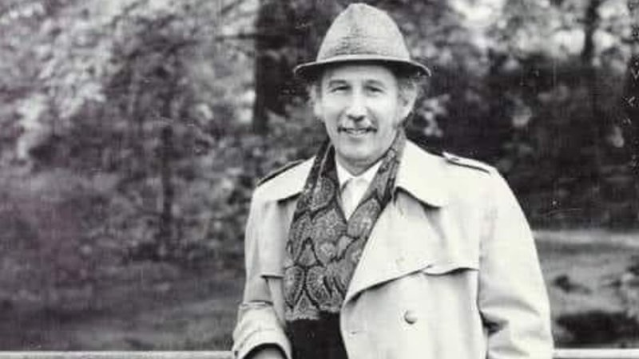

TEZĂ DE DOCTORAT · POEZIE„Ironia este o formă de gravitate care zâmbește.” — inspirat de spiritul lui Marin Sorescu
L-am descoperit pe Marin Sorescu ca poet care slujește poezia, nu ca pe o simplă artă, ci ca pe un mod de a fi, de a înțelege și de a supraviețui. M-a atras, în mod paradoxal, ironia care transpare în versul său -- o ironie fină, subtilă, dar profundă, care nu se impune, ci se insinuează. La început a fost un joc, un pariu cu mine însămi: să pot distinge și descifra această formă de expresie care pare să râdă fără să se amuze, să critice fără să condamne, să plângă fără lacrimi.
Apoi am înțeles că ironia soresciană nu este un simplu joc jucat, ci un joc care își joacă jucătorii. Cei care îndrăznesc să pătrundă în universul său poetic sunt provocați să vadă dincolo de cuvinte, dincolo de aparențe, dincolo de convenții. Poezia de debut din volumul de parodii Singur printre dușmani, face vizibil încă de la început caracterul de erezie al operei viitoare. Deși în acest volum am întâlnit mai degrabă inocența decât ironia, am simțit dorința poetului de a crea literatură „în răspăr", de a contesta, de a se opune cu rafinament.
Nu am abandonat această lectură provocatoare. Am descoperit voluptatea cu care sunt căutate interdicțiile pentru a fi încălcate, canoanele pentru a fi răsturnate. Am înțeles, astfel, literatura ca mod de supraviețuire, iar scrisul ca piesă de rezistență a anilor '60 -- o formă de libertate interioară într-un context istoric restrictiv.
Ironia în poezia lui Marin Sorescu se identifică mai târziu, odată cu apariția parodiei ca mod de contestare. Este o ironie profundă, dar nelipsită, o formă de expresie care permite poetului să râdă acolo unde nu-și permite să înjure sau să plângă. Este o eleganță a lucidității, o demnitate a spiritului care refuză să se lase învins.
După ce mă obișnuisem cu scriitorul în opera căruia referentul livresc era o prezență tutelară, am regăsit volumul La Lilieci, șocant pentru critica vremii. Modalitatea lirică propusă era de o frapantă noutate, iar în paginile sale se anticipa o nouă formă de literatură, mult mai radicală, existentă până atunci doar în stare latentă. Ciclul La Lilieci constituie un experiment extrem și irepetabil, în care poezia este adusă conștient într-un impas, iar mitul despre lumea satului tradițional este răsturnat cu o ironie gravă, tandră și revelatoare.
Această lucrare este, în fond, o încercare de a înțelege ironia nu ca ornament, ci ca esență. De a privi poezia lui Marin Sorescu nu doar cu admirație, ci cu curiozitate și cu dorința de a pătrunde în mecanismele subtile ale unui discurs care râde pentru a nu striga.
Ironia este una dintre cele mai rafinate forme de expresie intelectuală și artistică, un semn al lucidității și al distanței critice față de lume, față de sine și față de convențiile estetice. Ea nu este doar un joc al spiritului, ci o formă de cunoaștere, o metodă de demontare a aparențelor și de revelare a adevărurilor incomode. În literatură, ironia funcționează ca un mecanism de subminare a clișeelor, ca o punte între tragicul existenței și comicul aparențelor, ca un mod de a spune adevărul fără a-l afirma direct.
De-a lungul istoriei ideilor, ironia a fost asociată cu gândirea dialectică și cu spiritul critic. Socrate, spre exemplu, folosea ironia ca metodă pedagogică, punând întrebări aparent naive pentru a demonta certitudinile interlocutorilor săi. Kierkegaard vedea în ironie o formă superioară de existență, un semn al individului care refuză să se conformeze sistemelor rigide. În cultura română, Cioran transformă ironia într-un mod de a supraviețui absurdului, iar Caragiale o folosește pentru a demasca ipocrizia socială și politică.
Literatura română este plină de exemple în care ironia devine un instrument de rafinare a expresiei și de adâncire a sensului. La Eminescu, ironia se insinuează în poemele filozofice („Scrisoarea I", „Glossa"), unde destinul uman este privit cu o luciditate rece, aproape sarcastică. La Arghezi, ea se transformă într-un sarcasm biblic, în care sacrul și profanul se ciocnesc violent. La *Nichita Stănescu*, ironia e mai subtilă, poetică, o formă de joc cu limbajul și cu ideile.
În poezia lui Marin Sorescu, ironia capătă o dimensiune aparte: ea nu este doar un procedeu stilistic, ci o viziune asupra lumii. Poetul nu râde de lume, ci prin lume; nu se distanțează de tragic, ci îl învăluie într-un surâs care nu anulează durerea, ci o face suportabilă. Ironia soresciană este gravă, existențială, uneori absurdă, dar niciodată gratuită. Ea este semnul unei conștiințe care refuză să se lase înșelată de aparențe și care transformă poezia într-un spațiu al lucidității și al jocului.
Un exemplu emblematic este poemul „Trebuiau să poarte un nume", în care Sorescu reconstituie mitul creației dintr-o perspectivă ironică, desacralizată, dar profund umană. Dumnezeu nu mai este demiurgul solemn, ci un creator grăbit, care „n-a avut timp" să le dea nume lucrurilor. Ironia nu distruge mitul, ci îl umanizează, îl apropie de cititor, îl transformă într-un spațiu de reflecție și de emoție.
Astfel, ironia devine la Sorescu o formă de supraviețuire poetică, un mod de a păstra demnitatea în fața absurdului, de a transforma durerea în joc și jocul în cunoaștere. Ea este semnul unei poezii care nu se teme de ridicol, ci îl transformă în revelație.
Ironia, conceptul de ironie (gr.eironeia=întrebare) îşi are rădăcinile în antichitate. Ironia de tip socratic se năştea din interogare, prin simularea ignoranţei, un şir de întrebări condus abil oferea întotdeauna dreptate interlocutorului care nu o avea, acesta fiind convins în final să infirme propriul punct de vedere. Ironia întoarce în sens socratic în folosul său forţele distructive ale erorii, atacă valorile depăşite, dovedind spiritului înţelegerea dogmelor şi elasticitatea raţionamentului. Refuzând închiderea ironia se dovedeşte a fi faţa întoarsă a unei originare vocaţii a deschiderii şi libertăţii.Vladimir Jankelevitch afirma că :"Ironia este un element care reglează principiul măsurii şi echilibrului.Ironia este neliniştea".[^1]
Una din trăsăturile definitorii ale ironiei este simularea ironică şi autoironică. Ironistul , situat între cei ce ştiu şi cei ce nu ştiu îşi recunoaşte la început o inferioritate printr-o atitudine simulată bazându-se pe un anume coeficient de sinceritate. Ironia înseamnă deschiderea unei căi spre a căpăta conştiinţa de sine şi a lua cunoştiinţă de ceea ce este în sine. La Socrate ironia posedă funcţia de stimulent al cunoaşterii, rolul ei fiind să problematizeze evidenţe şi certitudini, să asigure deschiderea infinită a ideilor. Aristotel plasează ironia socratică într-un context moral, ironistul fiind cel ce nu se compromite. Aristotel introduce ironia printre figurile retorice: a numi obiectele prin nume contrarii uzând de antifraze, procedeu care stă la baza retoricii române şi mai târziu la baza silogismului primilor scriitori moderni care vor considera însăşi existenţa umană ca ironică, omul viu ca o ironie încarnată.
Clasicismul va vedea în ironie un act raţional, justiţiar.Ironistul suferă din cauza unei erori existente reale şi tinde să o îndrepte nesuportând deformarea adevărului, reconferindu-le echilibrul necesar. Ironia clasică e adepta unei atitudini echilibrate între exagerările unei imitări haotice şi artificiale ce pot rezulta. Ironia clasicilor (Emile Faguet, Thibaudet) va sugera că nu există adevăr decât acolo unde este universalitate, permanenţă.
Secolul al XVII-lea francez este preocupat de forme ale iluminării prin raţiune , de râs şi ironie. După Descartes, ironia ar fi o reacţie faţă de nepotrivire, faţă de o meteahnă. Cu timpul ironia va fi tot mai mult înţeleasă prin prisma esteticului şi introdusă în sfera acestuia. Sub presiunea atotputernică a raţionalismului dominant, sensul plenar al ironiei socratice se diminuează sau chiar se pierde.
Ironia este redescoperită în perioada romantică, romanticii fiind cei care redescoperă sensul adânc al ironiei. Din punct de vedere istoric s-a observat că ironia este prezentă mai ales în momentele de criză sau în perioadele de sfârşit ale unui ciclu istoric, fiind legată de stările de dezamăgire, când societatea şi-a epuizat credinţa în anumite idealuri şi deziderate sau a asistat la prăbuşirea lor. Ironia devine astfel forţa motrice care, prin gradaţii succesive, asigură continua agilitate a spiritului. Fraţii Schlegel restituie noţiunii, funcţia originară a ironiei, aceea de element al poeziei şi filozofiei, transformând-o în garanţia proteismului permanent al existenţei umane. Romanticii sunt atraşi de polifonia discordantă a ironiei. Kierkegaard consideră romantismul şi ironia echivalente: ironiei şi ironistului corespunzându-i romantismul şi romanticul. Ironia este o expresie a nostalgiei totalităţii dintâi, a dorinţei de a pătrunde în intimitatea spaţiului şi timpului originar (Eminescu). Ironia va crea un amalgam din categoriile pe care raţionalismul clasic le separase. Dacă ironia clasică e aplicabilă mai ales la domeniile eticii şi axiologiei, cea romantică se va raporta la sinele absolut şi la transcendent.
Ca şi Schelling, Coleridge şi alţi esteticieni romantici, Solger distinge între imaginaţie şi fantezie, dar atribuie ironiei, alături de imaginaţie un rol constructiv în opera de artă, ea fiind germenele vital al oricărei arte , facultatea prin excelenţă aptă de a concilia opoziţiile.
În spiritul ironiei romantice, Eminescu îl face pe Dionis, protagonistul unei aventuri metafizice. La Eminescu ironia nu are un rol incidental , ea se află aproape în întreaga sa operă devenind nu de puţine ori chiar o calitate structurantă a poemelor. Romanticii descoperă situarea ironiei între tragic şi comic între râs şi plâns. O descoperă ca ironie tragi-comică.
Pentru Kierkegaard ironia este un chip al forţei omenescului, o formă a binecuvântării sau damnării umane, a libertăţii sau a privării de libertate. În linii mari există trei sensuri pe care Kierkegaard le foloseşte pentru a desemna ironia :
Secolul XX oferă o altă perspectivă asupra ironiei. Din punct de vedere postmodern filozofic Emil Cioran afirmă că : "ironia nu este decât o mască a nefericirii. E o cale indirectă, un ocol pe care îl fac toţi cei răniţi în forul lor interior pentru a ascunde starea lor adevarată, pentru a nu vorbi despre propria lor nefericire. "[^2] Ironia la Emil Cioran înseamnă o formă de cunoaştere venită din lipsă de iluzie, o formă care acoperă şi exprimă suferinţa. Ironia angajează în mod esenţial conştiinţa de sine dar nu rămâne la sinele individual ci se desfăşoară la un sine lărgit.
Ironia este o formă totdeauna afirmativă, dar substanţial totdeauna negativă: încercând o definiţie în termenii cei mai generali, folosind un cuvânt cu înţelesul antonimului. Ironistul spune da cu înţelesul lui nu, adresându-se parcă unor iniţiaţi, căci el nu dezvăluie nici o clipă codul conform căruia "da" devine semnul lui "nu". Ironia sugerează mereu întrebări: ştii că nu ştii?(Socrate), cunoşti necunoscând? (Sfântul Augustin), cunoşti cunoscând?(Hegel), cunoşti tot dar numai atât? (Kierkegaard).
Ironia rămâne o explorare a teritoriului inefabilului de aici fuziunea cu poezia. Resursele de ironie ale unui text sunt cu atât mai mari cu cât contextul este mai complex. Dintre toate discursurile cel mai complex este cel poetic. Ironia nu ne permite niciodată să conchidem , ea închipuie un cerc de sensuri contradictorii şi se constituie într-o continuă sfidare a principiului non-contradicţiei.
Principalele dominante ale conceptului de ironie ar fi:
1\. principiul contrastivităţii - utilizarea unui cuvânt sau a unei secvenţe cu sensul antonimelor acestora. Ironia răspunde astfel naturii duale a omului: trup şi suflet, fiinţă între două lumi.
2\. principiul insolitării şi al antinomiei proporţionale - dominanta ironiei de-a lungul vârstelor ei.
3\. principiul relativităţii - se bazează pe elemente care trimit la relativitate şi incomensurabilitate.
4\. principiul deschiderii social-estetice - capacitatea de a pune mereu lucrurile sub semnul negator şi regenerator al întrebării ironice.
5\. principiul negării « principiilor » - ironia ca teză şi antiteză, ideea că orice adevăr particular nu este decât un adevăr relativ şi nu se consolidează decât prin contrariul lui, care îi este, deseori, complementar.
Ironia nu este doar un procedeu retoric sau literar, ci un mod de a gândi, o formă de existență și o strategie de raportare la lume. De-a lungul istoriei ideilor, ea a fost înțeleasă și valorificată în moduri diferite, de la jocul dialectic al lui Socrate până la sarcasmul metafizic al lui Cioran.
Socrate -- ironia ca metodă de cunoaștere
În dialogurile platonice, Socrate apare ca maestrul ironiei. El nu afirmă, ci întreabă; nu predă, ci provoacă. Ironia socratică constă în aparenta modestie intelectuală („știu că nu știu nimic"), care ascunde o strategie subtilă de demontare a certitudinilor interlocutorului. Prin întrebări simple, dar bine plasate, Socrate conduce discuția spre aporie -- spre recunoașterea ignoranței -- și astfel deschide drumul cunoașterii autentice.
Această formă de ironie este profund pedagogică: ea nu umilește, ci trezește; nu distruge, ci reconstruiește. În esență, ironia socratică este un act de iubire față de adevăr și de respect față de rațiune.
Kierkegaard -- ironia ca formă superioară de existență
Pentru Søren Kierkegaard, ironia nu este doar un instrument dialectic, ci o stare ontologică. În lucrarea sa Conceptul de ironie, el afirmă că ironia este semnul individului care refuză să se conformeze normelor sociale și care trăiește în tensiunea dintre ideal și real. Ironia este, în acest sens, o formă de libertate, dar și de suferință: cel ironic este conștient de absurditatea lumii, dar nu se lasă învins de ea.
Kierkegaard distinge între ironia estetică -- superficială, jucăușă -- și ironia profundă, existențială, care implică o ruptură interioară și o căutare de sens. Această viziune va influența profund literatura modernă, de la Kafka la Camus.
Cioran -- ironia ca formă de supraviețuire
În cultura română, Emil Cioran duce ironia la extrem: ea devine un mod de a supraviețui absurdului, o formă de luciditate radicală. În Pe culmile disperării, ironia este amară, devastatoare, dar și eliberatoare. Cioran nu mai crede în sens, dar crede în stil; nu mai speră, dar scrie cu o eleganță care transformă neantul în artă.
Ironia cioraniană este o formă de demnitate în fața golului. Ea nu salvează, dar oferă un spațiu de respirație, o distanță față de suferință. Este, în fond, o formă de eleganță metafizică.
Ironia a fost dintotdeauna prezentă în literatura română, dar formele ei au variat în funcție de epocă, de contextul istoric și de personalitatea autorilor. De la sarcasmul social al lui Caragiale la ironia metafizică a lui Cioran, de la umorul amar al lui Urmuz la parodia postmodernă, literatura română a folosit ironia ca mijloc de demascare, de distanțare, dar și de supraviețuire estetică.
De la clasicism la modernism
În perioada pașoptistă, ironia era mai degrabă moralizatoare și pedagogică. Alecsandri o folosea pentru a sancționa moravurile, iar Negruzzi pentru a caricaturiza tipologii sociale. La Eminescu, ironia capătă o dimensiune filozofică: în „Scrisoarea I" sau „Glossa", destinul uman este privit cu o luciditate rece, aproape sarcastică. Poetul nu râde, ci demontează iluziile, cu un ton grav și sentențios.
La Caragiale, ironia devine un instrument de demascare socială. Este o ironie teatrală, scenică, construită pe dialog și pe absurdul situațiilor. Personajele sale nu sunt doar ridicole, ci simptomatice pentru o societate în derivă. „O scrisoare pierdută" sau „Conu Leonida față cu reacțiunea" sunt exemple de ironie politică și socială, în care râsul ascunde o profundă dezamăgire.
Avangarda și absurdul
În perioada interbelică, ironia se radicalizează. Urmuz inaugurează o formă de absurd ironic, în care logica este subminată și limbajul devine un joc autoreflexiv. Este o ironie care nu mai are țintă precisă, ci se îndreaptă împotriva însăși ideii de sens. Această direcție va fi continuată de Eugen Ionescu, în teatrul absurdului, unde ironia devine o formă de revoltă metafizică.
Postmodernismul și parodia
După anii '60, ironia se transformă în parodie și pastişă. Poeții generației '80, precum Mircea Cărtărescu sau Florin Iaru, folosesc ironia pentru a demonta solemnitatea discursului poetic și pentru a crea o poezie ludică, autoreflexivă. Este o ironie textuală, care joacă cu formele, cu convențiile, cu așteptările cititorului.
În acest context, Marin Sorescu apare ca o figură aparte: el nu se încadrează nici în avangardă, nici în postmodernism, dar folosește ironia într-un mod profund, existențial, cu rădăcini în cultura populară și în filozofia absurdului. Ironia sa nu este doar un joc, ci o formă de cunoaștere, o metodă de a înfrunta tragicul cu un surâs.
Ceea ce a surprins mai întâi în poezia lui Marin Sorescu a fost un nou tip de simplitate, generat de o modalitate dobândită printr-un exerciţiu de relativizare. Succesul se datora în bună parte faptului că poezia sa întâlnea predispoziţia latentă a cititorilor spre eliberarea de convenţii şi clişee, spre diferenţiere şi înnoire. Pe de o parte, versurile au fost receptate exclusiv în latura originalităţii lor; pe de alta, au fost asociate unor voci lirice dintre cele mai diverse, chiar sub unghi valoric: Anton Pann, Minulescu, Blaga, Topârceanu, Emil Botta, Tonegaru, Urmuz, Geo Dumitrescu.
„Formula propusă de Marin Sorescu se înscrie în genul ironic şi parodic.Mai sigur în cel parodic. Parodicul implică în primul rând un dereglaj la nivelul structurilor de conţinut , acţiunea parodică angajându-se într-o acţiune distructivă/constructivă faţă de toate formele poetice existente; a demola şi carica tot ce a propus creativitatea altora vine din neputinţa de emulaţie în aceeaşi direcţie şi din voinţa de a controla mecanismul creaţiei prin imitaţie."[^3]
Ironia se situează, în ciuda aparenţei umoristice, în spaţiul comicului grav, aflându-se cum observă între primii Vladimir Streinu --" în apropierea gândirii existenţialiste, amintind de absurdul camusian, alteori de greaţa sartriană.[^4] Deseori, ironia lui Sorescu e foarte aproape de râsu' plânsu' lui Nichita Stănescu, ca şi de acel pleurire a lui Raymond Queneau. „Cred că românii -- scrie Sorescu -- nu au un comic pur. Râsul lor se termină cu plâns (\...) plânsul prin luciditate devine iar râs. Tragismul vagului. E suficientă o mică schimbare de unghi şi faci extremele să-şi spargă capul. (\...) Există numai oameni care pot să râdă şi oameni bolnavi de ficat".[^5] Nimic nu e de fapt comic, ca să te facă să râzi cu adevărat, dar nici nu-ţi lasă pe deplin de întoarcerea în teritoriul tragicului, de vreme ce te-ai decis, conştient sau într-un impuls inexplicabil, să negi inevitabilitatea ponderi acestuia. Specific lui Sorescu nu-i râsul, ci surâsul. Râsul este ca o aprindere bruscă, e un impuls spontan, pe când surâsul ironiei -- „râsul cu efect întârziat" sau „râsul în devenire", dar repede atenuat -- este cel de-al doilea impuls reflexiv .
În Simetrie, Sorescu prezintă drama opţiunii existenţiale în labirintul pe care individul trebuie să-l străbată, urmând aceeaşi şi mereu altă eroare; din acest unghi „simetria" eşecului răpeşte orice sens vieţii, devenită, ca la Camus, o „aventură inutilă". Ironia atribuie absurdului obligativitatea de a-şi administra el însuşi dovada imposibilităţii sale; tot ea îi cere acţiuni pe care acesta le face sau le-ar putea face singur. „Surâsul" autorului poate fi simţit acum ca „o spumă pe bază de sare"; „precum spuma valurilor, aceasta scânteiază", făcându-te „să descoperi, însă, pentru o cantitate mică de materie, o anume doză de amărăciune".[^6]
Vocaţia absolutului coexistă în gustul aprioric al eşecului generat de relativitate; pentru a nu deveni vulnerabil printr-o certitudine, Sorescu se îndoieşte de toate. Aşa se poate călători de la o rană la alta. Neîmplinirile fac parte dintr-o posibilă (unică?) împlinire. Eul rămâne mereu dual, între contradicţii. Ele se sting şi se reînteţesc. Rănirea cvasi-mortală e vitală; tocmai de aceea i se cuvine insului să se cunoască să se recunoască, să fie oarecum recunoscător destinului, în vreme ce încăpăţânându-se, va încerca să-i escaladeze tentaţiile, loviturile, încercările, eşecurile. Viaţa se cere trăită până la moarte, gândită prin prisma ei, altminteri nu mai e ceea ce cu adevărat este ea pentru om.
„Scenariul" poate fi „comic" (sau ar putea fi receptat ca atare); substanţa poemului rămâne, însă, de cele mai multe ori, tragică. Omul nu mai apare în faţa idealurilor, ci a deziluziilor sale. Ironia se întâlneşte atunci cu „umorul negru". Ca în secvenţele terifiante ale „ironiei sorţii" din Gura racului, un poem al reversibilităţii absurde unde ironia protejează reflecţia gravă:
Când omenirea a ieşit din apă,
Plină de mâl, alge şi de sare,
Pe ţărmul celălalt urcau,
Suindu-se umil în spinarea celuilalt
Şi alunecând în mare,
Dar săltându-se cu valul următor,
Pe iarbă racii.[^7]
Uneori, la Sorescu, ironia şi umorul capătă un aer cehovian: nu se poate să te împaci cu faptul împlinit; să nu te împaci, iarăşi nu se poate, iar cale de mijloc nu există. „Drama" pare decupată dintr-o serie continuă de întâmplări anonime, „cenuşii" în care omul cedează şi continuă. Continuă să cedeze, căci nu-i mai sunt date serviciile speranţei, el rămânând sub semnul unei oboseli cotidiene, mereu reluate.
O observaţie cu deschidere largă, „concluzivă" totodată, fără a ignora tangenţele şi interferenţele ironiei lui Sorescu, poate fi întâlnită într-un comentariu al lui George Călinescu, din care desprindem: „Dacă ironia îl pune pe poet în contact, în cele din urmă, cu realităţi sufleteşti tulburătoare, mişcarea umorului se termină într-o îmbrăţişare a vieţii. (\...) Între ironie şi umor, poezia lui Sorescu şi-a găsit un spaţiu pe care-l explorează cu mijloace personale, cunoscându-i atât zonele neliniştitoare, cât şi pe cele de un farmec stenic".[^8]
Există un anumit raport între „starea de relaxare" şi cea de „tensiune". Una dintre antinomiile cele mai fecunde ale limbajului poetic ironic rezultă din capacitatea sa de a inventa o coerenţă globală din componente care, luate separat, sunt tot atâtea „incoerenţe" „contrarietăţi" locale; registrul ironic, de un lirism aparent superficial pregăteşte cu precauţie partea a doua, de cu totul altă factură. Ceea ce se petrece la un anumit nivel, se prezintă ca o alăturare de incongruităţi, la un nivel superior, dobândeşte coeziune, organicitate. La Sorescu se cere observată mai întâi subordonarea unor metafore locale unei metafore globale, întregului text; poezia constă, înainte de toate, în detalierea unei metafore, în descompunerea ei în altele, sensul global conturându-se treptat, deseori abia cu ultimul cuvânt. Simplificând, cele mai multe poezii se desfăşoară pe două planuri. Cel evident şi explicit tinde, de obicei, spre comic. El ţine de o atitudine ironică nu la adresa tragicului, cât la adresa expresiei comune, plate, previzibile pe care acesta o primeşte. Cel de-al doilea plan este unul „implicit". El sugerează, finalmente, o admisiune tacită, inevitabilă a tragicului, printr-o deschidere ce repune lumea sub pecetea întrebării, sub semnul unei dileme detensionate totuşi de subzistenţa primului plan. Imprevizibilul rezultă din „duplicitatea" şi turnura metaforei. Prin ironie, cititorul se află în faţa unui ultim sens, „frustrat": o aşteptare, o înşelare a ei, aşteptarea acestei înşelări, înşelarea acestei aşteptări, şi tot aşa până la finalul multiplu , care, evident, va necesita parcurgerea drumului înapoi, spre versiunea „relaxată" a textului, din care „tensiunea" de tip poetic s-a desprins. Itinerariul demersului ironic poate fi uşor identificat aproape în fiecare text.
La apariţie, în 1973, primul volum din seria La Lilieci se dovedea unul din cele mai radicale din ultimii ani; în consecinţă, şi unul din cele mai controversate. Autorul ţinea să se elibereze de formulele deja existente şi de acelea care se nasc, involuntar, în scrisul oricui. Cititorul întâlneşte un alt Sorescu, tentat mai mult acum de descoperirea unei biografii arhetipale."Până la apariţia primului volum din seria La lilieci (1972) , lipsa de autenticitate a formulei persistă , chiar dacă stilul sorescian se impune. Abia odată cu „divulgarea" surselor originare , discursul parodic îşi capătă , aşa cum spuneam o omologare de substanţă; cele patru volume intitulate **La lilieci** reprezintă fundamentul ,grund-ul, întregii literaturi practicate de Marin Sorescu ."[^9]
Ironia deschide spre „alte voci, alte încăperi". În rotirea oglinzilor, intervalul anilor este abolit printr-o comunicare spirituală între toate părţile timpului trăit. Cu drame majore şi, mai ales, cele fără importanţă, cotidiene. „Timpul povestirii" este, ca dominantă, unul de tip paradisiac, prin încercarea recuperării unui grai pierdut. Punerea în scenă, improvizaţia ludică, amestecul de francheţe şi disimulare, tonul grav, dispoziţia narativă, gustul poantei rămân însă aceleaşi. Ce sunt de fapt, „poemele" -- cum le numeşte autorul? Antipoezie? Posibil. Sorescu redescoperă dialectica vârstelor, de la naştere până la moarte, credinţele, relaţiile familiale, ocupaţiile cotidiene, redistribuind „rolurile" unei enciclopedii vii. De fapt, totul ţine de întâlnirea a două lumi: a celei vizibile şi a celei invizibile . Sorescu vorbeşte de un „teatru cât satul" (formulă pe care o comentează şi Ion Pop în *Jocul Poeziei*). Ironia şi parodia deschid aici spre o „teatralitate" insolită, realistă şi fantastică, tragică şi burlescă; o teatralitate a logicii vieţii şi limbajului, a sensului şi non-sensului lor, pendulând neaşteptat între Pascal şi Păcală, între un Cyrano de Bergerac şi-un Prepeleac . Textele abundă în practici oculte, credinţe, superstiţii, ritualuri, ţăndări ale unui complex de mentalităţi arhaice ilogism ce nu exclude, în subsidiar, ideea unei coerenţe prime, a cărei unitate s-a pierdut :
„Al lui Fleţu, Ai lui Fleaşcă,
A lui Gârlă,
A lui Tiugă,
Al lui Băşină,
Ionete-al lui Făsui,
Al lui Deşca Roncioaica, Coadă al lui Ceapă,
Sandu lui Ciurel,
Tăgărâlă, Ai lui Mitofan,
Ai lui Modărlan"[^10], şi înşiruirea continuă.
Ironia se reîncarcă afectiv, salvând de la uitare un limbaj plin de miez: *convercom , cârpător, vrau, uiv, văscălie, vrăjmătos, nevecuit, pecie, leau, spiţelnic, coprelă, pârmac, bleasc, sâtit, sărăriţă, zăpuc, de-a tuturiga, de-a alimerele, gărgăunariţa, cucumbele, cloţă, cocârlă, îngâmbat, năplai, însovonită, ududoaie, gârniţă etc.*
Când nu e facilă, prin liniile contradictorii care o compun, ironia protejează lirismul, punând într-o altă relaţie lumea exterioară şi cea dinăuntru, universul „real" şi cel „imaginar", aducând astfel o altă înţelegere a simultaneităţii lor. În jocul de-a viaţa şi de-a moartea, ironia ascunde şi, totodată, lasă să se întrevadă nostalgia fiinţei de a se putea dărui posibilului.
Pentru a atinge starea visată a sufletului şi a poeziei Marin Sorescu urmează însă, drumul neaşteptat al refuzului literarului, înţeles ca respect al normei, artistul „uitând" convenţii şi reguli. Poetul coboară, astfel, pe acele „străzi deja asfaltate" ale limbii cotidiene, excluse din biblioteci şi legile armoniei poetice, dar căutând, prin acest demers atât de puţin legat, aparent, de declaraţia sa lirică, „să actualizeze marea funcţie lingvistică şi ideologică a comunicării literare"[^11]
„O, sufletul, curatul argint de-odinioară" (aşa cum a spus Macedonski) a devenit „sufletul bun la toate".[^12]
Marin Sorescu şi-a folosit sufletul de poet la toate: „la mersul femeilor" şi „la apreciat distanţa între două gâze", „ca pe o stea", „ca pe un telescop", „ca pe o cârpă". Arghezi îl folosea, de asemenea, la multe, şi Ion Barbu l-a osândit în numele poeziei pure.
Poezia argheziană, deja îmblânzită prin familiarizare în timp şi acţiune pedagogică, nu mai şochează prin îndrăzneală şi „impuritate" sufletul nostru, care nu a renunţat la precepte şi reguli, dar le-a făcut mai suple şi mai tolerante. Suntem de acord cu multe, chiar cu folosirea sufletului „ca o perie" şi „ca o cârpă" în poezie, incluzându-i, deci, acestei „rostiri esenţiale", universul casnic şi menajer, deşi această compatibilitate reprezintă de fapt o regulă nouă. La suprarealişti, invazia elementelor apoetice nu şoca atât: era vorba de o substituţie a universului poetic tradiţional. La Marin Sorescu este altceva: are loc o expansiune a celui tradiţional, o avansare care înglobează şi obiecte ce avuseseră voie să semnifice doar în proză până atunci.
Aşa că aceste poeme, nu miră prin declaraţiile făcute, care ar putea aparţine, de fapt, oricărui poet al actualităţii. Uimeşte, însă, faptul că autorul cerebral şi lucid, experimentator al modelelor create de sine însuşi, aşează acest romantic concept al sufletului în centrul sistemului planetar al poeziei sale. Volumele de pe rafturile bibliotecii, tăvile cu capetele înţelepţilor, mersul femeilor, gâzele, stelele şi telescoapele să se rotească în jurul său, urmărindu-l şi depinzând de suflet ca de un soare. Numai raportând poemele acestea ale lui Marin Sorescu la creaţia sa, în totalitatea ei îndrăzneaţă, nesupusă, ocupată doar să se certe cu regulile şi cu înţelepţii care au creat tablele legii, apare uimirea. Şi, în urma ei, întrebarea: de ce impulsul liric nu se revelează deschis în opera sa poetică, pe care comentatorii au numit-o adesea „antipoezie"?
Ceea ce mărturiseşte Postfaţa la volumul Tinereţea lui Don Quijote este o situare în centrul subiectivităţii ca un centru al lumii şi problematicii umane, o trăire „în inima umanului" ca sursă a poeziei:
„Să dialoghezi despre problemele fundamentale ale tale, ca om: fericire, adevăr, existenţă, moarte. Pentru că te ating în mod nemijlocit, nu poţi să nu fii preocupat de aceste probleme. A scrie despre altceva (nişte teme oarecare date din afară) e ca şi când, aflându-te căzut într-o baie de mercur, ai încerca să suferi pentru cei care dorm pe puf. Suferinţă falsă. Totdeauna eşti centrul propriei atenţii. Am spus greşit «căzut într-o baie de mercur». [^13] Mercurul e în tine, destinul e intern, sângele tot îţi arde -- şi cu atât mai mult poţi suferi pentru cei îngheţaţi de la Polul Nord. Dragostea caldă pentru tot -- iată o temă retorică. A avea curajul să-ţi dezvălui subiectivitatea, sufletul până în cutele lui cele mai întunecoase, spaime şi năzuinţele cele mai intime -- iată poezia.
Un rol de referinţă l-au avut : cenaclul Junimea şi revista *Amfiteatru „din prima perioadă de funcţionare şi apariţie (sau promoţia'70, cum a numit-o Laurenţiu Ulici)"[^14] , Cenaclul de luni* (Bucureşti), revistele : „Echinox" (Cluj), „Dialog" (Iaşi), „Forum studenţesc" (Timişoara). Schimbând ceea ce e de schimbat, cu o parte a aşa-numitei generaţii '80 se întâmplă ceea ce s-a întâmplat cu tinerii poeţi din anii războiului de la revista „Albatros" ori cu aceia editaţi la „Forum": o reacţie anticonvenţională, afirmată în vederea unei noi autenticităţi, în numele unei noi substanţialităţi.
„În relaţia reciprocă a semnului cu lumea, se constată o accentuare a conştiinţei critice, tinzând la o metaliteratură de tip „corintic" (cu înţelesul de „convenţie asumată", cum ar spune Nicolae Manolescu). Ironia nu este doar o negaţie ci o încercare de recuperare ."[^15] Se adaugă astfel fragmentarismul (ca viziune asupra lumii şi a poeziei, paradigmele şi mixajului , distorsiunea prin ironie ducând la colajul şi confuzia deliberată a temelor şi motivelor „înalte" cu acelea „umile", la inversarea toposurilor tradiţionale; spiritul şi realul sunt văzute în intercondiţionarea lor. De aici, autoreflexivitatea şi *referirea la lume*, noi mutaţii între spiritul creator de real şi realul creator de spirit. Ironia se asociază, detaşându-se de scriitura „inocentă", cu umorul (şi nuanţele lui de la roz la negru): burlescul, grotescul, sarcasmul, parodia tematică sau stilistică, ludicul. Rezultă, de obicei, o abordare a realului şi imaginarului (discretă sau ostentativă), care-şi diversifică „strategiile" sau „tacticile" fără preliminarii retorice, dar şi o absorbire a realităţii în demersul textului, care îşi conţine şi jocul, cu imprevizibile (calculate) rotiri. Comedia banalităţii cotidiene este dublată de aceea a libertăţii înseşi, niciuna refuzându-şi conştiinţa limitelor.
În termeni francezi, ironia oscilează între „textul constelat" („étoilé) lu cek „sfărâmat („brisé); între „desemnare" şi „diseminare".
E reactualizat, într-un anume fel, ridicolul, fiindcă se poate învăţa mereu câte ceva de la el. Generaţiei '80 i s-ar potrivi aceste rânduri ale unui Mircea Eliade tânăr: „Mi se pare că ridicolul este elementul dinamic, creator şi nou în orice conştiinţă care se voieşte vie şi experimentează pe viu (\...) o bună definiţie a ridicolului ar fi următoarea: ceea ce poate fi reluat şi adâncit de altul (\...) vieţii proprii, nude, imediate -- refuzâdu-te superstiţiilor, convenţiilor şi dogmelor (\...) Ridicolul singur merită să fie imitat. Căci numai imitând ridicolul imităm viaţa, deoarece acolo se ascunde sinceritatea ei deplină, iar nu convenţiile ei -- care sunt aspecte ale morţii. Şi moarte, slavă Domnului, găsim destulă şi în noi"[^16].
E vorba, desigur, de un ridicol care poate păstra şi salva omenescul, demnitatea lui.
Există, incontestabil, o dinamică a transformării limbajului, fiindcă textul, în măsura în care traversează alte limbaje, este traversat: intertextualitatea devine modul în care un text receptează istoria şi se inserează în ea; ca atare, în discursul poetic sunt lizibile mai multe discursuri. Deseori e vorba de un „discurs între texte", din asimilarea şi re-elaborarea altora prin şi în cel scris.
Textul devine astfel, prin punerea în paralelism sau menţinerea în stare de virtualitate a altor texte, o imensă sală a oglinzilor. De aici, necesitatea „interanimării" cuvintelor. Fiecare imagine îşi conţine sămânţa propriei distrugeri, reprezintă o perpetuă construire şi demolare a imaginilor ieşite dintr-un sâmbure central, el însuşi constructiv şi distructiv în acelaşi timp; fiecare imagine urmează a fi o serie de afaceri, desfaceri, refaceri, din care rezultă împăcarea momentană, dincolo de momente, care este poezia.
Reuşind (fără a încerca să opteze) un model (des-)centrat de structura interioară şi exterioară a lumii, combinând forma „închisă" cu forma „deschisă", permanenţa cu schimbarea, existenţa „absolutului" cu a „devenirii", prin antagonisme complementare, se tinde la înlocuirea unui ansamblu de excese şi lacune contrare. E, poate, o încercare de inaugurare a „unei noi episteme", prin faptul că se vrea o reluare lucidă a problemelor modernităţii şi o repunere în discuţie a principiilor ei iniţiale, deformate sau pierdute pe drum; şi, totodată, o încercare de depăşire a modernităţii şi de necesară întoarcere a modernităţii asupra ei înseşi. „Vina distrugerii" tradiţiei se manifestă, compensativ, prin deschiderea către toate trecuturile, prin încercarea de încorporare a acestora în chiar contextul şi structurile nou create prin distrugerea lor. Combinând autobiografismul şi fantezia livrescă, neosentimentalismul cu luciditatea, cei din generaţia '80 vizează mereu o coprezenţă şi încearcă să „suplimenteze", ei pervertesc relaţia beligerantă între minus şi plus, o fac ambiguă, transformând „asasinatul" în „convieţuire". Revendicându-se în bună parte de la „logica dinamică a contradictoriului", poezia pune în loc o dialectică în cheia căreia momentele „realismului" şi cele ale „abstracţionismului" se conţin reciproc sau chiar coincid în rădăcinile şi inflorescenţele lor (intime sau externe). „Postmoderniştii" (cei mai mulţi fiind ai generaţiei '80) execută o piruetă dublă: „înapoi, spre viitor", legiferând astfel putinţa reîntoarcerii la orice stiluri, genuri, specii, teme, motive. Aceasta cu condiţia de a nu-i permite vreunei formule să devină tiranică şi exclusivistă, subliniindu-i fiecăreia, prin „sinonimia" dintre luciditate şi ludicitate, subordonarea faţă de „regula jocului".
Poeţii care au debutat în anii '60 s-au format într-un climat favorabil experienţelor lirice cele mai personale. Aşa se explică rapida lor consacrare . Primul dintre ei, a fost NICOLAE LABIŞ, a cărui strălucire neobişnuită a constituit steaua polară a generaţiilor următoare. Cum ar fi evoluat talentul excepţional al lui Labiş, mort la 21 de ani, nu e greu de intuit. Singurul volum publicat de poetul însuşi (*Primele iubiri*, 1956) şi dominat de evocarea copilăriei, pe care pluteşte umbra tristă a războiului, relevă a biografie repede devenită exemplară, pentru că o generaţie întreagă s-a recunoscut în ea. Imaginile nu sunt neobişnuite, dar dezvăluie o vibraţie constantă spre puritate, din care, mai târziu, poetul va încerca să închege o etică. Întâile amintiri se leagă de satul de sub munte, de pârâul „de cleştar şi de stele", cu peşti alburii, de pădurea cutreierată de căprioare, cerbi zvelţi, râşi ageri. Tabloul e aproape epic. Un om a fost luat cu boi cu tot de puhoaie într-o primăvară. Pădurea are dramele ei, cărora mintea copilului le dădea proporţii fabuloase. Satul acestei vârste, munţii, pădurea cu sălbăticiunile ei, izvoarele sunt icoanele unui basm tulburător, incert, peste care trece deodată, teribil, războiul. Imaginaţia copilului reţine dezastre, suferinţe, crispări. Altă experienţă decisivă e seceta. Poezia memorabilă e Moartea căprioarei. Detaliile evocatoare au o materialitate neînchipuită. Universul pare halucinant. Firul de apă prelins din cişmea „fierbe pe piatră", ciuturile scot din fântână nămol, valea răsuflă „cu foşnet veştejit".
„Soarele s-a topit şi a curs pe pământ.
A rămas cerul fierbinte şi gol".[^17]
Pământul e ca o „altă planetă, imensă, străină şi grea", un Jupiter de plumb rătăcind pe orbită. Semnificaţia poeziei este criza candorii copilăriei. Celălalt volum, Lupta cu inerţia, apărut postum, în 1958, oferă alt peisaj interior, altă vârstă poetică, de la nivelul căreia poetul se reconsideră sever („Am fost stup de pofte şi de miere").
Ideea centrală este refuzul inerţiei. Stagnarea, inerţia erau respinse, din alt unghi, chiar în poezia copilăriei , prin afirmaţia implicită a perpetuei schimbări, transformări. Copilăria, adolescenţa sunt stări necristalizate, procese, şi poezia „primelor iubiri" era expresia acestei mişcări în timp. Acum refuzul inerţiei e conştient şi se leagă de principiile revoluţionare care călăuzesc etica poetului. Labiş schiţează chiar (Intima comedie, Lupta cu inerţia, Lui Marx etc.) o tablă de valori morale, propunând în inerţie un simbol social şi uman negativ. Din punct de vedere artistic poetul era în plină căutare, poemele scrise sunt marturii ale unui poet cu o capacitate extraordinară de a gândi în imagini şi de a construi vizionar.
Ecoul poeziei lui Labiş continuă să fie tulburător. Labiş e autorul unei „lecţii de poezie"[^18]. Revelarea unei biografii tipice, dispoziţia etică şi filozofică, efortul lui de a înfrânge inerţiile vor fi pentru generaţia cea mai tânără de poeţi contemporani un exemplu fertil, nu o dată tiranic. Dacă influenţa directă poate duce la epigonism, în cazul de faţă e vorba de altceva. Labiş a creat un climat poetic din care şi-au luat aerul numeroşi poeţi. E mai puţin important să căutăm la aceştia gesturi şi motive labişiene (coincidenţă, de altfel, nu tocmai neaşteptată, câtă vreme se explică printr-o coincidenţă de biografie), dar mai ales să înţelegem modul în care s-a transmis atitudinea generală a lui Labiş. E vorba de orientarea poeziei spre problemele majore ale omului contemporan. Aflat într-un punct critic, Labiş a exprimat ca nimeni altul tendinţele latente ale poeziei, anticipând acea aspiraţie spre lirica fundamental meditativă, spre reflexia care dă un sens mai adânc trăirii, generalizând-o, asociindu-i simboluri ale condiţiei umane sau ale istoriei -- aspiraţie care a dominat poezia şi care depăşeşte cadrul unei singure generaţii. Cristalizând forţele interioare, tendinţele poeziei în simbolul „luptei cu inerţia", creaţia lui Labiş e mai însemnată în consecinţele ei decât în valoarea absolută.
În anul 1960, Editura pentru literatură a creat o colecţie, cu nume sugestiv, Luceafărul, destinată debutanţilor. Au apărut, în patru ani, în această colecţie aproape treizeci de volume de poezie.
Dar în afară de orice , a fost vorba despre o extraordinară înviorare a climatului poetic în aceşti ani, înmulţirea tentativelor originale, refuzul şabloanelor, şi al epigonismelor. Generaţia '60 era atrasă de o lirică substanţială şi nouă. A fost o uimitoare înflorire a poeziei, care reprezenta, prin valoare, un moment fără precedent în toată literatura română.
Unii dintre debutanţii în colecţia Luceafărul s-au impus de altfel, foarte repede, fiind la al doilea sau la al treilea volum nume consacrate. NICHITA STĂNESCU (Sensul iubirii, 1960, *O viziune a sentimentelor*, 1964) a început prin a exprima, cu mare originalitate, motivele unei vârste critice. Tânărul poet de atunci , a fost primit cu multe rezerve şi analizat foarte superficial, el nefiind pur şi simplu un imagist, aşa cum fusese iniţial catalogat . El construia plastic într-un spaţiu de abstracţiuni, de idei. Poezia era , cu propria lui metaforă, o „viziune a sentimentelor": împinsă în univers , Ca antenele melcilor, sentimentele receptează fenomene insesizabile pentru simţul comun, o realitate în care toate legile fizice îşi schimbă înţelesul, gravitatea pare anulată, obiectele plutesc, transparente şi imateriale. Poezia lui Nichita Stănescu se supunea cu dificultate analizelor curente: ea nu era nici emoţională, nici raţională, nici metaforică în accepţia ştiută. La întâia lectură, noutatea reprezentărilor deconcerta, dar cititorul familiarizat avea revelaţia unui univers fascinant, de o stranie frumuseţe, mai adevărat în irealitatea lui decât în cea mai indiscutabilă realitate.
Cele mai bune poezii ale lui CEZAR BALTAG (Comuna de aur, 1960, *Vis planetar*, 1964) erau nişte meditaţii de-o suavă gravitate asupra naturii miraculoase, asupra iubirii, asupra sensului social al existenţei. Poetul n-avea însă destulă spontaneitate, poeziile „de idei" fiind uşor retorice, conceptuale: cuvintele lasând să se vadă ideile ca apa râului pietrele de pe fund. Frumoasă e mai ales erotica, unde se observă numaidecât lunecarea melodioasă a liedului, a romanţei (în felul lui Apollinaire), cu o notă de tandreţe cuceritoare: „Gândurile înnoptară\.../ Inimă, te las să pleci/ călătoare într-o frunză/ pe nervurile poteci"[^19]\... Epurată de orice aluviuni, într-un efort de reducere la esenţial (care produce pe alocuri impresia de livresc şi artificiu), e poezia lui ILIE CONSTANTIN (Vântul cutreieră apele, 1960, Desprinderea de ţărm, 1964). Piesele lirice sunt de obicei nişte miniaturi graţioase, într-un stil impecabil, cu metafore adesea surprinzătoare. Versurile au, în multe cazuri, transparenţa unor definiţii, fără pierderea suavităţii. Câmpia, bunăoară, e o „zare continuată", un „repaos îndelung al soartei lumii", iar dragostea „leagă în marmură zidurile încă de pământ/ şi răsună adânc în ghitara/ culcată pe perete".[^20] O voce pură, are, în volumul de debut, ION ALEXANDRU (sugerată chiar de candoarea titlului Cum să vă spun, 1964). Poemele de debut sunt mai ceţoase, într-un vizibil proces de închegare. E peste tot intuiţia unei materii aspre, poroase, deasă de molecule uriaşe, strivită de o gravitaţie colosală. Un peisaj de secetă e apocaliptic, cu un aer greu ca de pe o altă planetă: călcâiul seacă-n bocanc, cade smalţul de pe dinţii fetelor, salcâmii se umplu de râie. O poemă foarte originală comunică în acest chip surprinzător dezechilibrul pe care-l produce în noi poezia, umplându-ne sufletul de iradiaţiile ei.
GABRIELA MELINESCU (Ceremonie de iarnă, 1964), este o poetă cu o voce neafectată şi tandră. Sensibilitatea e băieţoasă, amestec de inocenţă şi candoare, o feminitate care se descoperă de uimire. Tonalitatea sentimentului e mai degrabă minoră. ANA BLANDIANA al cărei volum de debut (Persoana întâi plural, 1964) fixa o stare sufletească unică, jubilaţia intensă a descoperirii lumii, amintind prin intensitatea senzaţiei, prin candoarea cu care se exprimă misterul vârstei, de *Ţara fetelor* a Mariei Banuş. Dar poeta a înlăturat nesperat de repede pericolul de a rămâne la această singură coardă. Într-o poezie ulterioară, excepţională, declară un protest de o tulburătoare frumuseţe împotriva meschinăriei, a prozaismului şi a tot ce maculează viaţa, izbitoare e tocmai valoarea universală a emoţiei.
Şi alte nume de poeţi (debutanţi în acea perioadă , majoritatea) trebuie consemnate. ION GHEORGHE " inaugurează traiectul orfic al direcţiei neoexpresioniste , la un moment dat foarte puternică în literatura româna actuală. Tensiunea vizionară şi încrederea în limbaj , în afara oricărei conştiinţe critice , caracterizează acest tip de discurs imanent."[^21]
LEONIDA NEAMŢU (Cântecul constelaţiei, 1960, Ochii, 1962), FLORIN MIHAI PETRESCU (Stele roşii, 1960, Perspective, 1963), ANGHEL DUMBRĂVEANU (Fluviile visează oceanul, 1961, Pământul şi fructele, 1964), FLORENŢA ALBU (Fără popas, 1961, Intrarea în anotimp, 1964), ION RAHOVEANU (Creanga de măslin, 1961, Cerul dintre noi, 1964), HORIA ZILIERU (Florile cornului tânăr, 1961), MIRON SCOROBETE (Manuscris, 1962), ION ACSAN (Primăvară cosmică, 1962), GRIGORE HAGIU (Autoportret în August, 1962), CORNELIU ŞERBAN (Cuvinte pentru mâine, 1962), ADRIAN MUNŢIU (Vârsta cunoaşterii, 1962), MIHAI NEGULESCU (Nopţile albe ale oraşului, 1962), DARIE NOVĂCEANU (Autobiografie, 1962), ION CRÂNGULEANU (Anotimpurile Griviţei, 1962, Lumina de dragoste, 1964), CONSTANŢA BUZEA (De pe pământ, 1963), RADU CÂRNECI (Noi şi soarele, 1963), PLATON PARDAU (*Arbori de rezonanţă, 1960), VICTORIA ANA TĂUŞAN (Cadenţe*, 1963), MARIN SORESCU (Singur printre poeţi, 1964), CONSTANTIN ABĂLUŢĂ (*Luminile pământului, 1964), NEGOIŢĂ IRIMIE (Cascadele luminii*, 1964), SINA DĂNCIULESCU (Ploaie în aprilie, 1964), DIM. RACHICI (*Între mare şi cer, 1964), DAMIAN URECHE (Temperamentul primăverii*, 1964). Rămâne timpului delicata sarcină de a păstra dintre aceste nume pe cele mai semnificative.
Parodiile sunt, cu adevărat, originale prin ironia şi ceea ce am putea numi imaginaţia modelelor. Calitatea din urmă este rară în poezie şi desparte de regulă parodia obişnuită (adesea perisabilă) de poezia în stil parodic. Umoristul parodiază un stil pentru a obţine un efect comic. Poetul care are imaginaţia modelelor reproduce structurile formale ale unui poem pentru a crea un alt poem în care ironia nu distruge lirismul. El se foloseşte de celebra lance a lui Apolo: un un capăt răneşte (parodiază, ironizează, îngroaşă defectele, ticurile), cu celălalt vindecă, adică recreează modelul şi-i dă o altă semnificaţie. Poemul poate trăi independent de model şi supravieţuieşte şi atunci când obiectul (evenimentul) ce l-a provocat a ieşit din actualitate. Poezia cotidianului, aşa cum era gândită şi scrisă la începutul anilor '60, nu mai interesează,în aceeaşi măsură , parodiile lui Marin Sorescu în stilul acestei poezii nu şi-au pierdut verva şi originalitatea. Este o bună măsură între critică (satiră) şi poezie. Critica demolează şi produce râsul prin etalarea clişeelor literare, spiritul creat reorganizează poemul şi reabilitează mitul în profunzimile lui.
În acest spirit sunt compuse mai toate parodiile din *Singur printre poeţi*. De remarcat sunt acelea în care înverşunarea satirică este mai mare şi plăcerea recreaţiei mai mică. Un exemplu este Ferestre la cub (după Nichita Stănescu), un altul e Imn către necunoscutul din mine, o parodie în stilul A. E. Baconsky. „Stănescizând" (expresia există în comentariul critic ce însoţeşte parodia), Marin Sorescu reproduce absurdul, paradoxul ieftin din modelul liric folosit de colegul său de generaţie, dar uită, ceea ce locuieşte în el şi anume, îl citez aici chiar pe Nichita Stănescu, „maţul unui zeu". Adică nebunia lui, aceea care face ca absurdul să capete un sens şi paradoxul formal să exprime o nouă relaţie între lucruri. Parodia ne face, în acest caz, să râdem, dar parodia nu se întrece pe sine şi nu ne dă ceea ce aşteptăm şi anume o variantă ironică a „stănescianismului". Rămâne frumuseţea formală a versurilor şi inteligenţa ironicii demolatoare:
„Unul, două...
Unul, două, trei...
Oh, P~1~, P~2~, P~4~, P~7~, P~9~
au îngenuncheat zamfirul celor patru lei.
Un ochi rotund mă doare drept în frunte.
Din coama lui un curcubeu în mine
Se arcuia peste o apă şi-un munte
Tăiat de nu ştiu ce bine.
Văzui atunci venind cinci sentimente.
Unul gonea călare pe el însuşi.
Al doilea cărat într-o lectică
Al treilea şi-al patrulea-aveau chică.
Le-am aţinut atunci c-un ţipăt calea.
Apoi tăcerea şi-a pus vată în urechi...
Cerul era-n vocală şi-avea spre orizonturi
Curbate coastele-i străvechi".[^22]
Cele mai multe pilde critice în versuri, cum au fost numite parodiile, arată un simţ mimetic superior şi o capacitate, expresie remarcabilă. Parodia modelului neoclasic, în varianta Ion Horea, reprezinta într-un anumit fel o performanţă. Este, aici, şi un splendid poem al roadelor, este şi un poem ironic şi fantezist în marginea neoromantismului ţărănesc:
„Când toate-n jur sunt coapte, belşugului dând cep,
Ai fost vreodată-n piaţă, tu, omule, te-ntreb?
Ai mers uşure-acolo, ca la un clar de lună.
Ţinând cu-nfiorare umană plasă-n mână?
... Parcă se mişcă valuri pe Murăş sau Trotuş...
De-un morcov cu, pegasul legând, ca de-un ţăruş.
Las sufletul în voie, ca însetaţi, drumeţii.
La ciuturi, să se umple de sentimentul pieţii.
Şi-ntârziind cu ochiul timid pe câte-o doamnă.
Bronzată ca o prună, cărnoasă ca o toamnă.
Ce cumpără verdeaţă, mă-ncearcă-un gând anume.
Un dor -- un dor de fructe şi unul de legume.
Pss! Degetul la buze dacă ţi-l duci, auzi
Cum se va face valuri prin duzi şi cucuruzi.
Chiar în minuta asta pe-al şesului porthart
A mai căzut o nucă şi-un turchestan s-a spart.
Ca un obuz de soare, cu schije de miresme.
Rănindu-te cu sâmburi din suflet pân' la glezne.
*Ştiţi voi pământul ăsta cum ştie el s-aleagă?! Culori şi forme, soiuri -- şi apoi cum le leagă?*
Tarabele gem pline, ca fagurii de miere,
Vrei ceapă? Poftim ceapa-ţi
Vrei mere? Uite, vere!
Şi hrean, ridichi de lună, spanac şi chiar fasole
Crescută sus pe-aracul vânjos ce-acuma gol e...
Sunt ramurile-ntinse ca nişte catapulte
Ce aruncă-n piaţă fructe, o grindină de fructe
Şi gureşe cireşte şi mândrul cantalup.
A cărui plină cramă îmi cere s-o destup.
Şi piersice pufoase şi merele iubeţe,
Ca sânii de fecioară la fel de gogoneţe...
Legume, fructe, toate vor limba să-ţi dezmierde,
Bătrânul castravete, deşi-i bătrân, e verde.
Ardeii-ţi sat în plasă, de iuţi şi-obraznici cumu-s.
Cartofii dorm tot leneşi, tot nespălaţi de humus,
Iar vânăta n-o-nghite, necum că va s-o guste
Cândva pe ţaţa varza cu douăzeci de fuste.
Vezi? Pătrunjelul fraged vrea să se afle-n ciorbă.
Timid e leuşteanul, dar ţelina felină
Furat-a pentru tine mireasma din grădină".[^23]
Stilul Sorescu\... Cum l-am putea defini? După stilul ludic, parodic din Singur printre poeţi, Sorescu a trecut la o poezie care a fost numită, fantezistă şi ironică (*Poeme, Moartea ceasului, Tinereţea lui Don Quijote* etc.). O poezie demitizantă, de o metafizică interioară. G. Călinescu o definea în felul următor: „O capacitate excepţională de a surprinde fantasticul lucrurilor umile şi latura imensă a temelor comune; este entuziast şi beat de univers, copilăros, sensibil şi plin de gânduri până la marginea spaimei de ineditul existenţei, romantic în accepţia largă a cuvântului". [^24] Sorescu nu este uneori nici entuziast, nici romantic şi, dacă este să vedem o constantă a stilului său poetic, aceasta este respingerea stilului înalt, propriu unei bune părţi a modernităţii. „Strigătul de admiraţie în faţa sublimităţii"[^25],de care vorbeşte G. Călinescu, nu apare niciodată singur în poemele soresciene. Este însoţit de ironie, şi ironia mişcă sensurile, deturnează sublimul. De remarcat în poemele din această fază (până la volumul La Lilieci, 1973) prezenţa parabolicului în jocurile spiritului.
Poemele spun, cu adevărat, ceva profund, ascund o morală, dau, în fine, un sens mai înalt expresiilor înveselitoare, paradoxurilor, absurdităţilor calculate din limbaj. O comentatoare, Andrea Genovese (66 Poemes, traduits du roumain par Lean-Louis Courriol, Centre d'Etudes des interactions culturelles, Université Lyon 3), îl defineşte pe Sorescu ca pe un moralist, un „esperanist" liniştit, un revoltat „mythofag" în descendenţă suprarealistă. Un suprarealist, Sorescu nu este, e limpede, deşi el pune în discuţie modelele şi stilurile constituite ale poeziei. Din avangardă, ia gustul pentru insolit şi cultul pentru paradox, ca şi un sentiment mai general de revoltă. Dar revolta soresciană, aici comentatoarea are dreptate, este îmblânzită de ironic. „Mithofag", Sorescu este în măsura în care mitofagia îl ajută să-şi construiască propria mitologie lirică. Faptul se vede mai limpede în La Lilieci, un ciclu poetic fundamental. Cu el, Sorescu introduce în poezia noastră un nou model liric: acela al postmodernismului. Cam tot atunci şi cu alte mijloace lirice Leonid Dimov şi Nichita Stănescu propuneau alte variante ale postmodernităţii: unul (Dimov) prin barochismul lui oniric, celălalt (Nichita Stănescu din *În dulcele stil clasic) printr-o poezie recuperatoare, sentimentală, voit leneşă*, muntenească\... Revoltatul liniştit, teatralizant, „esperantist" merge pe calea lui şi în La Lilieci ne propune o surprinzătoare mitologie lirică valorizând limbajul şi formele pierdutei civilizaţii ţărăneşti."
„ In La Lilieci , viziunea organică a unui mondo alla rovescia specifică unei anumite zone lingvistice şi dată ca reală în spaţiul ţărănesc din Oltenia , se prezintă ca produs fictiv . Poetul nu mai intervine cu o viziune a sa caricată , ci descoperă un model semiotic autentic pe care îl înregistrează pasiv ca un culegător de folclor; prin aceasta dă substanţă existenţială propriei perspective parodice, care în absenţa unui model real , părea de extracţie artificială"[^26].
„Parodia este o formă de afirmaţie prin negaţie , fiind în general anti-lirică ; prin liric s-a înţeles mai totdeauna tonul solemn . A parodia înseamnă a răsturna perspectiva; solemnul este trecut în registru familiar , tragicul e transferat în grotesc , sacrul devine burlesc etc. Instalat într-o asemenea modalitate parodică , Marin Sorescu îşi creează un stil , stilul sorescian , ceea ce presupune , dincolo de tiparele formale , o viziune ironică si autoironică asupraexistenţei."[^27]
Surprinsă, derutată, critica literară, cu mici excepţii, nu intuieşte sensul profund al poemelor şi crede că Marin Sorescu demitizează, se joacă, în continuare. Este, negreşit, şi un joc al spiritului, dar el vizează esenţele, fundamentele lumii şi atunci comedia limbajului nu-i decât precursoarea tragicului existenţial.
Note de subsol:
1. debuturile repetate ALE LUI MARIN SORESCU şi semnificaţia lor
Parodiile debutantului (Singur printre poeţi, 1964) propun cititorului imaginile unui ironist preocupat, ca majoritatea poeţilor din acea perioadă, mai mult de poezie decât de viaţă. Înainte de a fi citită lumea, e citită poezia; ca actor, regizor şi spectator. Faptul de viaţă e descifrat prin descompunerea mecanismelor retorice. Cum viaţa îşi va multiplica rolurile, de la parodierea literaturii, Sorescu ajunge să parodieze viaţa însăşi; scindarea livrescă, scripturală, prefigura, aşadar, o scindare parodică mai largă, existenţială. Ludicul e spaţiul de întâlnire al insurgentului şi însinguratului.
Începând prin a surprinde ticurile particularizante ale unui stil sau autor, parodia şi pastişa (ambele ipostazieri ale spiritului critic) prefigurau paginile din volumele eseistice, anticipând, în fond, nevoia de eliberare de teroarea convenţionalizării limbajelor. Parodiile arătau mai ales plăcerea autorului de a crea a rebours, punând în balanţă (d)efecte. În atracţia faţă de ideea ca vers- „invers" (para-odos=„contra-cântec") putea fi identificat prologul unui insurgent „fantast" (vezi şi G. Călinescu), pentru care parodia constituie o primă cale de manifestare a a(p)titudinilor sale polemice, a disponibilităţilor mimetic-critice. Parodiile s-au născut, de fapt, dintr-un anume scepticism şi din dorinţa de a scoate poezia din declorofilizare; după autor, ele ar fi putut fi împărţite în două categorii: unele reprezentând negarea unei metode de creaţie (deci, un ba ironic-satiric), altele însemnând exerciţii pe o claviatură cunoscută (un da; în termenii lui Cioran -- „exerciţii de admiraţie"); una peste alta, un ba da al unei vârste ce dorea să se mişte, liberă şi pe picioroangele câtorva dintre „cei mai înalţi". Deseori, între original şi „mimotext" se interpun mai multe medieri; autorul grefează (glisând) Balada lui Billon şi a grăsălanei Margot pe *Balada doamnelor din duse vremuri*, aducând parodia din tiparul ei clasic spre alchimiile verbale ale scriiturii post-moderne. Gravitatea face loc aici unui scenariu riguros, metodic. Dacă „a parodia" înseamnă a oferi un contrapunct, ceea ce realizează parodistul, în cazul sus-numit, e o „înnobilare" prin dislocare, din cântecul lumesc se trece la tiparul elegiei pentru efemeritatea femeilor care au sporit gloria lumii. Trupeşa iubăreaţă, grăsălana Margot, îşi ocupă astfel locul alături de\... Ioana d'Arc:
Ipac a hoaşcă războită
Cu negi robuşti dormind pre ea
A fost Margot, cea mai râvnită
Din fâţele cu malotea?
Se scaldă-n ploi, belşug zio strâns-a
Şi cearc, năstrape de lichea.
Căci fieri de viezure-s întrânsa
Dar unde e Margot a mea?[^28]
Ironia şi parodia (ele, mai ales) sugerau cândva comentatorilor un termen ca subtext, azi deja uşor deşuet, căci s-a ajuns la o cvasi-dezarmantă terminologie (*co-text, con-text, geno-text, feno-text, avantext, supratext, textolect, intertextolect, antologicotext, syntext, arhitext, metatext, transtext, paratext\...).*
De obicei, preluând un model de exprimare, Sorescu parodiază o viziune şi realizează una nouă. Ceea ce-l individualizează pe poet e tentativa de a destrăma iluziile, atrăgându-ne mereu atenţia asupra altor adevăruri decât cele suprasolicitate.
Volumele de mai târziu vor arăta că modelarea pe structuri lirice diferite nu se dovedeşte un subterfugiu din faţa unei necesare individualităţi artistice, ci o atitudine lucidă, îndeajuns de sigură pe sine pentru a mai accepta soluţiile literare deja date. În descendenţă manieristă „înscenarea ideii" aminteşte în bună măsură de „jocul liber al ideilor cu fantezia".
Parodia este deja ironică prin faptul că-şi caută locul în „eroare", prin generozitatea cu care se alătură „excesului"; parodia şi ironia vizează „modelul" sau „eroarea" nu atacându-le frontal, ci indirect, având într-un fel sau altul, postura de complice. Ele fac o bună parte de drum alături de „tipare" şi/sau „eroare", pentru ca apoi să le devieze spre atingerea propriilor scopuri.
Ironia şi parodia vor marca şi creaţia ulterioară a poetului. Marin Sorescu „ajunge de fiecare dată la poezie prin parodie. Este aici o «ontogenie» care repetă o «filogenie». Dintr-un *sentiment al limbajului poezia devine un sentiment al lumii*. Într-o manieră „prozaică", „de-solemnizată", spectacolul vieţii şi-al morţii este surprins fără nelinişti aparente. „Degajarea" e însă jucată, fiind în esenţă o „poză", o „mască" (e o dezinvoltură situată chiar la antipodul stingherelii pe care o vedea în mod obişnuit, în dialog public, chiar autorul).
Comentând volumul Poeme, Gh. Grigurcu rămâne unul din primii critici care surprind specificul lirismului sorescian: „Neluând în serios convenţia estetică, Marin Sorescu o exagerează mistificând-o. În felul acesta e deschis un unghi atotcuprinzător de persiflare. Parodiind marile teme ce emană dintr-însa, e capacitatea sa de a-şi constitui un stil, din ceea ce putea fi o relaxare momentană. Din atomismul amuzamentului se încheagă o sferă poetică în ameţitoare mişcare. (\...) Mai mult decât oricare alta, această formulă de poezie e lipsită de altă substanţă, decât propria sa aparenţă. Jocul de artificii e capabil de a ilustra toate culorile, toate curbele virtuozităţii. Pe imensul fundal nocturn el recade în feerice falduri".[^29]
Cele mai multe poeme sunt travestiuri: în tiparul („haina") evenimentului de fiecare zi sunt îmbrăcate sau modelate întâmplări majore ale spiritului, relaţii esenţiale ale omului cu cosmosul sau societatea, cu limitele şi nemarginile lui. Citind în fenomenal esenţele şi în stările conflictuale absurde ontologia condiţiei tragice, autorul descoperă, în variantele şi invariantele lor, legăturile individului cu timpul şi spaţiul, reluând în forme nepretenţioase, familiare, teme ca naştere şi extincţia, devenirea, supravieţuirea. Cel ce scrie şi coboară poezia pe pământ, o umanizează, îi dă, altfel spus chipul unei umanităţi care a pierdut ea însăşi o bună parte a posibilităţilor de regenerare .
Autorul posedă o bună cunoaştere a cititorului de literatură; bănuind reacţiile acestuia, îi va oferi, ca atare, tocmai ceea ce aşteaptă dezinteresul şi curiozitatea lui, orgoliul său de ins complicat, problematic, şi, în acelaşi timp de ins doritor de a se amuza, de a râde încă. E prezentă aici o anume voluptate a bunei dispoziţii, ca în orice clovnerie. Rezultatele sunt remarcabile prin ingeniozitatea extracţiei hilarului, ca în acest apocalips comic din Frescă.
La Marin Sorescu uimirea e jucată, jocul, - mirat; realitatea se dezvăluie în două sensuri: fie printr-o presiunea vieţii asupra inautenticului, asupra „scenei", fie printr-o presiune a teatralităţii asupra vieţii. În primul caz, omul e autentic, actorul, însă, „fals" („nu are mască", el spune adevărul); în al doilea caz, „actorul" e autentic, în schimb omul apare ca inautentic: omul e jucat, nu îşi cunoaşte rolul în teatrul vieţii. Nu întâmplător teatrul lui Sorescu s-a născut din poezie, fiindcă întâi aici a luat fiinţă scenariul. Autorul mimează şi minează convenţii. Printr-o viziune scenică, prin resimţirea lumii ca teatru şi a teatrului ca lume. Ironia rezultă din luciditate şi ludicitate (textele „ludice" pure nu sunt -- se ştie -- cele mai amuzant-captivante); ca atare, jocul se cere „ju(de)cat", „de-jucat". „«Există un cod de legi teatrale -- mărturiseşte Sorescu într-un interviu -- peste care nu poţi sări, pentru că se răzbună. Cele mai spectaculoase căderi sunt cele de pe scenă». „- Cum aţi învăţat codul?\...» « - Am ciupit de la viaţă, e o coardă pe care-mi place s-o ciupesc, sbârnâie frumos»".[^30]
Într-un astfel de joc, după Jankélévitch, ironia şi parodia sunt întrucâtva asemeni unui „detectiv" care vrea să-şi aibă „captivul" său viu, pentru a şti de la el cât mai multe.
„Realismul" poeziei, acceptat încă de la început de comentatori, ţine de un mecanism „la vedere" dovedindu-se pe cât de „facil", pe atât de înşelător. „Dacă zgâriem cu unghia stratul de deasupra imaginilor, observăm că realitatea aceasta familiară e un simplu decor de carton, montat grijuliu pe o scenă de teatru, pe care se desfăşoară un spectacol de mult cunoscut, cu personaje mitice (\...): Destinul, Moartea, Leda, Shakespeare, Soarele, Don Juan, Adam, Eva, Troia, Meşterul Manole, Laocoon, Atlantida, Eminescu, Wilhem Tell şi altele, puzderie. Originalitatea începe de la felul poetului de a vorbi despre ele: sunt trase de mustăţi, li se arată limba (sau li se cere s-o scoată pe-a lor) li se dau bobârnace, sunt ironizate, dezbrăcate în pielea goală sau puse să-şi schimbe hainele între ele (\...): «Depoetizarea» nu este o renunţare la poetic, ci la un mod de a-l concepe".[^31] Poezia se iveşte totdeauna ca un efect derivat şi, în aparenţă, întâmplător şi nescontat al unei situaţii existenţiale, tratate familiar şi neglijent, cu o voce normală şi în limbajul cel mai curent cu putinţă.
În răstimpuri, Sorescu îşi pierde răbdarea de a se preface că se preface etc., şi textele sale abia mai izbutesc să acopere strigătul sincer şi exasperarea directă. Parodia devine nu doar un simplu mijloc antipoetic; asociindu-şi ironia, ea e întrebuinţată mai ales de autor pentru a vedea dincolo de literatură. „Modul parodic se transforma la Marin Sorescu într-o viziune categorială , impunând o perspectivă personală . Răsfrângerea existenţei dintr-un unghi caricat , iată un fel de a da cu tifla creaţiei demiurgice . Trebuie să existe ca o compensaţie , şi un creator ironic care sa-şi nege propriile plăsmuiri . Gratuitatea acestui gest poate răsfrânge mai bine rezonanţele grave implicate în actul de creaţie. Conştient de aceasta descoperire , imediat după debutul poetic , Sorescu nu mai parodiază pe cineva anume , ci chiar existenţa şi lumea. Parodiind ceea ce e mai grav , poetul cade în absurd , deşi absurdul nu este totdeauna liric. Pentru poetul modern , poezia este însă antilirică.Persiflarea convenţiei „sensibilităţii" lirice constituie prima negaţie conştientă a formulei li Labiş , Sorescu fiind prin aceasta aproape un „avangardist" . El propune o perspectivă inversată a unghiului liric."[^32]
Volumele de mai târziu vor arăta că modelarea pe structuri lirice diferite nu se dovedeşte un subterfugiu din faţa unei necesare individualităţi artistice, ci o atitudine lucidă, îndeajuns de sigură pe sine pentru a mai accepta soluţiile literare deja date.
La Sorescu, ironia va pune în lumină jocul ca spaţiu al interferenţelor între o realitate evidentă şi o irealitate difuză, „deschisă", dar şi între o „realitate tulbure" şi o „irealitate transparentă".
În mare parte, „spectacolul nou -- observă Vladimir Streinu -- este al unui copil plin de ingenuitate care se joacă în drojdiile existenţei".[^33]
Autorul şi-a făcut un stil din coexistenţa antinomiilor, domesticind „filozofia" prin reţineri studiate şi cordiale şiretenii, demers în care „boicotul" tonurilor înalte şi al vorbelor mari nu duce şi la un boicot al temelor umane fundamentale: „Vorbirea de-a dreptul, cu toate cuvintele pe masă, şi vorbirea deviată, complicându-se în mulţimea presupunerilor, inspiraţia dezarmant de spontană şi slova calculată şi făurită, inocenţa şi scepticismul, un fel de «copilărie» (sau de copilărire) întârziată şi un fel de «îmbătrânire» simetric prematură: neîmpăcate antinomii trăind totuşi, în chipul cel mai firesc, în bună vecinătate, neştiind parcă şi, de fapt, bine ştiind una de cealaltă".[^34]
La Sorescu, ironia nu este doar un mod de a face poezie, ci şi o atitudine în faţa existenţei. Ironie în faţa lumii, autoironie în dialogul cu propriul eu, autorul are în vedere mai ales dezumanizarea prin cotidianul lipsit de orizonturi (alienarea, reificarea), platitudinile din existenţa socială, psihologică, morală, mecanismul vechii „ordonări" a
realităţii, stereotipia punerii în termeni a lumii umane şi cosmice, legile completitudinii şi perfecţiunii, raportul efemerului cu eternul, al idealului cu fenomenalul. De obicei, ele sunt privite din perspectiva eului detaşat al moralistului trecut prin logica polivalentă a relativismului filozofic.
O „relativizare" (în descendenţă ionesciană, fără a fi străină de „umorismul" lui Pirandello), de la care plecând, ironia vine să pună capăt simbologiei, „semnologiei", ca în Semne. Paradoxul constă în minimalismul maximalismului, şi invers.
Fantezia lucrează cu sintagme voit obişnuite, care se preschimbă în contrariul lor; sensurile se atrag asemeni obiectelor metalice într-un câmp magnetic, distrugându-se astfel tocmai exactitatea logică a sensurilor ştiute. Prins în joc, tot ce-i rămâne de făcut cititorului e să-şi exerseze continuu înţelegerea, pentru a nu se lăsa surprins de jocul infinit al feţelor cuvântului şi realului; ajutând la găsirea „contracifrului" codurilor, ironia face receptarea mai atentă, încrederea mai suplă.
Tipul ironic ce predomină în creaţia soresciană este fără îndoială cel socratic. „Ironia este o trăsătură arhaică, rurală, la noi, pentru că n-am avut oraşe; şi aş zice că şi ironia s-a născut la sate, ca şi filozofia"[^35] -- sunt cuvintele poetului bulzeştean care s-a revendicat întotdeauna de la o anume spiritualitate arhaică în care a copilărit. Cine cunoaşte universul Liliecilor ştie că ironia, şi mai ales aceea socratică, insinuantă, detaşată, comic-simulantă este acolo un mod de a fi instinctual, genetic. Cultura a pigmentat doar pe alocuri, în cazul lui Sorescu, această structură moştenită, cu nuanţe fine de scepticism sau dramatism, uneori chiar de tragic, deşi poetul mărturiseşte într-un poem:
„M-am oprit chiar lângă tragic (\...)
Nu se poate trece dincolo de tragic
mi-a spus un individ
cel puţin suspect
pentru că dai în groapa proaspătă
ce nu era pentru tine (\...)
pentru că dai în groapa proaspătă
ce nu era pentru tine (\...)" (M-am oprit chiar lângă tragic). [^36]
Un întreg mozaic de influenţe livreşti ce s-au suprapus peste un fond genetic predispus la ironie este invocat de Marin Sorescu: „Avocatul meu este Mark Twain, primul care la vârsta adolescenţei m-a urcat din mers în trenul-fantomă al literaturii ironice, străbătând preeria în chiote de indieni călări. Parodie, umor, fantezie. Mai târziu, când mi-a mai trecut râsul i-am descoperit pe Edgar Allan Poe, macabrul melodios, problematicul şi detectivul metafizic şi pe Walt Whitman, îmbrăţişând retoric planeta, de mai multe ori şi sărutând democraţia americană pe frunte, duios şi mistic. Poezia singuraticei Emily Dickinson mi s-a părut antidotul spovedaniei în gura -- rugăciunea pură, de dragul intimismului liric. Melville şi-a plimbat o vreme şi prin conştiinţa mea acul de busolă al balenei albe. Moby Dick a pulverizat barierele dintre proză şi poezie, dintre metafizică şi reportaj fantastic\...".[^37] Cititorul va fi provocat aşadar de o ironie uneori fantastică, alteori macabră, uneori tristă, alteori frenetică, deseori parodică, întotdeauna discretă şi generoasă.
În plus, la Marin Sorescu, ironia este şi o modalitate de distanţare faţă de un limbaj convenţional, demers inaugurat în forţă de volumul de parodii demascatoare Singur printre poeţi. Ironia limbajului sorescian a apărut ca o incontestabilă noutate în peisajul poeziei noastre postbelice suprasaturată de un limbaj uzat, retoric sau fad, în orice caz care nu mai satisfăcea sensibilitatea modernităţii din acel moment.
Ironia este mai ales în literatură o chestiune de limbaj, structura ei chiar are la bază un paradox al limbajului: acela că el „reprezintă mai degrabă un obstacol pus de-a curmezişul decât un mijloc de întrebuinţare; oamenii vorbesc nu atât pentru a se face înţeleşi, cât pentru a se eschiva, iar comicul constă în faptul că este necesar să fie evazivi pentru a fi mai bine înţeleşi".[^38] Această tragedie în fond a exprimării va fi una din temele preferate ale literaturii absurdului.
În acest caz însă , ambiguitatea, divorţul dintre semnificant şi semnificat slujeşte mecanismul subtil al ironiei.
Sorescu însuşi, conştient de această realitate, se autodefinea astfel:
„(\...) Eu care-am fumat fitil,
Explodându-l în cuvinte
Al metaforei copil,
Care minte şi nu minte/
Negustor de luare-aminte (\...)" (Ce dreg\...). [^39]
Metafora „care minte şi nu minte" exprimă însăşi structura ianusiană a ironiei.
În această cheie ironică va aborda Marin Sorescu toate temele grave, fără însă a le minimaliza, dimpotrivă, deschizând căi inedite de acces spre semnificaţiile lor cele mai profunde. În mod paradoxal chiar, uneori ironia potenţează tragicul, sau cum spunea Steinhardt despre Sorescu, „Râde şi el ca să nu plângă".
După ce demascase literatura sufocată de convenţii, intransigentul ironist denunţă întreaga existenţă umană încorsetată artificial într-un iluzoriu autocontrol. Se ajunge în situaţia extremă imaginată în Echerul, când instrumentul iniţial matematic devine treptat instrument de lectură şi apoi într-un instrument pentru măsurarea sunetelor, imaginilor, a gesturilor şi sentimentelor -- totul, până a nu comite „eroarea" de a trece cumva dincolo de limită. Şi mai ales,
„Nu vă aventuraţi
Într-o dragoste adevărată
Fără echer la butonieră.
Şi de asemenea, seara înainte de culcare
Puneţi la capul patului un echer
Pentru visele voastre de aur". [^40]
E o ironie subtilă la adresa limitării umane, însă, aici nu e vorba de limitarea ontologică, ci de suficienţa autoimpusă. Controlul raţional al existenţei este însă o iluzie, există şi o limitare ontologică, altcineva a făcut dinainte toate calculele --
„Numai noi, naivii,
Mai umblăm pe la policlinici" (Popice)[^41]
Oamenii sunt simple marionete ridicole şi tragice în egală măsură în pretenţia lor de indenendenţă:
„Cineva trage de o sfoară,
Se încreţeşte coaja pe bătrâni" (Din vârf);
„Căci numai câteva clipe pe zi
Eu mă înnod în firea mea adevărată,
Restul sunt mâini, urechi
Şi capete de lanţuri
De care tragi, Doamne!" (Animal ciudat). [^42]
Culmea acestui fatalism tragicomic este atunci când omul aşteaptă să-i fie vârâtă pe sub uşă ziua, ca pe o gazetă cotidiană pe care o citeşte cu o detaşare aproape hilară:
„Nimic deosebit,
După câte văd.
Cică pe la prânz o să fiu cam trist,
Nu se specifică motivul (\...)",[^43]
iar finalul traduce în acelaşi registru o revoltă care, prin tragismul mascat, nu mai convinge de completa detaşare:
„Unde s-o fi tipărind
Viaţa asta a mea,
Că e plină de greşeli
Inadmisibile" (Pe sub uşă).[^44]
Lipsa libertăţii este cu adevărat tragică atunci când ea priveşte şi absolutul. Sorescu plusează aici, revolta nu mai are ţintă precisă constatând că:
„Toate lucrurile înhămate
Şi cu şaua pe ele\...
Cine să le încalece, Doamne,
Dacă şi eu sunt înhămat
Şi cu şaua pe mine?
Dacă şi tu eşti înhămat
Şi cu şaua pe tine?" (Mişcare).[^45]
Binecunoscuta imagine a lumii ca teatru nu mai este astfel invocată pentru a reitera sceptic condiţia umană. E o evidenţă ce nu mai are nevoie de confirmări. Nemulţumirea aparţine de data aceasta ochiului critic al estetului, ironia vizează lipsa de talent cu care oamenii îşi joacă rolul, inautenticitatea, faţă de care jocul actorilor pe scenă a infinit superior:
„(\...) Moartea lor pe scenă e atât de naturală,
Încât, pe lângă perfecţiunea ei,
Cei de prin cimitire,
Morţii adevăraţi,
Grimaţi tragic, o dată pentru totdeauna,
Parcă mişcă!
Iar noi, cei ţepeni într-o singură viaţă!
Nici măcar pe-asta n-o ştim trăi.
Vorbim anapoda sau tăcem ani în şir
Penibil şi inestetic[^46]
Curiozitatea , indiscreţia traduse în ticul uitatului pe fereastră sunt semnele certe ale deriziunii, ca orice automatism:
„(\...) Toată lumea se uită pe fereastră,
Citeşte, spală, iubeşte, moare
Şi din când în când dă fuga
Şi se uită pe fereastră.
Ce vreţi să vedeţi?
După cine priviţi?
Luaţi-vă gândul, cine a fost de venit a venit,
Cine a fost de plecat a plecat
Cine a fost de trecut prin dreptul vostru a trecut" (Atavism).[^47]
Rând pe rând sunt trecute prin sita cathartică a ironiei: blazarea ,
„Noi suntem nişte sfinţi cumsecade
Care purtăm aureola,
În loc de curea,
Pe burtă (\...)"; [^48]
superstiţiile -- în Superstiţie, unde cauzalitatea devine caricatură, toanele unei pisici declanşează răsturnări importante pe mapamond -- şi semnofobia -- în Semne, poezie ce îndulceşte ironic lugubrul şi simbologia demonică; cinismul ce anulează uneori semnele umanului:
„Bătrânii şi morţii
Sunt tonici,
E reconfortant să-i priveşti:
Ei sunt bătrâni, nu tu,
Ei îndeplinesc acţiunea de morţi,
Nu tu"[^49]
Iar legătura dialectică dintre viaţă şi moarte eşuează într-o meschină filozofie:
„(\...) când nimeni
Nu pleacă dintre noi,
Oamenii privesc îngrijoraţi cerul.
Dacă pică vreo stea
Înseamnă că pot face şi ei liniştiţi
Patul" (Fiecare)."[^50]
Lipsa de comunicare face ca iluzoriile clipe de graţie să fie marcate în mod tragic, într-o rugăminte comparabilă prin dramatism cu cea faustiană, adresată clipei:
„Hai să ne sinucidem, le spun prietenilor mei.
Azi am comunicat atât de bine,
Am fost atât de trişti,
Perfecţiunea asta în comun
N-o mai atingem noi
Şi e păcat să pierdem momentul" (Prieteni). [^51]
Deşi rareori sarcastic -- poate mai accentuat în ultimii ani de creaţie -- poetul sancţionează pasivitatea semenilor săi într-o poezie în care somnul, hibernarea devin simbolul nefast al unei întregi naţiuni:
„Unu, doi, trei\...
Începe concursul de hibernare,
Închideţi-vă fiecare în vizuina lui
Să vedem care hibernează mai mult (\...)" (Concurs).[^52]
O altă obsesie -- pericolul supertehnicizării -- e tratată de Marin Sorescu în acelaşi registru ironic, lăsând însă la locul lor toate semnele de întrebare legate de impactul tehnicist asupra umanităţii. Pe un înşelător ton formal, poetul constată că
„Nu ne mirăm de nimic, niciodată,
A fost extirpată mirarea,
Atavism care ne apropia de maimuţă" (Nu ne mirăm) [^53]
-- ironie amară ce deplânge în fond dispariţia lui homo cogitans. Locul lui a fost luat de „maşina de înşelat gânduri", de „maşina de golit de tine însuţi", de „maşini de contemplat" sau „de făcut cocoloaşe de hârtie când eşti distrat" (Maşini). Reificarea este surprinsă în teribila imagine aproape apocaliptică din poezia Viziune, în care substituirea oamenilor cu obiecte este totală:
„Străzile erau înţesate de haine
Care îşi vedeau de treburi.
Unele alergau să nu întârzie la servici,
Altele flecăreau,
Ori intrau în magazinele de îmbrăcăminte
De unde ieşeau modele noi.
O servietă importantă, ministerială,
Flirta de o jumătate de ceas
Cu o poşetă de piele de şarpe,
Spunându-i direct,
Apoi de-a-ndoaselea,
Toate cuvintele referitoare la vreme.
Pe linia troleibuzelor
Circulau fiare de călcat.
Iar eu căutam oamenii.
Ştiam că trebuie să se afle
Fie în buzunarul de la vestă,
Fie în faţa ori în spatele hainelor,
Anexaţi cu o clamă".[^54]
G. Călinescu, cel care l-a remarcat cu binecunoscuta-i intuiţie pe Marin Sorescu încă înainte de debutul în volum al acestuia, preciza că poetul „are o capacitate excepţională de a surprinde fantasticul lucrurilor umile şi latura imensă a temelor comune"[^55]. Poetul însuşi constată că:
„\... cine n-a văzut
un lucru gândindu-se
habar n-are unde începe
şi unde sfârşeşte filozofia" [^56](În aşteptarea moşului).
De aceea, Sorescu are o relaţie complexă cu lucrurile, iar frecvenţa cuvântului „lucruri" dezvăluie o preocupare constantă de a stabili relaţii cu lumea naturală înconjurătoare. Dacă Rilke, romanticul întârziat, afirma că nu se află lucru în care să nu se găsească, Sorescu revendică şi el aceeaşi relaţie:
„(\...) toate lucrurile mi-au împrumutat
Şi sunt în aceeaşi clipă
Lumină şi nor şi pădure şi piatră
Şi vultur şi gânganie fără nume (\...)" (Pliant).[^57]
Conexiunea este şi inversă, lucrurile se umanizează şi intră dezinvolt în universul uman:
„(\...) Când vom fi de tot singuri
Ne vor înghesui lucrurile,
Ne vor băga într-un colţ şi vor dormi pe noi,
Ştii că masa sforăie,
Că scaunul vorbeşte prin somn? (\...)" (Inefabilul). [^58]
De aici până la o agresivitate a lucrurilor nu e decât un pas. În texte ca Unde, Troia, aceeaşi relaţie vie cunoaşte o întorsătură dramatică:
„În jurul nostru-s cai troieni
În care stau pitiţi oştenii
Şi noaptea ei deschid o uşă,
În jos alunecă pe funii.
Din sticle, haine şi tablouri
Ce le-am adus naivi în casă,
Coboară cetele vrăjmaşe/ Şi-n fruntea lor este un scaun"[^59] (Troia).
Conspectând ironic acest univers Sorescu nu se distanţează superior de acesta, dimpotrivă, se include pe sine în obiectul ironiei sale cu aceeaşi luciditate ce nu dizolvă însă lirismul. Autoironia e şi ea severă sau îngăduitoare, maliţioasă sau tragică. Considerată de Jankélévich o formă superioară a ironiei, a umorului pur, ea dă măsura inteligenţei: „Ca să faci umor despre propriul corp ca despre un lucru din exterior, trebuie să fii Epictet, trebuie să fii un erou al ironiei"[^60]. Poetul iese adesea din sine şi se contemplă ironic, cu o pedanterie didactică, redescoperindu-şi cu uimire „geografia" trupului --
„(\...) Insula aceasta de foc e inima
Locuită dacă nu mă înşel (\...)" [^61](Harta)
„(\...) Luna trecută, de pildă,
M-am îngrăşat în careul B8, A7 (\...)" [^62](Viziune).
Definiţii obsedante, aproape, ale eului aduc o inedită interpretare a problemei autocunoaşterii. Deşi puse într-o lumină comică, în mod paradoxal, încercările eşuate de a se descifra nu sunt mai puţin dramatice. Limitarea cognitivă e multiplicată obsedant în scenarii sisifice --
„M-am ascuns într-o scoică, pe fundul mării,
Dar am uitat în care.
Zilnic mă cobor în adânc
Şi strecor marea printre degete,
Să dau de mine" (Scoica);
„Sufletul meu nici n-are pod
Şi zilnic dau să-l trec înot,
Departe-i ţărmul celălalt
Vadu-i adânc şi ceru-nalt" (Pod peste suflet)[^63]
„Deseară voi coborî şi în somnul meu,
Pe o funie pe care o port special în buzunar,
Să văd ce mărturiseşte acolo individul,
Ce-şi aduce aminte în mod spontan (\...)
După care voi proceda
La întocmirea fişei" (Studiu)[^64]
„Chipul meu îmi pare cunoscut
Dar nu-mi amintesc de unde.
Nu cumva eşti tu
Cel cu care-am râs
Într-o viaţă,
Lipindu-ne nasul de sufletul lumii
Ca de-o vitrină? (\...)
Totul îmi pare foarte cunoscut
La dumneata,
Chiar şi zilele care nu ţi s-au întâmplat
Şi se vor întâmpla"[^65] (La dumneata)
„Sunt o cetate aproape măreaţă,
Pe care trebuie s-o cuceresc din nou,
Până la ultima piatră,
În fiecare dimineaţă (\...)
Până seara târziu
Arunc asupra mea, cel de ieri,
Cu bolovani
Şi smoală clocotită"[^66] (Fortăreaţă).
Avertismentul în fond serios, aproape socratic, de a te cunoaşte pe tine însuţi are aceeaşi aparenţă de gratuitate comică:
„Să cercetăm bine
Cine se ascunde sub noi,
Să fim foarte atenţi
Pe cine numim eu.
Că nu mai poţi
Avea încredere oarbă
În nimeni (\...)"[^67](Cine).
Suspiciunea întoarsă spre sine avertizează asupra neautenticităţii profunde a universului:
„(\...) Nu simţi, câteodată, poate în vis
Poate lângă vis,
Că peste fruntea ta
Se suprapun alte gânduri,
Peste mâinile tale
Alte mâini? (\...)[^68]" (Iată\...).
Autoironia se îndreaptă şi asupra eului creator. În această ipostază, poetul desfăşoară un adevărat manierism al măştilor. Travestirea, masca, o esenţă parodică, sunt tot manifestări ale eului ludic, încercând o reformulare a statutului creatorului. Şi în acest caz, comicul mai mult sau mai puţin accentuat tentează limitele convenţiei, dizolvând toate preconcepţiile sau clişeele legate de poet, inspiraţie, creaţie. Persoana întâi singular, autopersiflarea deci, descurajează suspectarea oricărui complex de superioritate. Poetul se situează aici în postura „măscăriciului trist", căutările, neîmplinirile, toate avatarurile eterne ale actului de creaţie sunt „reprezentate" -- poezia lui Sorescu e mai ales vizuală -- în scenarii cu aparenţă comică ce risipeşte aura de mister al creaţiei dar, în mod paradoxal, nu scade cu nimic din semnificaţiile ei esenţiale. Închipuindu-se pe sine în postura unui neguţător de vise (Lada), a unui Don Juan al ideilor --
„Un Don Juan livresc,
În căutarea ideii de sine"[^69] (Biografie)
-- a unui alergător de cursă lungă (Alergătorul), a unui semănător de litere aşteptând neliniştit primele semne ale rodirii (Solemn), sau a unui ceasornicar, artist al mecanismelor fine (Repar), poetul face palpabilă, accesibilă, condiţia creatorului atât ca meşteşugar de „cuvinte potrivite", cât şi ca rob al inspiraţiei ce-i joacă de cele mai multe ori feste:
„Eram la ţărmul mării,
Distribuiam corăbii,
Ceva neclar, cu care mai mult te uitai la apă.
Nu ştiu dacă într-adevăr şi mergeau,
Erau nişte ocheane poate,
Dar trebuia să te sui în ele
Şi să pluteşti, ca să vezi ceva"[^70] (Lada).
Nota de autoironie sceptică apare atunci când la „terminarea corăbiilor", „meşterul" trebuie să improvizeze pentru a nu înşela încrederea oamenilor:
„Aşa că le-am dat o ladă, ce-am găsit pe-acolo,
Nişte pânze, nişte sfori, na-ţi-vă,
Pentru că ei chiar voiau să plece, îi vedeam eu.
Şi-mi era milă de ei,
Şi s-au suit în lada aia,
Marea e aici, la doi paşi, o vede toată lumea,
Dar cine ştie unde se termină!
Şi ei, cu lada aia (\...)".[^71]
De altfel, propria inspiraţie este una din ţintele preferate ale ironiei soresciene, poate tocmai pentru faptul că Sorescu, fără a nega rolul inspiraţiei, credea foarte mult în luciditatea actului poetic. Lipsa inspiraţiei creează o stare comică de expectativă --
„Sunt corabie
Mi s-a promis o furtună
Eu am promis-o celor de pe corabie
Şi tot senin, tot senin (\...[^72])" (Sunt corabie)
„Am fost spontan până mai adineaori
Când ai apărut tu -- s-a dus (\...)
Mi-ai speriat trei asociaţii de idei
Dintr-un foc, mi s-au terminat şi chibriturile" [^73]*(Am fost spontan până mai adineaori).*
Poetul fără inspiraţie e un Noe fără arcă şi fără potop, „Înaintarea e numai hurducături" (Barcă). Imposibila intimitate a celebrităţii (Indigo), presiunea exercitată din afară asupra eului creator (Răbdare), dependenţa organică a scris - „Scrisul ca formă de viaţă" (De ales) -- sunt mărturisite cu aceeaşi nonşalanţă şi aparentă detaşare ironică ce nu reuşeşte să mascheze însă un oarecare dramatism.
Marin Sorescu îmbracă totodată în formă poetică cele mai multe din concepţiile sale despre poezie exprimate teoretic în eseuri şi interviuri sau concepţii vehiculate în epocă şi cu care era familiarizat. Subiectivismul în creaţia artistică este un dat, „o baie de mercur" din care nu poţi ieşi, de care nu poţi face abstracţie pentru a scris despre suferinţa celor „care dorm pe puf":
„ (\...) Pe peretele care mi s-a dat
Să-l umplu cu chipuri
Nu-mi văd deocamdată decât umbra mea
Începută din toate părţile,
Ca turnul Babel"[^74] (Subiectivism).
Creaţia ca perpetuă extincţie a personalităţii, ca o scriere de sine ce ajunge să-şi devore creatorul, capătă o concreteţe remarcabilă:
„(\...) Iar dacă într-o zi cu soare
Voi dispărea de tot: Cătaţi-mă-n acele vorbe
Care se ling pe bot"[^75] (În groapa cu cuvinte).
Ideea participării cititorului la actul de creaţie, susţinută de „noul criticism" american, capătă la Sorescu dimensiunile unei uzurpări comice a poziţiei scriitorului:
„Degeaba, autor, eu sunt vinovatul,
Îţi admit ingeniozitatea
Cu care îţi urmăreşti personajele,
Dar oricât te-ai căzni
N-oi să ajungi cu deducţiile la mine.
Eu fac acţiunea asta cu împuşcături
Urmăriri, coşmaruri,
Eu, care par şi mai nevinovat
Decât eroul pozitiv,
Pe care ni-l pregăteşti pentru surpriză (\...)" [^76](Vinovatul).
Exemplară pentru modul sorescian de punere sub semnul întrebării a lumii, de denunţare a inautenticităţii, a convenţiilor ce falsifică, un mod de demitizare, o ars poetica mascată, este des citata poezie Darul. „Specialistul", înarmat cu o lupă primită în dar din cosmos, începe prin a dovedi colecţionarilor de tablouri celebre că de fapt deţin falsuri -- parabolă în stil platonician a neautenticităţii artei în faţa realităţii concrete şi apoi şi a acesteia în faţa realităţii esenţiale:
„(\...) Odată îi veni în gând
Să îndrepte lupa spre strada pe care mergea
Şi observă cu uimire că era falsă,
Strada adevărată se afla mult mai încolo.
Privi oraşul -- era fals, copacii falşi,
Şi începu să plângă.
Plângând cu hohote şi tremurând tot,
În afara mâinii care ţinea teribilul instrument
El o porni foarte bătrân înainte,
Continuând să desfiinţeze lumea".[^77]
Finalul traduce tristeţea inerentă lucidităţii dar şi consecvenţa unui crez artistic.
Ironia soresciană nu e decât lupa care măreşte uneori la modul grotesc imperfecţiunile, atât ale artei -- Sorescu a început prin a „desfiinţa" mai întâi un anumit tip de discurs poetic -- cât şi ale universului uman. Ea nu este însă doar un instrument demolator, fiind ea însăşi o soluţie existenţială eficientă. Necesitatea ei se impune ca alternativă la „greaţă" sartriană generalizată şi neproductivă, aşa cum apare ea, tot ironic, în poezia Melcul, a patra din volumul de debut:
„Melcul şi-a astupat bine ochii
Şi-a pus capul în piept
Şi priveşte fix
Deasupra lui
E cochilia --
Opera sa perfectă
De care-i e silă --
În jurul cochiliei
Restul lumii,
Dispusă încolo şi-ncoace,
După anumite legi
De care-i e silă --
Şi-n centrul acestei
Sile universale
Se află el --
De care-i e silă".[^78]
Însuşi debutul în poezie al lui Marin Sorescu se face sub *specie ludicului.*parodia fiind o formă de manifestare a libertăţii ludice. Este o manifestare a conştiinţei poeziei ca loc ce îşi poate permite să demonteze o serie de discursuri poetice convenţionale şi să le reconstruiască apoi în registrul comic. Familiaritatea şi dezinvoltura cu care Sorescu abordează nu numai aceste texte, dar şi temele mari ale literaturii mai târziu -- căci spiritul parodic va marca întreaga creaţie ulterioară a poetului -- sunt forme de manifestare a libertăţii inerente jocului. Jocul poeziei, ce implică de fapt o „înscenare a textului", include în mod obligatoriu artificiul travestiului, de esenţă parodică şi el. Cadrul scenic ales de Marin Sorescu este cel al banalului cotidian. În acest limbaj traduce poetul întâmplările majore ale existenţei: trupul este privit ca o tablă de şah --
„Luna trecută, de pildă,
M-am îngrăşat în careul B8, A7"[^79] (Viziune)
„\... şi-a petrecut toată tinereţea
Într-o saltea
Şi credea despre lume
Că n-are decât o singură dimensiune:
Greutatea" [^80](Un pai).
Sunt toate scenarii ce ascund sub măşti ludice experienţe umane fundamentale şi a căror cheie stă întotdeauna în poanta finală, procedeu devenit manieră în cazul lui Sorescu:
„Cred că m-am înbolnăvit de moarte
Când m-am născut"[^81]
echivalează cu o dezvăluire, sub mască, a sensului tragic.
Travestirea ludică exprimă o aspiraţie spre simplitate, spre firesc (Carnaval), o nevie de mistificare a realităţii, sub semnul inocenţei
„Hai să credem tot ce spunem
E un joc foarte frumos"[^82] (De-a baba-oarba).
Imaginând scenarii ludice, poetul se apropie de temele grave cu dezinvoltură, într-o încercare de familiarizare cu realitatea acestora. Inocenţa infantilă nu cunoaşte crisparea în faţa unui subiect atât de serios cum este istoria. Marin Sorescu spulberă şi aici formele abordărilor tradiţionale, interogând istoria cu prospeţimea gestului ludic. Marii bărbaţi ai neamului nu mai sunt simple fantome intangibile ale trecutului şi
„Mie-mi vine să mă aşez pe genunchii lor
Şi să-i trag de mustăţi
Şi să-i întreb, de ce sunt toţi
Îmbrăcaţi în zale?
Şi unde pleacă în fiecare dimineaţă
Şi de ce nu mai stau pe-acasă,
Să se bărbierească mai des,
Bărbile lor
Când mi-alint de ele sufletul"[^83] (Bărbaţii).
Atitudinea ludică nu imprimă în nici un fel frivolitate abordării temelor, doar un inedit surprinzător, ce, dimpotrivă, potenţează mesajul. Un scenariu tipic pentru modul în care exuberanţa jocului alunecă treptat spre melancolie este poezia Am legat:
„Am legat copacii la ochi
Cu-o basma verde
Şi le-am spus să mă găsească.
Şi copacii m-au găsit imediat
Cu un hohot de frunze.
Am legat păsările la ochi
Cu-o basma de nori
Şi le-am spus să mă găsească.
Şi păsările m-au găsit
Cu un cântec.
am legat tristeţea la ochi
Cu un zâmbet,
Şi tristeţea m-a găsit a doua zi
Într-o iubire (\...)".[^84]
„Jocul de şah" din poezia cu acelaşi nume se dovedeşte curând a fi un joc tragic între individ şi destinul său, un joc doar în doi, o confruntare aparent ludică ce are însă drept miză chiar viaţa:
„Eu mut o zi albă,
El mută o zi neagră.
Eu înaintez cu un vis,
El mi-l ia la război.
El îmi atacă plămânii,
Eu mă gândesc un an la spital,
Fac o combinaţie strălucită
Şi-i câştig o zi neagră (\...)" [^85](Şah).
Metafora jocului permite evitarea cu graţie a patetismului, păstrând un firesc al lucidităţii care exclude orice fel de sentimentalism.
Poetul e conştient de efectul derutant al discursului său, chiar mizează pe acesta cu satisfacţia jucătorului ce şi-a păcălit adversarul, dar şi cu dezamăgirea faţă de impotenţa ludică a acestuia:
„Ca şi când m-am jucat,
Mingea pe care voiam s-o arunc
Doar la câţiva paşi,
S-a dus mereu
La o sută de kilometri.
Pentru că aţi crezut că mă joc,
Aţi alergat după ea gâfâind,
La o sută de kilometri
Şi aţi zis că sunt câţiva paşi".[^86]
Deconstrucţia ludică la nivelul discursului este în cel mai evident mod prezentă şi chiar declarp în cazul discursului erotic. Invenţia lingvistică scapă aproape de sub control, îşi creează legi proprii care fac posibil un titlu de volum ca Descântoteca, sau un joc erotic inedit:
„Ştii ce, hai să încercăm\... ori de-a ce
Se mai joacă azi copiii?
De-a v-aţi ascunselea -- nu,
Că ne-am mai pierdut o dată,
De-atâtea ori,
Ar însemna să cobim, hai să ne jucăm «De-a v-aţi vaţelea!»
Nu ştiu cum e, eu am inventat cuvântul,
Ţi-l fac cadou
Tu dă-i un conţinut, sensul major (\...)" (Tertip);[^87]
„De-a v-aţi vaţelea
Care nu poate fi înţeles decât de maturi,
de vrăjitori călări pe mături şi de tineri
Apţi de acest joc, şi cu oarecare cunoştinţe
Despre electricitate" [^88](Prin negru de fum).
Întreg volumul, inclusiv cel de-al doilea din această serie, *Sărbători itinerante*, este conceput sub forma unui dialog continuu între cei doi îndrăgostiţi, un joc al întrebărilor şi răspunsurilor, al provocărilor, cu aspect de improvizaţie, ca în jocurile sociale primitive, arhaice, descrise de Johan Huizinga, ce aveau la bază un joc al inteligenţei -- de exemplu aşa-numitul inga fuka din insula Buru, având ca subiect declaraţii de dragoste, lecţii de viaţă etc., şi ca mijloace poetice aluzia, atacul, subînţelesul, jocul de cuvinte şi sunete în care uneori sensul se pierde, parantezele. Aceste forme de joc social s-au perpetuat, regăsindu-se şi în epoca trubadurilor, în aşa-numitele debats, din formele cărora, în cea mai strânsă legătură cu pledoaria amoroasă sunt: castiamen (mustrarea), tenzone (discuţia în contradictoriu) partimen (cântul alternat) şi jeu partit (jocul întrebărilor şi răspunsurilor). „Această poezie nu se poate descrie decât în termeni ludici", concluzionează Johan Huizinga. Toate aceste forme de exprimare se regăsesc în „jocul" erotic desfăşurat în Descântoteca:
„Spune tu că sunt frumoasă.
Ca să vezi tu cât sunt de deplasat, da?
Sigur că eşti frumoasă,
Îţi mărturisesc acum,
Nu că m-ai stârnit tu,
Dar îmi stătea pe limbă să-ţi spun
Nu ştiu cum am uitat, am avut un lapsus groaznic".[^89]
Jocul erotic se împleteşte cu jocul de-a literatura, cei doi se joacă „de-a sonetele", ca şi cum ar juca un joc de cărţi:
„Cine face azi sonete, tu sau tot eu?
Eh, tot eu, pe cine să cadă măgăreaţa (\...)
Hai, taie, să vedem cum începem"[^90] (Sonetul XXXI).
Există o permanentă chemare a jocului - „hai de-a baba oarba" -- care transfigurează nu numai limbajul, dar şi personajele implicate:
„Tu eşti o vrăjitoare, eu zgripţuroiul
Cel călare pe-o coadă de mătură
Şi darnic în declaraţiile de dragoste"[^91] *(În acest spaţiu infinit).*
Alteritatea, secretul, exprimate prin deghizare, prin mască, sunt semne certe ale prezenţei ludicului.
De fapt, întreaga concepţie a acestor volume este o radicalizare a experienţei ludice. Poemele sunt tot atâtea „înscenări" ale discursului amoros, senzaţia de înscenare fiind accentuată şi de forma dialogată. Poetul este pe rând actor, regizor şi spectator al acestui joc, în care intră cu plăcere, dar de care se şi distanţează ironic. Permanenta supraveghere a discursului (aici, dar şi în alte volume, Sorescu practică un fel de metapoem ce nu face altceva decât să puncteze conştiinţa convenţiei literare, de care poetul se desparte ludic) face şi ea jocul acestei demitizări.
Volumele publicate începând cu anul 1960 sunt „incorente" în succesiunea lor, refuzându-se conexiunilor limpezi . În fond, descrierea direcţiilor variate abordate de un scriitor trebuie să pornească de la o imagine stabilă şi referenţială, pentru a nu rămâne, critic şi cititor, pierduţi în hăţişul operei.
„Singur printre poeţi (1964) e un volum de parodii şi pastişe care vizează formele de manierism prematur al unor poeţi şi unele clişee ale liricii contemporane în ansamblul ei. Parodia sa e în acelaşi timp act original de exegeză literară.
Poeme (1965) aduce propriile interpretări paradoxale ale mitologiei universale sau naţionale, privind creaţia lumii, arta, moartea, destinul, raportările generale ale omului cu relativul şi absolutul, efemerul şi eternul, idealul şi fenomenalul\... Volumul marchează şi începutul unei direcţii contemporane a «antipoeziei» româneşti\... Expresia e simplă, tonul prozaic, familiar şi clar; e promovat poemul eseistic şi chiar didactic; din viaţa cotidiană sunt extrase poezie şi semnificaţii generale, uneori prin asociaţii. Ulterior, întrebările se amestecă cu refuzurile, figurând o criză inteligentă a inteligenţei: Moartea ceasului (1966), Tinereţea lui Don Quijote (1968), Tuşiţi (1970), Unghi(1970), Suflete, bun la toate (1972), Astfel (1973), Norii (1975)\... Alienarea, reificarea, automatizarea existenţei, platitudinile sociale, psihologice, morale şi logice abordate din perspectiva unui eu detaşat.
Una din cele mai importante experienţe poetice postbelice este volumul La Lilieci (1973), în al cărui spirit urmează Descântoteca (1976); placheta e o autobiografie susţinută în fond de vechi tipare psiholingvistice şi mitologice ale satului din Oltenia tradiţională\...
Teatrul său este poematic, parabolic şi arhetipal: Iona (1968), Paracliserul (1970) şi Matca (1972).
Există nervi (1968) şi Pluta Meduzei sunt satire ale fenomenelor contemporane de relativizare a unor valori spirituale.
În literatura pentru copii, problemele şi procedeele sunt aceleaşi\... ieşirea din copilăria cunoaşterii după epuizarea insesizabilă şi irevocabilă a realităţii:şi începerea ofensivei întrebărilor fără răspuns şi a vieţii fără inocenţă.
Corp comun cu restul operei fac eseurile, adunate parţial în *Teoria sferelor de influenţă (1970) şi Insomnii* (1971)\... Ele ilustrează aceeaşi problematică într-un registru delectant, excesul de inteligenţă speculativă fiind singular în literatura contemporană de acest fel.
Au urmat volumul de eseuri Starea de destin (1976) şi al doilea volum al Descântotecii, intulat Sărbători itinerante (1978), definind un univers antiliric al iubirii.
Piesele istorice Răceala (1976) şi A treia ţeapă (1978) reconstituie momentul domniei lui Vlad Ţepeş, degajând din încleştarea forţelor armate disproporţionate sensurile simbolice ale istoriei româneşti, văzută ca o epopee a rezistenţei eroice şi nespectaculoase, prin perspectiva constantă a detaşării -- ca atitudine psihologică, şi a limbajului dezeroizant şi antiretoric -- ca modalitate lingvistică.
Încă două volume de versuri din viaţa rurală (1977, 1980) participă la realizarea unei trilogii, unitară tematic şi stilistic. *Viziunea vizuinii*, proză de factură insolită, împleteşte alegoria bufonă şi romanul de moravuri, dizlocând convenţiile naraţiunii tradiţionale.
V. Marin Sorescu -- poetul ironiei
Marin Sorescu este, fără îndoială, unul dintre cei mai subtili și profunzi practicieni ai ironiei în literatura română. La el, ironia nu este un simplu ornament stilistic, ci o formă de existență poetică, o metodă de a privi lumea cu luciditate și cu un surâs care nu exclude gravitatea. Poezia sa se construiește pe o tensiune permanentă între comicul aparent și tragicul latent, între ludic și metafizic, între parodie și revelație.
🎭 Stilul sorescian: parodie, antipoezie, teatralitate
Sorescu demontează convențiile poetice printr-o parodie subtilă, care nu distruge, ci reconfigurează. El nu neagă lirismul, ci îl reformulează printr-o antipoezie care refuză solemnitatea și patetismul. Poemele sale sunt adesea construite ca mici scenete, cu personaje, replici și decoruri mentale, ceea ce conferă scrisului său o teatralitate aparte.
În poemul „Cercul", de exemplu, Sorescu ironizează ideea de perfecțiune geometrică, transformând cercul într-un simbol al închiderii, al imposibilității de evadare. Ironia nu este doar formală, ci filozofică: poetul se joacă cu ideile, dar o face cu o gravitate ascunsă.
⚖ Dualitatea lirică: comic și tragic
Una dintre trăsăturile definitorii ale poeziei lui Sorescu este dualitatea lirică. La suprafață, poemele par comice, jucăușe, aproape naive. Dar în profunzime, ele ascund o reflecție gravă asupra condiției umane, asupra absurdului existenței, asupra fragilității limbajului.
În „Trebuiau să poarte un nume", ironia desacralizează mitul creației, dar nu îl anulează. Dumnezeu este prezentat ca un creator grăbit, care uită să dea nume lucrurilor. Este o imagine comică, dar în același timp tulburătoare: lumea este incompletă, iar omul este condamnat să o numească, să o înțeleagă, să o ordoneze. Ironia devine aici o formă de responsabilitate ontologică.
🧠 Ironia ca formă de cunoaștere
Pentru Sorescu, ironia nu este doar o reacție la absurd, ci o metodă de cunoaștere. Ea permite o distanțare critică, dar și o apropiere afectivă. Poetul nu râde de lume, ci o înțelege prin râs. Nu se ascunde în spatele ironiei, ci o folosește ca lentilă prin care vede mai clar.
Această viziune se regăsește în întreaga sa operă, de la „La Lilieci" la „Poeme alese", unde ironia este mereu prezentă, dar niciodată ostentativă. Ea nu strivește sensul, ci îl multiplică; nu exclude emoția, ci o rafinează.
Marin Sorescu epuizează temele de inspiraţie ale literaturii şi violentează mereu convenţiile expresivităţii. El este cel care scrie despre toate şi scrie, de fiecare dată altfel.
Volumul de parodii din 1964 conţinea o prefaţă semnată de Marcel Breslaşu care saluta înzestrarea poetului şi îi prevedea un frumos viitor pe această cale, crezând că va ajunge un alt Topârceanu.
Acest fapt a fost dezminţit imediat de volumul din 1965, intitulat neutru Poeme care consemna prima sa neascultare faţă de previziunile criticii. O „întâmplare" legată de acest timp o constituie apariţia unui entuziast articol al lui G. Călinescu în „Contemporanul", în rubrica sa „Cronica optimistului"
"Fundamental, Marin Sorescu are o capacitate excepţională de a surprinde fantasticul lucrurilor umile şi latura imensă a temelor comune. Este entuziast şi beat de univers, copilăros, sensibil şi plin de gânduri până la marginea spaimei de ineditul existenţei, romantic în accepţia largă a cuvântului."[^92]
Marin Sorescu este poet romantic , epitetul călinescian nu este întâmplător deoarece ironia este de sorginte romantică .
O altă „întâmplare" este legată de piesa Există nervi, datată 1968, în acelaşi an cu Iona deci, şi care nu a fost interpretată până în 1981, deşi iniţiativa a existat. În 1981, Există nervi şi Paracliserul văd lumina rampei.
Şi, în sfârşit, o alta este cea despre care vorbeşte Eugen Simion în Jurnalul său parizian: Marin Sorescu a hotărât, fapt paradoxal, să compună poemele sale rustice şi evocatoare ale satului, la întoarcerea din New York, fiind marcat, deci, pe atunci, de impresiile contactului cu lumea zgârie-norilor şi a civilizaţiei erei tehnologice.
În volumul din 1965, Poeme, se conturează dialectica relaţiei viaţă-literatură, trăire-exprimare, nu doar ca etapă încorporată în geneza poemului, ci ca substanţă şi tensiune a textului finit. Dansul, mişcarea liberă, nepoticnită, armonioasă, deplina trăire şi deplina exprimare se confundă cu poezia.
Dansul în bibliotecă arată funcţia dublă, referenţială şi emotivă, a limbajului la Marin Sorescu, ca şi nostalgia libertăţii alăturată nostalgiei încadrării în normă, în rândul înţelepţilor, al prietenilor buni.
În mod paradoxal, dintre vocile creatorului, care s-a înfăţişat pe rând, sau simultan, ca poet, dramaturg şi prozator, cea mai cenzurată şi totodată cea mai guralivă este vocea lirică. Debutul în poezie al lui Marin Sorescu este o „înscenare".
Aceasta este prima pagină a volumului de debut. Iată deci că debutul nu este legat de o confesiune, ci de o interogare. Poetul iese în faţa lumii spre a-şi rosti versurile, rostindu-se astfel pe sine. Persoana lirică este „eu", nu eul empiric, fireşte, doar persoana I gramaticală. Marin Sorescu începe prin a pune el întrebări: nevinovată tactică a reticenţei şi dezinvoltură excesivă a timidului.
O intrare abruptă, conştient, ostentativ degajată, atât de exuberantă şi neaşteptată încât se poate bănui impulsul inhibant care a împiedicat o să fie realizată mai devreme. Autorul şi-a regizat situaţia de dominare: cel care vorbeşte e mai puternic decât cel care vrea să dea răspunsul. Consolidarea situaţiei de dominare este legată de menţinerea partenerului în inferioritate prin dificultatea de a găsi rezolvarea . Cel care derutează e mai puternic decât partenerul -- obiect al derutei.
Discursul liric este deconcertant prin mişcarea capricioasă a gândirii; după ce pronunţă întrebările, personajul-autor pare brusc dezinteresat de răspunsuri şi îşi îndreaptă atenţia spre altceva. Sau fiindcă întrebarea l-a durut, ca pe un copil care a atins flacăra, sau fiindcă este un ipocrit, care se apropie de subiectul conversaţiei doar în treacăt, prefăcându-se preocupat de altele, spre a-şi înşela partenerul, spre a nu-şi lăsa ghicit jocul.
Această nevinovată ipocrizie a personajului-autor, dar şi a Autorului, tehnică a derutei confirmată de operă în ansamblul său, e mereu prezentă. Tot timpul, Marin Sorescu are grijă să deconcerteze, să devină dramaturg atunci când fusese consacrat ca unul dintre poeţii reprezentativi ai generaţiei, să scrie teatru istoric, bazat de date concrete şi respect al documentelor, după ce experienţele sale în acest gen literar fuseseră înregistrate de critică ca o remarcabilă contribuţie a dramaturgiei româneşti la „teatrul absurdului" sau ca „teatru metafizic": să scrie poeme de dragoste, când fusese declarat autor cerebral, să scrie un roman şi apoi trei volume de poezie -- *La Lilieci* -- unde scriitorul apelează la toate trei genurile literare, dar nu se înscrie în nici unul. În plus, o inteligenţă citadină -- aşa cum o indicaseră universul şi limbajul poeziei -- se mută la sat.
Deşi la Marin Sorescu ar putea părea o strategie a instinctului de contrarietate şi voluptate a paradoxului, facultatea de a deruta este expresia neliniştii şi a căutării. Fiindcă dezvoltarea cronologică arată că superficiala dialectică a oponenţei, receptată ca simplu spirit polemic, funcţionează de fapt . În fond, Sorescu simte nevoia să se desprindă, la intervale, de magnetismul cărţii terminate.
De altfel, interpretările actuale ale textului au reperat resorturile enigmaticei imprevizibilităţi: „Pe măsură ce legile de construcţie ale operei capătă relief, opera însăşi este aceea care îşi dictează voinţa sa autorului (\...)
Într-adevăr, opera lui Marin Sorescu demonstrează contrarierea sistematică -- dar nu mecanică -- a normelor instituite de propria creaţie, spargerea imaginii consolidate, buscularea inerţiilor de percepţie, ceea ce a dus la considerarea sa ca autor proteic şi imprevizibil.
Numele lui Marin Sorescu a apărut mai întâi pe coperta unui volum de parodii (Singur printre poeţi, 1963). Câţiva poeţi contemporani, din generaţia parodistului, primeau de la bunul confrate, recunoaşterea unui mod propriu de expresie. El făcea astfel dovada unei inteligenţe critice care putea izola într-un act petic atitudinea, iar dintr-un cuprins de viaţă repetiţia mecanică. Se înţelege că, surprinzând goluri de sensibilitate, parodia însăşi este în subsidiar act sensibil. Poezia aşadar nu lipsa, cum nu lipseşte din nici o caricatură expresivă. Dar Marin Sorescu era în sine poet nu în subsidiar, ci în primul rând. Şi, ca să răstoarne raportul de la inteligenţa critică la sensibilitate, prin care se afirmase, apare în 1965 volumul de Poeme. Experienţa trecerii de la paradox la liric e un pas, nu gigantic, dar oricum neobişnuit şi, ca să ne referim numai la literatura noastră, pasul acesta, făcut de un G. Topârceanu, pe mulţi cititori i-a lăsat neconvinşi .
Dar, cazul poetului Marin Sorescu e mai interesant decât orice referinţă istorico-literară. El s-a născut ca om într-o doară, fiindcă a „zărit lumină pe pământ": dând peste semeni de-ai săi, îi întreabă mai întâi de sănătate: „M-am născut şi eu/ Să văd ce mai faceţi./ Sănătoşi? Voinici?" şi apoi, deodată, „Cum o mai duceţi cu fericirea?"[^93]; turburat de acel mai subliniat de noi îndeosebi de întrebarea gravă a existenţei oamenilor, despre fericire, cititorul află din chiar versul următor că poetul n-a întrebat, ca să i se dea răspunsul, pe care îl cunoaşte prea bine de mai înainte, nu se ştie de unde: „Mulţumesc, nu-mi răspundeţi"[^94], răspuns pe care nici n-are timp să-l aştepte, deoarece, cum zice el cu aceeaşi putere de a-şi fixa cititori:
„Nu am timp de răsunsuri,
Abia dacă am timp să pun întrebări",[^95]
atât de scurtă fiindu-i viaţa; astfel, „îi place aici", pe pământ:
„E cald, e frmos
Şi atâta lumină încât
Creşte iarba",[^96]
dar unei fete, care se uită la el „cu sufletul", îi spune tot preştiutor şi rezignat:
„Nu, dragă, nu te deranja să mă iubeşti",
admiţându-i doar să-l confirme simbolic în refuzul lui:
„O cafea neagră voi servi, totuşi. Din mâna ta.
Îmi place că tu ştii s-o faci
Amară". (Am zărit lumină\...). [^97]
Versurile acestea pe care se deschide volumul sunt amabil turburătoare. Spectacolul nou este al unui copil plin de ingenuitate care se joacă cu existenţa.
Altundeva, umanitatea întreagă i se înfăţişează în imagini candide de internat şcolar, printre care suferinţa şi moartea se semnalează ca reguli ale jocundităţii acestei vieţi:
„Ne spălăm cu clăbucul tău, soare
Săpunul nostru fundamental,
Pus la îndemână
Pe poliţa cerului.
Întindem mereu braţele spre tine
Şi ne frecăm bine cu lumină,
De ne dor oasele de-atâta fericire"; [^98]
copilul a şi îmbătrânit în versul subliniat, râsul i se preface în zâmbet constrâns, consumul de lumină se soldează cu durerea oaselor, dar el trece, ca peste o glumă fără rost, la întremătoarea imagine de internat, dimineaţa, în spălător:
„O, ce veselie
E pe pământ dimineaţa!
Ca într-un spălător de internat,
Când copiii iau apă în gură
Şi se stropesc unii pe alţii",[^99]
pentru ca apoi, tot în glumă, să ni se comunice regula gravă a jocului:
„Deocamdată încă nu ştim de unde să luăm
Şi cele mai bune prosoape
Şi ne ştergem pe faţă cu moartea" (Matinală). [^100]
E limpede că Marin Sorescu, familiar, conversativ şi voit prozastic în conduita lui stilistică, pune probleme asupra a mari teme lirice, care au fost ale poeziei de totdeauna. de solemnitatea sub care poeţii le-au înfăţişat de obicei, ocolind de departe voinţa de a fi oracol al ultimelor înţelesuri ale vieţii, la care totuşi ajunge şi revine stăruitor.
Gluma delicat tristă, fără clovneria sau sarcasmul altora, e identitatea lui în a gândi ideea de viaţă şi moarte. Ingenuitatea comunică o experienţă fundamentală de viaţă: e paradoxul liric, pe care ni-l propune Marin Sorescu. S-ar zice că umorul lui grav şi-a ales ca loc de predilecţie un promontoriu extrem, dincolo de care nu mai e cu putinţă decât saltul în neant.
Îndeosebi Creaţie este, uşor burlesc, un poem memorabil de apocalips existenţialist: poetul scrie „pe cutremure", cuvintele îi „alunecă mult mai încolo", sub masa lui de lucru se află „un vulcan" în erupţie, aşa că opera şi-o iscăleşte „direct pe cenuşă", toate lucrurile odăii sar „de la locul lor", însăşi geologia îl asaltează, îl amuţeşte, cu „muntele din zare" care „i-a intrat în gură",
„Căluş ale cărui rămăşiţe
Încă le vor mai scuipa
Urmaşii mei din a şaptea spiţă",
frunzele copacilor ca şi strămoşii poetului „foarte mulţi", deci umanitatea de până la el, „S-au mutat în pământ
De teama cutremurelor",
rămânând singur pe lume, bântuit de marea spaimă de a mai căuta, fără izbândă, să lege între ele, „ca pe şinele de cale ferată după deraiere", cuvintele
„care fug unul într-o parte,
Altul în cealaltă,
Înnebunite de groază".[^101]
Este cel mai frumos scurt poem al istoriei şi sensibilităţii contemporane.
Şi totuşi pe un asemenea promontoriu al groazei şi disperării poetul găseşte destul loc şi timp ca, plimbându-se pe calea ferată
„Drumul cel mai drept
Cu putinţă", cu mâinile la spate, să spună liniştit despre trenul ce-i răbufneşte în spate şi „care n-a auzit nimic" despre poet:
„Acest tren -- martor mi-e Zenon bătrânul --
Nu mă va ajunge niciodată,
Pentru că eu mereu voi avea un avans
Faţă de lucrurile care nu gândesc".[^102]
În orice caz, Marin Sorescu, printre simbolurile existenţialiste ale „spaimei" şi „catastrofei" universalizate, are destul loc şi timp să-şi construiască, în chip de redută, o poezie a solidarităţii genealogice şi a rezistenţei cultural-naţionale împotriva ideii şi sentimentului de neant. Stirpea proprie, resimţită şi văzută în generaţiile antecesorilor şi deopotrivă ale descendenţilor, precum şi văzduhul ţării înstelat de vitejeştile fapte populare ale unor Mircea cel Bătrân, Ştefan cel Mare, de imaginile poetice ale lui Eminescu şi de persistenţa milenară în sărăcie a unui popor al pământului sunt, în poezii ca Viscol şi Laocoon, ca Bărbaţii şi Trebuiau să poarte un nume, în *Muzeul satului* şi altele, puternice acte de solidarizare cu realităţi spraindividuale, sunt gesturi de constructor pe o margine de abis şi, în dramatismul conştiinţei poetului, sunt poate în cele din urmă uitări mântuitoare ale obsesiei abisului şi spaimei existenţialiste.
Ultimul volum al poetului reprezintă un strigăt disperat plin de sarcasm la adresa Divinităţii . Această perspectivă este apropiată celei argheziene şi e menită să încheie ideea de ironie prin asumarea tragică a acesteia . Rămâne nereţinut cel puţin orizontul cosmic al acestei conştiinţe, ca altă faţă a solidarităţii ei cu lumea, şi, când zicem „cosmic", respingând apucătura cosmografică a poeţilor până la care ideea lui B. Croce despre caracterul de „cosmicitate" al poeziei adevărate a ajuns deformată, gândim pe de o partea mişcarea poetului, printre marile forme ale creaţiunii obiective, la care îşi raportează repetat modul subiectivităţii lui (bravada, cu mâinile în buzunări, a neînţelesurilor lumii), iar pe de altă parte, gândim concreşterea câte unei imagini până la acoperirea orizontului real, până la suplantarea acestuia, până la constituirea ei, pe legea unicei propagări germinative, în mici universuri de sine stătătoare (v. *Melcul, Munţii, Hârtie* ş.a.).
Privitor la imaginile în care se descarcă sensibilitatea poetului, putem crede, numai după citatele de până acum, că nuclee metaforice atât de personale şi atât de cristalizate nu s-au mai emis, poate, de la Lucian Blaga al Poemelor luminii. Cu marele înaintaş, el mai are de altfel în comun, ca particularitate de limbaj, frecvenţa şi adâncimea imaginilor temporale. Cuvintele lui fug adesea pe o lungă cursă de percuţie istorică, fiind de aceea un fel de sonde aruncate în timp, fie acest timp biologico-familial, social-popular, generic uman sau chiar geologic şi cosmic. Noutatea imaginilor şi temporalitatea percepţiei poetice îl fac asociabil aşadar cu Blaga. Numai că Lucian Blaga, avea mai totdeauna o conduită preoţească şi chiar profetică, deoarece profesa misterul, în timp ce Marin Sorescu, îndrăzneţ din timiditate, e un luptător cu baricadele poeziei ridicate împotriva misterelor de la marginea sensibilităţii contemporane a acelei perioade. Din acest nou punct de vedere, diferenţial faţă de Blaga, el continuă, cu mijloace proprii, tradiţia modernă românească a desolemnizării poeziei, a discreditării atitudinii oficiante, îmbogăţind substanţial categoria lirică instituită la noi, după modele franceze (Tristan Corbiere şi Jules Laforgue), până în primul război mondial, de Adrian Maniu. Sub influenţa antiacademică şi modernistă a acestui poet, desprins el însuşi mai târziu de gustul tiflei lirice din tinereţe, influenţă declarată mai evident abia după aceea a altor maeştri ca T. Arghezi, G. Bacovia şi Ion Barbu.
Titlul ales de Marin Sorescu pentru poemele sale de acum: Traversarea (1994) este foarte potrivit . Potrivit, adică ambiguu, cu mai multe conotaţii: traversarea lui şi a poemelor . Şi traversarea a început demult, de când ne ştim ne ţinem într-o eternă traversare. De la ceva spre altceva, de la un pisc la altul. Şi în acest timp poetul este mereu în contratimp. Greşeşte de fiecare dată sensul, nu-i pe linie, o ia ca proverbialul personaj prin păpuşoi\... Noroc că sunt totdeauna oameni vigilenţi care supraveghează traversarea poetului\... Şi într-o parte şi din alta a istoriei, şi într-o epocă şi în alta\... El este mereu *în obiectiv în timp ce ocrotitorii săi se află în permanenţă în dispozitiv*. Asta transpare dintr-un splendid poem care se cheamă chiar aşa: Dispozitivul. El a fost scris, atunci când Marin Sorescu traversa momentul transcendentalist. O afacere astăzi complet uitată. Cel mult se poate glumi pe seama ei. Atunci însă nu era deloc de glumă cu prigonirea transcendentalilor.
Regăsesc teama şi istoria ei în poemul de acum, cu alt scenariu şi, desigur, alte nuanţe\... Ironia, arta aluziei, modul ingenios de a construi o parabolă şi de a ieşi, la urmă, din ea, mutând sensul în alt plan -- însuşiri ale lirismului sorescian -- există toate, aici. Un poem ce nu se poate povesti, în ciuda faptului că este agresat de real şi cuprinde un număr mare de elemente epice. Să spun doar că, în timp ce obiectivul citeşte cu voce tare, spre a-şi deruta adversarul, sfârşitul din Critica raţiunii pure, dispozitivul intră în panică, bănuie o conspiraţie teribilă, raportează, primeşte indicaţii\... Apoi, când poetul iese pe stradă pentru a hrăni câinele abandonat, Aguridă, cuplul de îndrăgostiţi din maşină întră din nou în panică. Alte rapoarte, indicaţii noi, vigilenţă sporită, agitaţie\... În fine, obiectivul, întors acasă, deschide fereastra şi spune tare o propoziţie dubioasă: „Asta e ţară sau roman poliţist?" Stupefacţie în dispozitiv, până sus, la vârf. Propoziţia este întoarsă pe toate feţele, pentru a-i dibui mesajul de profunzime\... Obiectivul părăseşte din nou curtea şi introduce în prima cutie de poştă de pe strada pustie o scrisoare care zăpăceşte total pe omul de cifru ce-o ia numai decât în studiu. Scrisoarea deschisă este adresată lui Immanuel Kant şi lui însuşi, adică poetului\... În ea istoriseşte tot ce i se întâmplă\... Ironie, desigur, istorie nastratinească, haz şi teamă bine dozate şi bine desfăşurate într-o parabolă ingenioasă şi penetrantă. O citesc cu plăcere. Arta aluziei nu s-a învechit, ironia stă încă bine în vecinătatea tragicului, în fine, epicul nu diminuează forţa lirică a poemului:
„Soseşte Safta, o femeie simplă, dintr-o bucată
Prietenă a casei, care le mai aduce câte ceva.
Când găseşte,
Dispozitivul ia poziţie, tinerii sunt gata să intre unul în altul.
«Nu vreţi nişte borş, maică?» îi întreabă.
«Ce ziceţi?» «Am găsit borş într-un loc dibuit de mine,
Borş, fără coadă!» Se închină.
Îndrăgostiţii oftează, îi fac semn să-i lase în pace,
Iar ea intră în curte, strigă tare la băieţelul
Care inocent bate mingea în curte:
Ca ăştia o să ajungi! Ăştia de stau toată ziua degeaba»".[^103]
Traversarea este însă în esenţa ei o carte tragică. Cuprinde mai mult bocete decât cântece şi descântece. În Postfaţă, autorul mărturiseşte că este „un fachir mereu începător"[^104], un fachir al durerii şi bucuriei. Doreşte cititorilor săi ca numai bucuria să fie contagioasă. Nu se întâmplă însă acest fapt. La lectura poemelor se simte mai puternic durerea, se vede relativ uşor disperarea din interiorul lor. Spiritul sărbătoresc, propriu poeziei lui Marin Sorescu, n-a dispărut, dar şi-a redus simţitor raza de acţiune. Poemele au fost scrise, probabil, înainte. Sau bună parte din ele. Amănuntul are şi nu are importanţă. Poetul este, în toate timpurile, un cobai într-o lume „bolborosită" şi în delir. Nu este prima oară când Maria Sorescu, reputat pentru ironia sa, deschide poemul spre partea întunecată a lucrurilor. Dar este pentru prima oară, dacă nu mă înşel, când bocetul este atât de puternic şi viziunea disperării existenţiale e aşa de compactă în poeme. S-a modificat într-o oarecare măsură şi stilul liric. Cele mai multe poeme sunt cele scrise în vers cantabil şi mizează pe puterea de seducţie tradiţională. Puţine continuă formula incisivă, parabolică, fals epică, discursivă, cotropită de realităţi, formulă ce l-a consacrat pe Marin Sorescu ca un maestru al lirismului zis demitizant. Descoperim, acum, un versificator abil, un poet din stirpea lui Arghezi, caligraf al ceţii şi al suferinţei obscure ce zace în adâncurile fiinţei. Este, bineînţeles, tot Sorescu, dar în ipostaza lui gravă, obosită, metafizică. Un Iov care îşi contemplă rănile şi observă catastrofele istoriei. Poemul prinde în acest caz accente şi profunzimi argheziene. Poetul ascultă „răstignit" pe profeţii, proorocii şi fariseii istoriei, inepuizabili şi locvaci\...
„Sunt abonatul lor în delir", zice cu zâmbet strâmb cel abandonat în bâlciul labirintului:
„Şi-nţepeniţi cu buzele-n noroi
Suntem cobai ai unui lung delir?
De aiurăm şi-n trista agonie.
Ţinându-ne de marginea răbdării.
Urlăm s-audă zeii disperării".[^105]
Traversarea sugerează în o mie de feluri această agresiune a absurdului existenţial. Un deget de înger loveşte în zidurile mucede ale istoriei şi de dincolo nu se aude nici un ecou. Gest tipic arghezian, mod ingenios poetic de a spune că omul trăieşte, în fapt, în două labirinte: unul ce ne poartă şi altul instalat în fiinţa noastră. Chiar aşa şi zice Sorescu:
Ce fac eu în labirint,
Părăsit pe pietroiul inimii mele?"[^106]
\... Nu face nimic în afară de a comunica o stare de alarmă a spiritului, un sentiment aproape cioranian de dezmădulare a universului:
„Iar trandafirul a rodit măceş.
În geamul meu, în ziua de armindeni.
De jalea care este pretutindeni
Copacii mor şi florile dau greş.
Şi păsările care-şi iau adio
Ne lasă, triste-n cuib, un ou de lemn.
Vom înţelege-al speciilor semn?
O umbră mare luna va clocio-o.
E umbra ce-o lăsăm în spaţii vaste.
Mantia neagră-a sufletului gol.
Din somn, ca dintr-un lung coşmar, mă scol.
Planton năuc la marile dezastre.
Şi când deschid fereastra să respir,
Văd floarea de măceş în trandafir" [^107]
o încercare, în fine, de a întâmpina dezastrul cu slabele mijloace ale scriiturii. Dar pot fi transcrise dezastrele, semnele inevitabilei treceri? Pot fi notate, oricum, interogaţiile omului asupra acestor teribile injustiţii. Poetul nu trebuie să dea soluţii, trebuie doar să înregistreze neliniştea lui de multe ori nedefinită:
„Să mă opresc din scris am vrut, la trei.
Cântau cocoşii de trei ori, ehei!
Şi-am aşteptat să cânte-a patra oară:
La fără-un sfert pe toţi însă îi tăiară.
Pe creasta lor se ascuţeau cuţite --
Zimţata creastă-a zilei, pasă-mi-te,
Ce începuse brusc, direct din vis --
Şi-abia atunci m-am aşternut pe scris.
Nisipul, care-mi e şi sugativă
Mă-ngroapă în a valului arhivă".[^108]
Sorescu pune, uneori psalmii săi în fabule. Iată un peisaj cu biserici migratoare. Viziune de un realism, aş zice, oniric, halucinant ca trecerea unui rinocer prin Place Vendome. O fantasmă ionesciană în spaţiul mioritic, pictată de un artist care îşi cunoaşte bine meşteşugul. Inclusiv pe acela de a construi o surpriză, de a sufera confuzia de catastrofe în care trăieşte omul la sfârşitul acestui secol:
„Cu lanţ încinse, trase c-o tânjală,
Alunecă, melci paşnici, pe butuci
Şi sfinţii nevrozaţi, pe tencuială,
Îşi fac cu limba nevăzute cruci.
În faţa lor, se cască o distanţă
Imensă, presărată cu nevoi.
Când secole-am trăit în transhumanţă
Acum plimbăm biserici: n-avem oi!
*Şi ca un miel care-a rămas de turmă. Clopotniţa dispare fără urmă".*[^109]
N-a dispărut în aceşti plasmi laici, dacă le putem spune aşa, plăcerea jocului, însă, cum am precizat deja, bucuria de a potrivi cuvintele trage spre întristare şi deznădăjduire. În spatele spiritului ludic eminent -- care este şi rămâne în poezia românească Marin Sorescu -- s-a instalat un altul care --a lucrurile în serios şi caută esenţele. O face în felul său, îngrămădind în poem elementele universului ţărănesc, fantasmele unei lumi care s-a dus, inevitabil. Ea îşi trimite acum câteva semne într-un admirabil peisaj liric:
„Miroase-a lână, a usuc.
Apoi ce vin şi ce se duc.
Miroase-a codri, a zăvoi.
Şi a ciobani şi iar a oi.
Un gust de brânză telemea,
De putină de brad, de stea
De rafie, de vâsc, de târne,
De case noi şi vechi, de bârne
A cetină de brad cărnoasă,
A jgheab, sub raza lunecoasă --
Atârnă sub un pod un sloi,
Ca un delir care e-n noi".[^110]
În rest, Traversarea exprimă temele obişnuite ale poetului şi îl exprimă aşa cum îl cunoaştem, ingenios, tăios, memorabil. Forţa lui de creaţie este aceeaşi. Sorescu este un scriitor de cursă lungă. Un caligraf medieval, îmi amintesc că scrie el, undeva, despre Mircea Eliade. Formula i s-ar potrivi şi lui. Unul, oricum, care îşi duce proiectele la capăt. Blaga spunea că numai ardelenii au această forţă şi ambiţie în ei de a termina ceea ce încep. Pe când noi, muntenii\... tragem spre lene şi abandon. Marin Sorescu este, am impresia, un ardelean strămutat dincoace de munţi, în Oltenia pandură şi negustorească. Creatorii ieşiţi din acest spaţiu (de la Brâncuşi la Arghezi) şi-au dus, în genere, opera la capăt. Petre Pandrea visa că spiritul cobiliţar va învinge, spiritual, lumea. Europa în orice caz. Poate că nu s-a înşelat de tot. Marin Sorescu face ce face şi scrie la umbra unei mănăstiri pe care n-o cunoaştem. Chiar şi acum, când a devenit om public şi întâmpină, zilnic, un denunţ, o calomnie, o negare radicală\..., el continuă să scrie, punând miturile şi obiectele umile în parabole neliniştitoare pentru spirit. Este felul lui, profund original, de a amesteca planurile şi de a căuta sensurile alunecoase ale cuvântului. Sorescu e, din acest punct de vedere, un mediteranean, cum spune el, de altfel, într-un poem profetic şi întors. Întors, adică, spre altceva, spre bâlciurile în care ne-am rătăcit cu toţii. Foarte puternică această latură ionesciană în poemele din Traversarea:
„Şi pot prezice lumii întregi un destin bolborosit,
Pe care mă încumet să nu-l cred
Căci adevărul, ca şi pe vremea lui Epictet
Iese întotdeauna din alunecare de sens,
Nu te poţi scălda de două ori în aceeaşi logică
Spune mediteraneanul,
Căci una gândim la răsăritul şi alta la apusul soarelui
Şi adevărul e la mijloc\..."[^111]
Aceste versuri şi altele pe care nu le citez amintesc, la timp, că psalmistul are părţile lui, momentele lui de tihnă şi meditaţie lumească. Atunci îşi reaminteşte că dezastrele şi inefabilele lumi pot fi închise într-o parabolă. Dar, curios, parabola ne înveseleşte numai pe jumătate sau se face că ne înveseleşte, căci ce poate fi de râs în această mică parabolă cu personajele divine şi un subiect imposibil?! Poemul este intitulat Expansiunea universului şi tratează, în mod sorescian, tema gravă a creaţiei origiare care a tulburat atât de mult pe romantici. Poemul cosmogonic este tradus în limbajul amneziei divine.
V. Marin Sorescu -- poetul ironiei
Marin Sorescu este, fără îndoială, unul dintre cei mai subtili și profunzi practicieni ai ironiei în literatura română. La el, ironia nu este un simplu ornament stilistic, ci o formă de existență poetică, o metodă de a privi lumea cu luciditate și cu un surâs care nu exclude gravitatea. Poezia sa se construiește pe o tensiune permanentă între comicul aparent și tragicul latent, între ludic și metafizic, între parodie și revelație.
🎭 Stilul sorescian: parodie, antipoezie, teatralitate
Sorescu demontează convențiile poetice printr-o parodie subtilă, care nu distruge, ci reconfigurează. El nu neagă lirismul, ci îl reformulează printr-o antipoezie care refuză solemnitatea și patetismul. Poemele sale sunt adesea construite ca mici scenete, cu personaje, replici și decoruri mentale, ceea ce conferă scrisului său o teatralitate aparte.
În poemul „Cercul", de exemplu, Sorescu ironizează ideea de perfecțiune geometrică, transformând cercul într-un simbol al închiderii, al imposibilității de evadare. Ironia nu este doar formală, ci filozofică: poetul se joacă cu ideile, dar o face cu o gravitate ascunsă.
⚖ Dualitatea lirică: comic și tragic
Una dintre trăsăturile definitorii ale poeziei lui Sorescu este dualitatea lirică. La suprafață, poemele par comice, jucăușe, aproape naive. Dar în profunzime, ele ascund o reflecție gravă asupra condiției umane, asupra absurdului existenței, asupra fragilității limbajului.
În „Trebuiau să poarte un nume", ironia desacralizează mitul creației, dar nu îl anulează. Dumnezeu este prezentat ca un creator grăbit, care uită să dea nume lucrurilor. Este o imagine comică, dar în același timp tulburătoare: lumea este incompletă, iar omul este condamnat să o numească, să o înțeleagă, să o ordoneze. Ironia devine aici o formă de responsabilitate ontologică.
🧠 Ironia ca formă de cunoaștere
Pentru Sorescu, ironia nu este doar o reacție la absurd, ci o metodă de cunoaștere. Ea permite o distanțare critică, dar și o apropiere afectivă. Poetul nu râde de lume, ci o înțelege prin râs. Nu se ascunde în spatele ironiei, ci o folosește ca lentilă prin care vede mai clar.
Această viziune se regăsește în întreaga sa operă, de la „La Lilieci" la „Poeme alese", unde ironia este mereu prezentă, dar niciodată ostentativă. Ea nu strivește sensul, ci îl multiplică; nu exclude emoția, ci o rafinează.
```{=html} ``` - Streinu, Vladimir -- Pagini de critică literară, III, Ed. Minerva, București, 1974, p. 42 și p. 47.
Marin Sorescu, în La Lilieci (1973) despre viaţa la ţară, luând în râs două rânduri de prejudecăţi sau, mai bine zis, două rânduri de mituri, mitul tradiţionalist al vieţii frumoase şi profunde de la sat, tradus de regulă într-o literatură fără conştiinţă estetică, şi mitul născut din intoleranţa faţă de cel dintâi.
Prin parodierea temelor tradiţionaliste se vede numaidecât, încercarea de a reabilita o mitologie compromisă de alţii şi de a respinge, astfel, o prejudecată literară ce constituie planul secund al poemelor. Critica, observând numai primul aspect, a subliniat încă o dată virtuţile de ironist ale lui Marin Sorescu şi a ignorat lirismul dezvoltat în umbra ironiei, poezia implicată, în negaţia unei false poezii. Poezia trăieşte însă în ambele planuri şi se condiţionează. Ironia construieşte în măsura în care distruge, protejează obiectul şi-l reabilitează, bătându-şi joc de expresia lui degradată. Dacă Marin Sorescu s-ar fi limitat, cum crede N. Manolescu, la un radicalism al depoetizării („România literară", 16 aug. 1973), ironizând încă o dată poezia semănătoristă, ironizată de altfel fără întrerupere în ultimii 70 de ani, intenţia lui ar fi fost excesivă şi fără noutate. Adevărul este că poemele lui Sorescu vizează, în subtext, prejudecata ce ţine de poetul modern departe de viaţa satului, din frica de a nu fi suspectat, prin chiar simpla abordare a temei, de tradiţionalism. Însă tradiţionalismul este o doctrină, o atitudine ce se poate discuta, iar universul rural este, ca oricare altul, un obiect posibil pentru poezie.
Întâlnirea Orientului anacronic cu Occidentul civilizator în nişte mixturi realizate -- la altă amplitudine -- şi de gândirea enciclopedică a lui Cantemir, în multe direcţii prefiguratoare, este caracteristică versului antonpannesc, izvorât dintr-un climat când, „în ajunul revoluţiei burgheze la noi -- în pofida antagonismelor violente şi ireductibile dintre boieri şi ţărani -- *nu se constată o gravă eterogenie a structurilor mentale*" (s.n.). Coabitarea rebuturilor fanariote cu noul climat ideologic duce la o tendinţă de nivelare a mentalităţii acelui tip. Dealtminteri, pornind de la parenetica lui Neagoe Basarab şi trecând prin etapa de relativ echilibru, mai exact spus, de făţişă înfruntare, a lui Cantemir, influenţa greacă ajungea la apogeu tocmai în vremea lui Anton Pann, coexistând cu idealurile paşoptiste. Situaţia aceasta este expresia internă a „chestiunii orientale", ce viza eliberarea sud-estului de sub Semilună şi care ajunsese în sfârşit la o fază înaintată, contracarată însă de problema mai nouă, a „echilibrului european". Contribuind la instituţionalizarea culturii, proprietarul de tiparniţă este un adevărat iluminist, în ciuda conformismului său mic-burghez, al unei tipice concepţii a „supravieţuirii". Ea caracterizează „umanitatea mijlocie care reprezintă o societate încă nediferenţiată profund, unde capitalismul îşi începe, prin lacrimi şi sudoare, marşul triumfal". Distanţa dintre mahala şi oraş este minimă şi în orizontul mărginit de conjunctura timpului, spiritul debusolat caută zadarnice compensaţii în acea „floră curioasă, exuberantă şi încâlcită, exaltând efluvii de senzualitate caldă şi dospind tristeţea de închisoare luminoasă a serelor crescute firesc mai aproape de soarele Mediteranei şi al tropicelor: cântecele de lume". Ele însele, prin Spitalul amorului, caracterizat cu mult aplomb de către consângeanul Caragiale, fac tranziţia de la vâna anacreontică la poezia romantică, cu toate că -- structural vorbind -- Pann e un antiromantic. Deşi clasic prin Hristoitia şi romantic prin *Noul Erotocrit*, conformismul său l-a salvat de astă dată, oferindu-i acea „platitudine genială" (Şerban Foarţă), explicabilă la un om cu vocaţia sud-dunăreană a epicului, mai precis cu aceea a alegoricului centrat abstractă", lucru evident şi în plăcerea cu care desfăşoară „proverburile".
Am amintit, în acest context, parimia existentă în textul Învăţăturilor („Cuvântul e ca vântul, odată ieşit nu-l poţi ajunge măcar de te-ai căi ziua şi noaptea"[^112]) şi care la Pann devine, semnificativ: „Cuvântul e ca vântul: nu-l poţi ajunge nici cu armăsarul, nici cu ogarul"[^113]. De-abia acum, cu burlescul de extracţie bizantină al Poveştii poamelor, putem vorbi într-adevăr de aşa-numitul ricoşeu al lui Anton Pann.
"După debutul său editorial cu texte parodice --ceea ce indică o căutare a unui ton personal-Marin Sorescu are intuiţia fericită de a încerca prin Poeme transgresarea într-o manieră personală a idiolectului local; când această performanţă nu-i reuşeşte -- căci nu toate textelese nimeresc-este evidentă artificialitatea discursului său atât de „insolit" . Oricum , sobrietatea şi direcşia colocvială îi vin din acest grund matricial . Abia publicând La lilieci ne dăm seama ca poetul a fost tot timpul marcat de „complexul" bulzeştean, precum Preda de cel moromeţian ."[^114]
Oamenii au rolul, în marea lor majoritate, de a ilustra un precept, un fel de a vorbi -- aici trebuie subliniate virtuţile de „comic pur" (Marin Sorescu, Masca lui Anton Pann, în *Teoria sferelor de influenţă*, Pann „sunt dispuşi să caute adevărul şi să-l descopere prin silogistică. Discuţiile interminabile se fac cu răbdare socratică, ca în nişte dialoguri, totul de gradează, se joacă, suntem parcă pe o scenă") ale lui Anton Pann -, sau o situaţie. Emestecul de hieratic şi dinamic, cu prevalarea celui de-al doilea termen, este vizibil şi într-un semnificativ proces de nedeterminare a speciilor. Autorul utilizează compusul „fabul-istorioare"; prin Povestea vorbii înţelege „proverburi adică zicale (sic!) sau povestea vorbii", conţinutul culegerii mărturisind un geniu verbal fără precedent la noi.
Cât priveşte Archir şi Anadam, cele 37 „poveţe" -- îmbogăţite, amplificate prin tehnica variaţiunilor pe aceeaşi temă -- se subsumează naraţiunii destul de ample, ce începe la curtea lui „Sinagrip, împărat din părţile Răsăritului". Ca şi în cazul variantelor folclorice româneşti, fondul narativ întrece partea sapienţială. Prelucrarea lui Anton Pann constituie o replică la parenetica bizantino-slavă de esenţă religioasă. Filosofia practică a boierului Archirie este împinsă la conformismul analizat deja în motivaţiile social-istorice. „Pe mai-marele tău şi pe care îl vei sluji nu-l defăima către alţii, măcar de ţi s-ar părea cât de aspru sau rău\...[^115]"Şi la Pann „temeiul înţelepciunii este frica lui Dumnezeu"[^116], dar, cu excepţia câtorva „poveţe", ne aflăm departe de hieratism.
Învăţăturilor lui Neagoe. Archirie judecă precum un târgoveţ, chiar dacă supus toanelor despotului oriental, lui Sinagrip sau „Faraonului împărat". Autocratismul oriental se întâlneşte cu bunul-simţ popular în aliajul -- comentat la capitolul despre Istoria ieroglifică -- specific bizantinismului ce intermediază pătrunderea, la noi, a lui Agapet, Isocrate sau a cărţilor populare de tip *Varlaam şi Ioasaf, Archirie şi Anadan* ş.a.
Cruzimea alternează cu blândeţea, cu înţelepciunea acelui Sophos din ţinuturile de influenţă hellenică, într-un text de mare concentraţie, ce elimină, de pildă, începutul ceremonios, răsăritean şi el, al epistolelor, preluat însă de variantele populare („Eu, Faraon împărat, din cetatea Eghipet, scriu la tine Sanagripe-împărate, sănătate\... ş.a.). Versiunea Pann necesită încă un studiu pe baze comparatiste, studiu extins la ansamblul acestei opere în care se întretaie drumurile Orientului cu cele venite din Occident.
Oricum, vom observa deocamdată că similitudinile dintre prelucrarea lui Pann şi variantele asiriene, sud-slave sau arameice demonstrează, dincolo defiliaţiile ce se cer încă stabilite, capacitatea geniului românesc de a asimila şi, mai ales, de a re-crea. Existenţa, şi aici, a eposului şablonizat prin folosinţă seculară indică -- pe o anumită dimensiune -- apropieri de spirit între spaţiul carpatic şi cel sud-estic, ceea ce l-a determinat pe D. Popovici să considere în mod eronat opera antonpannescă, ce încorporează de fapt elemente ale specificului naţional românesc, s-o considere deci ca fiind alcătuită doar din „reflexe ale literaturii balcanice", iar pe Ovid Densusianu să vorbească unilateralizând şi el, numai de „ecouri din literatura populară bulgărească, turcească, grecească, din acel folclor balcanic, care-i era cunoscut (lui Pann) şi care i se părea că poate fi oferit celor de la noi ca o cetire de petreceri".
Ipostata creatorului este, în schimb, fericit exprimată în *O şezătoare la ţară (1851-1852) sau Năzdrăvăniile lui Nastratin Hogea* (1853), ultima culegere fiind traducerea liberă a „mişmaialelor" tipărite în turceşte abia la 1837.
Antonimul, strivit „sub vremi" găsea o modalitate de eliberare, restituind, în forme naţionale, deci recreate, asimilate aluviuni orientale. Caracterul cosmopolit al snoavelor este vizibil pretutindeni, indiferent că vorbim despre *Când se găteşte în laturi numai cu miros te saturi*, pornită de la prototipul indic despre Guru Paramartha, fie de splendida Istorie a poamelor, creaţie bizantină naturalizată şi oferind un inimitabil exemplu de „poezie pură", paralel cu implicaţiile social-morale. Cu Nastratin, „spiritul oriental, înaintând spre Occident, pierdea la gurile Dunării cununa cu cele mai frumoase nestemate"[^117], filiaţiile şi izvoarele indicând -- fără putinţă de tăgadă -- convieţuirea seculară dintre unităţile etnice peninsulare.
"Persiflarea , ironia , burlescul , băşcălia , despre care s-a vorbit enorm , păreau forţate; erau considerate nişte mimetisme neaglutinate , după un Pervert sau un Queneau , şi această dificultate de asimilare a fost motivată mai ales prin lipsa frapantă a unei tradiţii anti-lirice serioase; s-a amintit de Anton Pann şi Topârceanu , dar şi aceşti precursori simulau anti-lirismul , discursul lor ironic fiind un efect invers al preaplinului liric."[^118]
Toate acestea sunt reluate în La lilieci sub regimul protector al ironiei. Inteligenţă şi discretă ironia îi îngăduie lui Marin Sorescu să vorbească, fără a cădea în ridicol, de vacile cu ugerele unse cu balegă, de pătuiag, de apă băută din căuc, de lăsatul postului, de poveşti cu ibovnice şi de certuri pe mejdine, de Frusina lui Coadă şi de Şolda lui Cazacu, figuri decupate dintr-un veritabil calendar semănătorist şi puse în situaţii umoristice. Ţăranul Lungu (Minunea) a văzut în pătuiag pe Dumnezeu stând în capul oaselor. Întâmplarea are mare ecou şi ţăranii vor să ştie ce-a spus, ce-a proorocit Dumnezeu, cum era îmbrăcat, dacă era „în razele alea bune ori alea de purtare", însă Sfântul se bâlbâie şi, pus să predice, nu zice decât: e-ei! În cele din urmă sătenii îl iau peste picior şi Sfântul din Bulzeşti, cu mintea tulbure şi o coroană de mărăcini de roşcov în jurul gâtului, pleacă spre Caracal să propovăduiască. Parodia vizează aici o întreagă poezie mistică atentă la semnele, misterele şi eresurile populare.
Alte figuri ale micului romantism ţărănesc, ar fi cele ce reapar, sub învelişuri umoristice, în La Lilieci. Bunica elegiacă, cuvioasă a lui Iosif şi Goga este la Marin Sorescu o babă maniacă şi arţăgoasă, care spală cu apă clocotită clanţa uşii şi picioarele de la pat de frica microbilor (Baba). Moş Petru, solomonar, umblă cu vitele pe câmp şi le învaţă filozofie. Chestionat de săteni asupra esenţei vieţii, filosoful dă aceste explicaţii (La cornul caprei):
„- Vedeţi voi căcăreaza asta de iepure?'
Moşu Pătru se apleacă şi ia în mână un gogoloi bine rotunjit."[^119]
" În La lilieci , un limbaj specific (sectorial) se autoselectează ca etalon , prin reiterarea unei semioze profunde , transformându-se într-un discurs diegetic sau cel puţin fiind receptat aşa de către vorbitorii respectivei zone .
Precum în Antologia orăşelului Spoon River de Edgar Lee Masters , o aşezare umană oarecare îşi manifestă ontos-ul şi logos-ul într-o fervoare exponenţială , nestânjenită de vreun complex ; o experienţă ontologică profundă se autopovesteşte folosind o expresie diferenţiatoare pentru a comunica o viziune existenţială universală. Viziunea aceasta capătă contururi îngroşate carnavalesc precum în tablourile lui Breughel cel Batrân ; expresia este pigmentată în permanenţă cu striuri vineţii , dezgropând semnele calcinate ale unei arhaicităţi canonice: canonicitatea existenţei s-a cimentuit într-o langue cu valoarea unui sistem semiotic a cărei expresie nu mai poate fi schimbată. E vorba de un pattern lingvistic ce încorpora ceva atât de dens încât se apropie de mijloacele poeziei; se descriu întâmplări , figuri , acte , gesturi esenţiale ce au devenit stereotipe. Stereotipia lor ontologică le scuteşte de explicitare; discursul oral le menţine într-un suspens semantic ce le dilată sensurile precum un text poetic foarte concentrat ce te obligă să meditezi asupra lui."[^120]
La Lilieci se înrudeşte afectiv cu Amintirile lui Creangă şi are şi ceva din culoarea Moromeţilor, este -- anecdotic vorbind -- o *Poveste a vorbei* şi face o poetizare a limbajului considerat în general nepoetic asemeni lui Arghezi în Flori de mucigai. Dar ea nu este o replică la nici una din ele, ci este mai ales un răspus la o stare de spirit. Amândouă creaţiile aduc mesajul unei lumi dispărute din perspectivă funerară, căci „La Lilieci" este numele cimitirului din Bulzeştii Gorjului. La Lilieci este o adevărată enciclopedie ce poate prezenta interes nu numai pentru literatură, dar şi pentru etnografie, folclor, lingvistică, sociologie, medicină. Chiar autorul ei spune că această carte „este importantă prin exactitate".
Imaginea lumii ţărăneşti a suferit în descrierea lui Sorescu o minimă transfigurare: aceea dată de perspectiva în timp a eului nostalgic narator. Narator, pentru că această creaţie are o evidentă structură epică, atât prin fiecare poem în parte, cât şi luată în întregime, căci putem urmări destinele unor oameni, evoluţia personajelor şi a comunităţii săteşti. Cartea este ca atare în aceeaşi măsură o autobiografie individuală şi una colectivă. Aparent prozaică, această carte are totuşi un fior liric subteran care nu întotdeauna a putut fi identificat şi definit de către interpreţii ei. Ov. S. Crohmălniceanu crede că poezia acestor versuri rezultă din însuşi materialul valorificat, pentru că lumea descrisă de Sorescu, deşi aparent banală, e „de o extremă singularitate" -- prin personajele care o populează, prin întâmplările la care acestea iau parte -- cu toată aparenta ei reprezentativitate.
Punând pe coperta cărţii sale numele LA LILIECI, Marin Sorescu îşi declară independenţa faţă de orice cronologie, fapt ce nu exclude mai târziu o imagine „a omului sub vremi", atunci când aceste vremi vor atenta la individualitatea şi puritatea acestui univers.
Avem însă în general de-a face cu o evocare suspendată în timp, personajele şi întâmplările sunt şi nu sunt contemporane cu Sorescu-copil, există mereu o voce care relatează unui interlocutor, dar aceştia îşi schimbă tot timpul identitatea. Bănuim doar în cele mai multe dintre cazuri vocea mamei povestind din vârtejul treburilor gospodăreşti fiului ei. În acest fel, voci ale prezentului se amestecă pe nesimţite cu voci ale trecutului, actualitatea cu retrospectiva, producând întâlnirea a două lumi: una vizibilă, alta invizibilă, conservată în memoria oamenilor şi pe crucile din cimitir. Graniţa dintre cele două lumi e relativă, viaţa şi moartea nu mai reprezintă un antagonism: morţii se întorc în visele oamenilor cu mesaje sau sub formă de păsări ce bat în geam, cei vii tentează adesea limitele morţii. Viaţa năvăleşte în cimitir în largul ei, ziua morţilor e plină de veselie, ea e doar un obicei, iar gândul morţii nu deprimă la modul strident:
„Nicăieri nu mănânci o varză cu carne
Mai gustoasă ca-n cimitir,
De ziua morţilor, când se face pomană
Şi toate femeile vii se întrec în de-ale mâncării \[\...\]
E bine să fii mort aici, între codri, locul e ferit, nici nu trage,
Clopotul nu te deranjează, că nu sună decât de sărbători,
Şi duminica dimineaţă, când cade în misticism\..." (La Lilieci).[^121]
În centrul atenţiei stau bucatele. Pomenile sunt mai îmbelşugate chiar decât hrana zilnică, pentru că ele fac parte dintr-un ritual sacru, e o datorie de onoare, iar bucuria şi aprecierea celor din jur vor ajunge dincolo de morminte, la cei dragi:
*„Mănâncă mai mulţi dintr-o strachină, cu linguri de lemn, arse, ciorba de pui cu fidea*
E de curcan sau de gâscă? Ba e chiar de gâscă,
Ea înoată în grăsime, am bănuit eu ceva. Ori e de raţă?
*Fasolea sleită cu boia şi cu ceapă prăjită pe deasupra -- e o minune în zilele noastre*
Ca să nu mai vorbesc de varză cu carne\...". [^122]
Notele de burlesc nu lipsesc -- putem vorbi atât la Bruegel cât şi la Sorescu de un „realism burlesc. De fapt, burlescul este inerent sărbătorilor populare arhaice. Însăşi această alăturare contrastantă, la Marin Sorescu, a veseliei, a freneziei culinare aproape rabelaisiene cu realitatea sumbră a morţii, cu imaginea funebră a crucilor din cimitir realizează un burlesc ce ţine de „râsul lumii" -- un râs ce anulează orice crispare, afirmând natura autentică a spiritului de sărbătoare propriu omului. Sărbătoare ce nu are, în ciuda aparenţelor, raţiuni practice, sociale sau fiziologice (repausul), ci are „întotdeauna un conţinut filozofic -- semantic, esenţial, profund". Păstrând întotdeauna o legătură esenţială cu timpul, fie el cel natural (cosmic), biologic, sau istoric, sărbătoarea populară s-a raportat mereu la momentele de criză din viaţa naturii, omului, societăţii. De aceea „moartea şi renaşterea, schimbările şi înnoirea au inspirat întotdeauna o percepere festivă a universului". Aşa se face că întâlnirea, fie ea şi virtuală, cu cei morţi este un moment privilegiat, sărbătorit ca atare şi exprimând o filozofie a vieţii: viaţa şi moartea sunt două forme de existenţă complementare şi nu opuse, hotarul dintre ele fiind relativ şi deloc inhibant.
Intimitatea cu lumea celor duşi se stabileşte la ceas de taină, înainte de răsăritul soarelui. Atunci ei sunt informaţi asupra celor ce s-au petrecut „în lumea albă", ei împărtăşesc bucuriile dar şi tristeţile celor pe care i-au părăsit:
„Tata murise de câţiva ani,
Şi mama se ducea să-i spună ce mai e pe la noi.
Ce mai facem, cât am mai crescut,
Greutăţi de tot felul\... Ei\...
Vorbea acolo de una singură, rezemată de cruce\...
Se jelea\... Şi cuvintele aveau un ritm,
Erau un fel de vârtej, care pleca din lumea asta
Către lumea cealaltă\... încărcate de semne, de durere,
De lacrimi. Un fulger care se frânge în pământ!
Şi ei nu vorbeau, dar erau numai urechi acolo jos,
Gata să prindă orice cuvânt şi să ducă vorba
În faţa lui Dumnezeu, după răsăritul soarelui" (Liniştea).[^123]
Seninătatea cu care ţăranii lui Sorescu privesc moartea este de-a dreptul dezarmantă. Ei îşi aleg din timp lemnul pentru sicriu, ba chiar şi-l croiesc, aşa, să fie acolo. Cei bolnavi şi singuri se îngrijesc zilnic de momentul trecerii lor în nefiinţă.
Cu un astfel de demers, această epopee a satului, apărută într-un moment când poezia era preponderent citadină şi livrescă, reprezintă o descoperire a lumii interioare, a memoriei colective, a eului profund. De aici şi caracterul muzeistic, anticipat în Muzeul satului. Se simte plăcerea, entuziasmul acestei rememorări. Sorescu devine astfel un arheolog al unei existenţe scufundate în timp, el reconstituie şi restaurează, iar modul său de a privi este cel autentic ţărănesc, nu cel folcloric şi nici cel folclorizant.
Bulzeştii sunt o lume în miniatură, un univers monadic, aici se întâmplă totul, de aceea legătură cu exteriorul este sporadică şi nesenmificativă, amintind de locuinţele lacustre.
Universul acesta bine delimitat, funcţionând după reguli proprii aminteşte de spaţiul privilegiat al jocului. De altfel, impresia de spectacol domină toate cele şase volume ale ciclului.
Ironia este blândă, mult atenuată de un aer de duioşie:
„Omul când venea vara şi putea dormi
În prispă, era ca şi când s-ar fi dus
La munte, ori la mare. Alt orizont, alt aer.
Asta era excursia lui,
În prispă, pe loitră" [^124](Somnul pe loitră).
A descoperi că satul nu apare pe hartă e un fapt senzaţional, o jignire ce produce reacţii comice şi inofensive celor pentru care Bulzeştii reprezintă centrul universului: „Pătru \[\...\] îşi mai amintea că-i arătase cineva o hartă
Şi Bulzeştiul\... nu era. Mă, noi nici nu existăm.
Noi plătim degeaba. Dăm nişte cote de pomană"[^125] *(Oameni paşnici).*
Ţăranul strămutat la oraş după ce copiii i-au vândut casa este un etern inadaptat până când se întoarce în sat, preferând să doarmă în fosta lui bătătură, pe nişte saci de sare,
„Tot era mai bine ca la Craiova
Că se simţea omul la casa lui, Cum ar veni"[^126] (Lampa).
Viaţa în Bulzeşti este prin urmare un perpetuum mobile, ea funcţionează pe baza energiei sale interioare, foarte rar intervin din afară autorităţile şi numai în cazuri extreme, iar doctorul, tot aşa, în ultimă instanţă. Şi, conchide Sorescu, în stilul celuilalt mare Marin, Preda:
„În Bulzeşti totul se desfăşoară
În modul cel mai normal
Fără surprize"[^127] (Act de perzenţă).
Sorescu se foloseşte de epic pentru a ajunge la gradul 0 al comunicării. De altfel, el deţine ceea ce reprezintă „ştiinţa decupajului narativ" -- comparabil în acest sens cu Bacovia -- e vorba de un decupaj frust, netransfigurat, al realităţii. Aproape fiecare poem e o întâmplare -- neobişnuită desigur, dacă ea s-a imprimat atât de bine în memoria afectivă a naratorului -- cele mai multe, banale poate din perspectiva omului citadin: orbirea unei femei, măcinatul la moară, necazurile unei femei prădată de copii sau tragedia părinţilor abandonaţi de odraslele lor, agonia câte unui bolnav, munca la câmp, începutul şcolarizării în Bulzeşti, poveşti din vremea turcilor şi poveşti cu haiduci. E reconstituit astfel un întreg evantai de situaţii şi scene caracteristice. Este aici toată forfota unei lumi racordate numai la ritmurile naturii. Rememorarea din La Lilieci aparţine de la un capăt la altul adultului nostalgic dar lucid, perspectivă trădată şi de limbajul naratorului, explicit, deseori neologic. Satul oltenesc interbelic e o lume în care sărăcia şi zbaterea pentru supravieţuire predomină, familiile sunt numeroase şi nevoiaşe, copiii mor de mici, vitele îşi jelesc stăpânii, au loc nunţi, botezuri, înmormântări într-o acumulare ameţitoare de fapte.
Deocamdată însă, accente cu adevărat dramatice marchează calamităţile naturale ce se abat asupra acestei aşezări: inundaţiile cu oameni refugiaţi pe acoperişuri, încercând cu disperare să păstreze prin preajmă vreun animal salvat printr-o minune, seceta oferind peisaje lunare parcă, impresionante:
„Poiana uscată, brăzdată de adânci crăpături
A scos la iveală o lingură veche,
(Aşa apar şi pier morminte vechi,
Oase de animale dispărute,
După cum se surpă pământul,
Se crapă şi se mişcă).
Un copil stă pe ciuci, lângă crăpătură,
Cu lingura în mână.
Seceta a ars totul şi acum
Pământul trebuie să-i dea
Cumva de mâncare"[^128] (Lingura).
Uneori Sorescu realizează adevărate tablouri rurale (*La Lilieci, La tulburat), cum este şi Sărindarul ţărânii* care reconstituie în detaliu ritualul de înmormântare, împreună cu pomenile periodice obligatorii, şi care apare ca un testament spiritual al mamei. Sunt prezente şi nunta şi botezul, dar şi unul dintre cele mai stranii obiceiuri păstrate în această zonă, într-un ritual ce reconstituie mai vechea metaforă mioritică nuntă-moarte şi care amestecă până la identificare elementele celor două (Cununia, Cine joacă mireasa). Este vorba de căsătoria pe patul morţii a unui cuplu ce a trăit necununat sau de cununia simbolică a unui tânăr care a murit nenuntit. Dansul „căluşului" aduce în contemporaneitate semnificaţiile-i magice, tulburătoare, din păcate,din ce în ce mai rar, căci „Cine mai are acum chef de căluş?" (Primiţi căluşul?). Alteori, Sorescu descrie cu un umor irezistibil scene antologice, acum sunt: lăutul copiilor -- prilej de depistare a cucuielor şi păduchilor (Lăutul), înmormântarea oprită din lipsa buletinului de identitate al decedatei, pentru care însă depune mărturie plutonierul „precum că a murit prin deces" (Actul); scena cu femeia cărată în spate ca o legătură de lemne (*După untul pământului*) sau cu bărbatul alungat de-acasă şi care îşi ia cu el putina -- contribuţia lui la patrimoniul casei -- şi doarme în ea pe câmp (Purcea). Unele scene ating note burleşti sau absurde, alteori naturaliste sau paranormale (Daraua). Dar poate cea mai inedită prin amestecul de umor şi absurd este povestea soacrei izolată de noră într-o odaie a casei, fără drept de tranzit prin celelalte:
„Mi-a-ncuiat uşa într-o zi, povestea o bătrână,
Şi-am stat încuiată-n casă, că n-am putut să mai ies.
Când am scăpat de-acolo, n-am îndrăznit să mai intru pe la ea.
Ce să fac? Am pus scara de la pod şi intram şi ieşeam pe
Fereastră \[\...\]
Ei, cum necum am urdinat o vreme pe fereastră,
Intram ca albina-n stup,
Pe urdiniş, n-aveam loc să încap şi eu pe uşă
Ca toată lumea\...".[^129]
Titlul poeziei -- Scara vieţii -- de o neaşteptată generalizare, prin contrastul grav, chiar filozofic pe care îl realizează în comparaţie cu textul propriu-zis, dă sens arhetipal întâmplării. Căci ea ne aduce aminte de „scara virtuţilor" -- în fond tot o scară a vieţii -- pictată pe zidurile exterioare ale bisericii mănăstirii Suceviţa.
Maniera relatării este realist-naivă şi ea este menită să dezvăluie frumuseţea şi puritatea în aparent simpla existenţă a ţăranilor. Desfăşurarea naraţiunii dezvăluie o civilizaţie arhaică, pe cale de dispariţie, organizată după propriile datini, superstiţii, norme de comportament, după o morală proprie. Când un ţăran umblat prin lume aduce acasă un ceas, faptul este privit cu scepticism, căci satul are ceasornicul lui interior:
„\... de ce n-a rămas acolo şi-a venit
Aici, unde nu interesează pe nimeni cât e ceasul,
Fiindcă sunt la fel de precişi şi cocoşii de pe gard?!"[^130] *(Păun umblatul}.*
Toate datinile se desfăşoară regulat, de la sine, obiceiurile noi par absurde şi orice abatere este sancţionată:
„Crăciunul fără porc era a şi când nu s-ar fi născut Iisus.
'Ăia de nici n-au tăiat porc' -- asta însemna că umbli
Cea mai mare mizerie şi-un început de stricare a sufletului.
Te-ai păgânit! Te-ai păgânit! Tu nu tai porcul".[^131] (Ignatul).
Ceremonialul înmormântării, al petrecerii, are în sine un firesc şi un calm neaşteptat, se desfăşoară metodic, „Că şi morţii au rostul lor, trebuie să ţii pasul". Bocetul intervine exact la momentul prestabilit şi el conţine mesaje pentru cei duşi de la cei vii, informaţii din „lumea albă" pentru lumea din adâncuri (Petrecerea, Jelitul). Pomenirea morţilor, pomana, este puntea inefabilă de iubire ce leagă cele două lumi:
„Morţii noştri mănâncă şi ei, o dată cu cei vii,
Şi dacă nu le dai colaci de pomană, e ca şi când ai
Lăsa nişte copii fără pâine.
Se uită şi ei cum mănâncă ceilalţi
Şi aşteaptă acolo în grâu, la rădăcna grâului,
Să-ţi aduci aminte şi de ei,
Că ei au ţinut mai 'nainte pământul şi rostul vieţii" [^132]*(Rădăcina grâului).*
Întocmirea foii de zestre este un moment chiar mai important decât nunta în sine, pentru că aceasta din urmă se poate termina cu ruşine atunci când se constată necinstea miresei (Grapa). După ce nunta se încheie, nevasta pune basma, nimeni nu-i mai vede părul după ce s-a măritat, iar fidelitatea şi obedienţa faţă de soţ sunt datorii învăţate încă de la părinţi:
„Fată, dacă bărbatul te duce
Lângă un gard, mături bine, migăleşti, împodobeşti cu sălcii, cu boji
Şi stai acolo. De dragul lui.
Aia e casa ta, ce vrei
Să nu te măriţi, dacă nu eşti în stare să-ţi placă tot \[\...\]
Să te ducă bărbatul lângă un par
Să zică: 'Aia e casa noastră'.
Şi tu să stai acolo de drag" [^133](Casa).
O serie de practici ciudate pentru noi se înscriu în firescul existenţei: prunii care nu rodesc sunt ameninţaţi cu toporul după un ritual stabilit dându-li-se un ultimatum (Ameninţarea prunilor), ploaia este chemată cu zvon de clopote şi tălăngi (Rugatul ploii), oamenii cred în legende şi pândesc flăcările de pe comori. Una din legendele care circulă, savuros relatată, cu detaşare şi umor, este aceea a trecerii lui Dumnezeu împreună cu Sfântul Petru prin Bulzeşti, pe vremea „când făceau terenul":
„\... pe vremea când umblau Dumnezeu şi Sfântul Petru
Pe pământ, când făceau terenul,
Cică s-ar fi aşezat o ţâră aici, pe-o piatră de hotar, să
Şi-ar fi zis cel mai uscat şi cu barba mai lunguiaţă, ar fi zis
Textual: 'Ne văzurăm şi-n comuna Bulzeşti, mă!
Ia te uită colo' \[\...\]
Locul unde trecuseră sclipea în urma lor.
Piatra a reperat-o imediat unul,
Cu oarecare părere de rău că Dumnezeu şi Sfântul Petru
N-au venit în satul nostru pe doi cai albi,
De-a mai mare dragul,
Ci pe jos ca sărăntocii, ca orbeţii,
Dar, oricum, au făcut act de prezenţă"[^134] (Act de prezenţă).
Un obicei mult aşteptat şi mult gustat de săteni este „strigatul" (*La strigat*), desfăşurat în noaptea de lăsatul postului, iarna, când flăcăii strigă de pe un deal pe altul dezbătând cele mai delicate subiecte din intimitatea comunităţii:
„Toate secretele ies acum la iveală, ca untdelemnul,
Cine cu cine mai trăieşte, poveşti cu ibovnici, certuri
Tot ce-a fost mai colorat în comună, de un an încoace"[^135].
Aceasta face parte din programul de divertisment al satului: „Lumea râde în prispă, cu coatele pe pridvor, parcă-ar fi/ Stat în balcon la un teatru mare, cât satul". Atmosfera este aceea din carnavalul medieval, de obicei organizat tot înaintea posturilor mari, când relaţiile ierarhive erau aruncate în aer şi se instituia un tip deosebit de comunicare, afirmând libertatea deplină a limbajului şi a gestului. Iese acum la iveală o altă viaţă a comunităţii, tratată comic, prin râsul purificator. Râsul carnavalesc este universal, îi vizează pe toţi, „în carnaval, viaţa însăşi devine un jos, iar jocul se transformă temporar în viaţă reală", dezvăluind cea de-a doua viaţă a poporului, *viaţa lui festivă". Senzaţia de spectacol, de participare la un joc*, persistă de-a lungul întregului ciclu. Naratorul este în acelaşi timp şi interpret/actor, el joacă, reînvie „multiplele roluri prin care colectivitatea rurală se exprimă", în scene de asemenea atent regizate şi perfect adecvate lingvistic .
Astfel, viaţa este trăită şi privită în aceste locuri ca un spectacol. Teatralitatea ei este afirmată de autorul însuşi, ea vine în întâmpinarea demersului ludic al acestuia şi poate fi demonstrată pornind din diverse direcţii. Un prim indiciu al teatralităţii este frecventarea poreclei. Vorbind despre începuturile teatrului, V. I. Popa sugerează ca iniţierea în teatru a unui public profan să se facă prin comedie, deoarece prima reacţie instinctivă în faţa unei convenţii este râsul. La rândul ei, comedia izvorăşte din „zeflemisirea şi derâderea vecinului cu metehne, mai pe scurt, din poreclă". Porecla este astfel, prin definiţie, o fixare şi o sinteză, e „capătul unui personaj teatral prin calitatea ce o izbândeşte de a reprezenta într-un cuvânt, într-un singur nume, o serie de oameni sămuitori prin meseria ori apucăturile lor". Porecla este totodată şi o prelungire în cotidian a stării de sărbătoare, de carnaval, fiind formă a limbajului propriu „culturii populare a râsului". Prin urmare, la Sorescu, personajele au şi o individualitate stilistică reflectată în plasticitatea poreclelor, căci numele adevărate sunt valabile numai duminica. Atunci „oamenii n-au porecle", deoarece atunci ei abandonează masca, iar carnavalescul lasă loc seriozităţii, decenţei şi purificării interioare:
„Poate că lumea simte nevoia de primeneală după o
Săptămână pe câmp \[\...\]
\... duminică e păcat să porecleşti lumea.
Să se bucure toţi, e zi de odihnă. \[\...\]
Li se spune curat, pe numele cele bune
Care nu li se potrivesc deloc ca hainle de moarte,
Păstrate cu mare grijă în lacră \[\...\]
Numele de pomelnic n-au nici o legătură cu frumuseţea
Poreclelor" [^136](Duminica oamenii n-au porecle).
Al doilea pas spre teatralitate este surprinderea ticurilor -- a gesturilor şi vorbelor repetate inconştient şi care individualizează. Iar fiindcă ele sunt izvor de comic, ele sunt imitate (surprinderea automatismului este chiar esenţa parodiei, după Bergson).
Aici intră în acţiune un al doilea personaj, se naşte un conflict şi astfel se încropeşte o scenă comică: „existenţa imitaţiei şi a scenei comice se poate constata peste tot unde trăiesc trei oameni la un loc -- aşa încât primul să poată imita pe al doilea, faţă de al treilea". Această schemă este desigur una mult simplificată, deoarece prezenţa fizică a celor trei personaje convenţionale nu este absolut obligatorie, unul din ele poate lipsi în sensul concret, el existând însă în conştiinţa interioară a celorlalte. Importantă este conştiinţa existenţei lui, care modifică comportamentele, teatralizând, căci „individul teatralizat adună în persoana sa toate instanţele teatrului, \[el e\] suma a trei conştiinţe precis ordonate", e ceea ce numeşte Vasile Popovici, un „personaj trialogic".
De precizat încă că în La Lilieci, scenele-spectacol nu sunt în esenţă întotdeauna comice, dimpotrivă. Ele devin însă comice tocmai prin teatralizarea lor, prin repetarea şi deci previzibilul lor. Desfăşurarea lor intenţionată în faţa unui public, în faţa celui de-al treilea personaj, cum îl numeşte Vasile Popovici, transformă aceste scene din fapte cotidiene şi anonime în acte teatrale, publice. Freud nu spunea altceva: „individul făcând parte dintr-o mulţime suferă sub influenţa acesteia, schimbări profunde care se repercutează asupra activităţii sale psihice \[\...\]; 'celălalt' joacă întotdeauna în viaţa individului rolul de model, de obiect, de asociat sau de adversar, iar psihologia individului se prezintă chiar de la început ca fiind în acelaşi timp şi o psihologie socială".[^137]
Instinctul teatral ar fi după Vasile Popovici un instinct primar, o forţă primordială venind din adâncul fiinţei. El se verifică şi aici, în această adevărată „revistă" a satului oltenesc. Totul se desfăşoară în faţa tuturor, există chiar o plăcere a afişării ce satisface foamea de senzaţional a lumii rurale. O femeie îşi laudă averea în gura mare, pentru urechile vecinilor.
Protagonistul caută momentele teatrale, repetă mereu şi mereu aceeaşi scenă care este totuşi de cele mai multe ori umilitoare, dureroasă sau foarte intimă. Freud explică tentaţia iraţională de a relua aceleaşi şi aceleaşi situaţii dezagreabile, considerând-o „mai primitivă, mai elementară, mai instinctuală decât principiul plăcerii"[^138]. Este ca şi când, repetând o întâmplare şocantă şi penibilă, individul ar încerca inconştient să pătrundă secretul profund care-l ţine în puterea lui. Este o tentare a limitei profund umană, de dimensiunile celei adamice:
„Fiecare îl punea să povestească de la început cum a devenit
Să priceapă tâlcul"[^139] (Minunea).
Chiar şi cei ce-au murit pe neaşteptate se întorc la locul unde au murit, „retrăind" acel moment dureros doar pentru a înţelege ce li s-a întâmplat, ca în cazul morăriţei prinsă în roata morii.
Concluziile acestei demonstraţii vin să argumenteze substratul profund al demersului autorului acestui ciclu, care sondează în fond cu mare seriozitate şi subtilitate în primul rând o psihologie umană generală şi abia în al doilea rând o psihologie colectivă dată. Interpretarea acestor poeme trebuie deci să se abată de pe calea facilă a anecdoticului rural de interes local, sau oricum restrâns.
Ţăranii lui Sorescu sunt prin excelenţă sociabili, ei fug de singurătate, gustă spectacolul lumii cu voluptate. Statul la poartă duminica echivalează cu o informare pentru tot restul săptămânii, un schimb de impresii şi un prilej de realizare a unor adevărate panorame asupra foştilor şi actualilor locuitori ai satului (*Se-ntorc de la deal, Biografii, De la deal la vale, Cine mai trece pe drum, Pomelnic)*:
„Ieşirea în lume este la poartă, duminica,
Aici curg veştile ca pe câmpul de luptă
Afli ce-a mai făcut lupul şi ce-a visat
Ţaţa Anica \[\...\]
\... ochii tuturor sunt pe drum:
Cine mai trece la deal, la vale? Te pomeneşti
Că apare şi vreo nuntă, de vin ăia-ntâi cu
Plosca şi dau şi la copii"[^140] (Lumea albă).
Bătrâna imobilizată la pat ar mai păstra contactul cu cei din afară şi se trage lângă fereastră privind lumea cu ochii aproape stinşi:
„Daţi-vă, gagă, mai la o parte, nu-mi staţi în zare,
Să mai văd şi eu lumea albă".[^141]
A fi încă martor al rumoarei de afară, a participa fie şi numai cu privirea la viaţă e un fapt ce dă sens existenţei, semn al menţinerii în circuitul viu al universului. Omul sorescian este comunicativ şi setos de viaţă publică, are „vocaţie pentru viaţa de for". Este iscoditor, febril, iute în reflexe, are apetit pentru comunicare. Modul în care discută politică aduce foarte mult cu adunările din curtea fierăriei lui Iocan. Aici ele au loc pe la porţi, în drum spre cişmea.
Se conturează aici personaje diverse, unele foarte originale şi pitoreşti. Deducem în primul rând din porecle un inepuizabil simţ al umorului: Ionete al lui Făsui, Bag-Samă, Veta lui Iedu, Ai lui Vulpe, Brânzanii, Nătărăii, Coadă al lui Ceapă, Gogoşica, Al lui Fleţu, Ai lui Fleaşcă, Miţăle, Traşcă, Şubăscurtă, Năbădaie etc. Simpla lor înşiruire creează prin sonoritate un efect comic ce nu transformă nicidecum poemul într-o proză insipidă cum au calificat-o unii critici -- din moment ce nici la Creangă nu i s-a negat relevanţa estetică în cazul unei descrieri ca acea a casei lui Pavăl Ciubotarul din Humuleşti (ba dimpotrivă, Tudor Vianu afirmă că singurul scop al unei atare enumerări este cel artistic) şi unde nici măcar nu mai contează dacă cititorul înţelege toţi termenii regionali şi strict specializaţi. Umorul personajelor soresciene este confirmat şi de modul în care povestesc cele mai sumbre întâmplări, din farsele pe care şi le joacă -- „se ţineau de zgoande" -- de felul în care abordează viaţa în general. Asta în afară de umorul involuntar, produs mai ales prin introducerea în limbaj a unor cuvinte literare în contexte eronate sau denumiri şi noţiuni noi receptate denaturat, de genul: turnul E Fă-l", „momentul oportunist", „espre", întâmplare „ieşită din comună" etc. Uneori personajele sunt puse involuntar în situaţii hilare, comunitatea distribuindu-i în roluri neaşteptate la care însă ele se adaptează rapid şi perfect, cum este Marin Clanaristul, care întorcându-se de pe front cu o goarnă este angajat ad-hoc în folosul obştii,
„Era acum chemat pe la toate înmormântările-
Cânta foarte bine deşteptarea.
*Când mai iute, când mai domol, după cum era şi mortul mai tânăr ori mai bătrân" [^142](Fanfara).*
Există, ca în cadrul oricărei comunităţi, personaje clasice: leneşul -- Nea Mihai care refuză să ducă mesaje „dincolo" când va muri, pentru că ar trebui să umble prea mult, îl egalează pe leneşul lui Creangă; lacomul -- Murgilă pe care „trebuia să-l dărâme jos de la masă, ca să nu mai mănânce"; uitucul --
„S-a dus la Craiova şi-a venit cu maşina şi n-a mai cunoscut
Comuna. Şi s-a dus până la Drăgăşani.
Şi acolo l-a suit altul în maşină şi el a trecut în partea
Ailaltă. S-a oprit în pădure şi-şi căuta casa"[^143] -- zgârcitul -- ce ţine locul lanţului de propteală de la car, ca să nu-şi cumpere altul etc. Ţăranul care-şi distuge periodic veselă la mânie este „un Sisif deplorabil şi comic".
Sunt însă personaje -- şi la acestea se opreşte mai ales Sorescu -- care se refuză tipologiei canonice; aceasta este categoria „suciţilor", a personajelor „anapoda", a căror prezentare permite manifestarea neîngrădită a umorului, a ironiei. Alături de Mitrele amintit deja, se înscriu alte figuri aparte, ca cel poreclit Târziu pentru că era ancorat mental în alte vremi, „avea parcă alt puls, dat cu o sută de ani în urmă,/ Lăcrima sec pentru stricarea rânduielilor\..."; Ciurează, cel care-şi făcuse statuie din lemn şi se-nchina la ea fiindu-şi propriul Dumnezeu; Mariţa care-şi făcuse o toacă şi se trezea noaptea ca să sperie cu ea şobolanii ce mişunau prin încăpere; Cazacu -- cel care mâniindu-se pe sine îşi trăgea palme, se păruia, „se snopea, domnule, în bătăi"; Ricuţa lui Pătru, „avocatul", care vorbea singură, pentru că se certa cu Dumnezeu,
„Toate cauzele pierdute, toate nenorocirile.
Le deschidea
Şi pleda pentru cauzele pierdute"[^144];
Costică, cel căruia „i s-a speriat mintea", dar
„Nu s-a speriat bine, i s-a dat
Puţin mai într-o parte -- şi vede în urmă, ca într-o
Oglindă veneţiană \[\...\][^145]", adică „prevede trecutul"; Graure, noul stăpân al unei vaci originare din Covasna, obişnuită să bea doar apă minerală, îi cumpără acesteia zilnic apă minerală de la Cooperativă, iar când aici se epuizează, colindă împrejurimile în căutare de alte surse. Alţii au rămas cu sechele de pe front, ca Jurebie are făcea instrucţie cu nevasta sau ca Seder căruia i se năzărea din când în când că trece escadronul, „şi escadronul lui trecuse de 60 de ani". Mitroacă are fixuri: nu suferă pe nimeni să bea apă în timpul mesei şi nu acceptă să stea la umbră nici vara, pe vipia cea mai grozavă, pentru că\... s-a supărat pe umbră odată, când a degerat. Apariţii tragicomice, între bufoni şi nebuni -- figuri caracteristice culturii râsului -, aceştia dau la iveală carnavalescul latent al acestei comunităţi, fiind oarecum crainicii permanenţi ai acestuia în viaţa obişnuită.
Deşi aparţinând unui univers rural arhaic, multe din aceste personaje au în fond profilul psihologic al personajului modern. Suferinţele lor, insuficient percepute şi înţelese de ceilalţi, sunt adevărate angoase existenţiale. Este acelaşi om sorescian din Poeme, Moartea ceasului etc., ce trăieşte drame ale cunoaşterii, drame ale timpului, drame ale neputinţei. Petrică al lui Nete, o inteligenţă tehnică a locului, ce şi-a construit singur un aparat de radio cu care asculta posturile străine, deja interzise, aminteşte, prin conversaţia spirituală pe care o are cu autorităţile venite în control, de Ilie Moromete în dialog cu cei de la fisc.
Petrecerea prezintă o imagine grigoresciană întoarsă: un ţăran trage, înjugat, la o cotigă, pentru ca boul din hăis să se odihnească, apoi, când moare, nevasta face un fel de inventar pitoresc al mizeriei. Bocetul, descântecul, jocurile de copii sunt şi ele evocate în acelaşi chip umoristic. Copilului i se umflă gâlcile şi ţaţa Anica, doftoreasa satului, este chemată să-i descânte. Ca şi la Creangă, formulele n-au nici o solemnitate şi nu sugerează ideea de mister şi iniţiere. E mai degrabă o glumă pusă în versuri, întreruptă de copil şi reluată la nevoie sub expresii uşor schimbate:
„Gâlcile motofâlcite
Plecară cu curcile
Curcile s-au întors
Gâlcile nu s-au întors"[^146]
De altfel, toate imaginile copilăriei tind să destrame în La Lilieci viziunea originală existentă literatură prin autenticitatea imaginarului. Copilul are în grijă paza curcilor, apoi duce, fără tragere de inimă, oile la păscut, iar când oile sunt furate (*Ciobanul care şi-a pierdut oile*) teama lui este să nu fie găsite. Dispare sentimentul mistic pentru animale, dispare şi sugestia solidarităţii mioritice cu natura. Un ţăran, auzind lupii urlând în baltă, alege o oaie blândă şi-o duce în baltă legând-o de-a salcie (Hau-Hau).
Însă adevărata temă a poemelor e, am putea spune, cheful, cu variantele: la govie, prânzul, pomana, praznicul, masa(mai toate titluri de poeme). Totul, în Bulzeştii lui Sorescu, se învârte în jurul mesei. Singurul sentiment sacru la ţăranii aceştia iuţi la minte şi cu o concepţie foarte practică de viaţă pare să fie sentimentul nutriţiei. Timpul lor interior şi exterior se desfăşoară în funcţie de ora mesei şi de consistenţa alimentelor. O aventură, o faptă eroică, o discuţie pe podişca din faţa casei se încheie cu o masă. Când autorul, copil fiind, este trimis să păzească ogorul de vrăbii, răsplata pe care o primeşte este o masă bună:
„Şi, ţine minte, la masă când ne strângeam toţi
Fraţii şi zbârnâiau lingurile,
Noi mâncam cu multă demnitate\..."[^147] (Momâile)
Mărin al lui Pătru, ţăran înzestrat cu darul speculaţiei,face previziuni sociologice şi, în mintea lui, în timpurile bune (timpurile, evident, revolute) erau acelea când:
„\... Beai câte-un putinei de lapte bătut
şi te ştergeai la gură cu mâtca,
Mâncai un geac de brânză, coceai floricele,
Nici mălaiul nu mai e
Aşa de dulce, când îl spoia mama cu cocă
Şi făcea pe deasupra flori cu lingura,
După aia-l băga-n ţest.
Zăbicul are alt gust".[^148]
Şi mai evidentă este această temă în Masa, La govie, La Lilieci. În primul poem comicul rezultă din contrastul dintre preparativele de chef flamând şi calitatea modestă a nutriţiei. În familia unui oarecare Pătru, două muieri ridică tuciul de mămăligă pe vatră, apoi tot ele mestecă mălaiul cu făcăleţele şi pun pe masă o varză mare, acră, peste care au presărat ardei pisat. Zece inşi din zece părţi, din toate generaţiile, se reped cu lingurile asupra mămăligi. După ce o termină, femeile aprind din nou focul pentru a pregăti fasolea de seară. Primăvara, varza este schimbată cu urzicile, cu efect curativ: „schimbă sângele care s-a îngroşat". Govie este o petrecere câmpenească unde se bea, se ciocnesc ouă roşii şi se mănâncă păsat întins pe şervete înflorate. Femeile au fuste de borangic, cusute cu gogoşi de fir, şi în cap, marame. Prezenţa unui câine, Gealap, atras de sunetul goarnei, ar constitui elementul umoristic în acest tablou mai degrabă idilic. Însă în astfel de poeme vesele se simte şi cea de-a doua voce a lui Sorescu, aceea care exprimă, în fapt, poezia unui univers desacralizat.
Poezia creşte în marginea acestei batjocuri subţiri şi atinge, uneori, chiar nota elegiacă. Îngroşarea caricaturii are efectul contrar, aşa cum o acumulare de efecte burleşti naşte ideea tragediei. Un poem tipic pentru iscusinţa lui Marin Sorescu de a uni cele două voci este *La Lilieci*, istoria unui praznic la cimitir. De ziua morţilor tot satul se-ntinde pe iarbă la umbra bisericii, făcând un chef cumplit. Vecinii se cinstesc cu ţuică, rudele beau din aceeaşi ulcică şi mânâncă din aceeaşi strachină, în timp ce copiii se joacă de-a v-aţi ascunselea printre cruci.
Poetul are aerul că narează ceva vesel, tinul elegiac, în orice caz, lipseşte, pentru ca la sfârşit, poemul să lepede aceste învelişuri şi ideea morţii să răzbată la suprafaţă:
„\... E răcoare la umbra bisericii bătrâne, care a rămas aici de când
Era satul în pădure şi veneau haiducii de mâncau pe furiş.
*Pe Sălişte cântă cucul, cimitirul are un aer important, împăcat cu sine.*
E bine să fii mort aici, înte codri, locul e ferit, nici nu trage,
Clopotul nu te deranjează că nu sună decât de sărbători,
*Şi duminica dimineaţă, când cade în misticism, bang-bang, - cine-o mai fi murit?*
De răsună morţii şi stafiile.
Cântă păsările şi e un miros de lilieci înfloriţi,
Cum trebuie să fi mirosit raiul din dreapta, de la intrare,
Pe vremea când era culoarea nouă şi nu se crăpase".[^149]
Poemele sunt aproape epice şi orice preocupare pentru limbajul liric a dispărut. Autorul narează întâmplări şi prezintă personaje din lumea satului, ocolind metafora şi folosind în mod deliberat expresia prozaică, vorba dură, regională. El zice: *gărgăunariţa, frumuşaţă, străfigai, linciurea, bozăşti, urdinau, jerebie, curătoare, văscălie, cucumbele, samodive, boraci, brocatiş* etc\... sau înregistrează numele şi poreclele aspre, nemuzicale ale ţăranilor: Spânzu, Focu, Dârmon, Ciuşe, Nete, Cirică, Guiţ, Amărăzeanu, Duluman, amintind de onomastica bizară din nuvelele lui Nicolae Velea.
Sunt şi pagini ce nu trec peste nivelul prozei umoristice *(Carlota, Ciudin, Pălărie), însă de regulă ironia este, în La lilieci*, buzduganul care anunţă apariţia unei idei poetice pline şi aici de surprize.
În existenţa acestor oameni răzbat însă uneori şi note tragice, dincolo de comedie se întrevede, aşa cum ne-am obişnuit la Sorescu, o viziune mai dramatică a vieţii rurale. Există şi aici femei ce seamănă izbitor cu Fefeleaga lui Agârbiceanu (Cântă Mitruţa, Se desprimăvărează), dar şi oameni sărmani, ca Nea Florea care
„\... avea pământ doar pe sub unghii, cum zice el,
Şi poate când oi muri, deasupra". [^150]
Există şi oameni suferinzi iar bolile lor poartă nume ciudate -- „soare sec", „dor" în urechi, „înăbuşală", „junghiuri", „obrinteală" -- cum ciudate sunt şi leacurile lor -- combinaţii de gaz, fierturi de plante, cărămidă sau sare caldă, pietroi fiert, comprese cu oţet, păduchi de ţigan, dar în primul rând apă neîncepută de la fântână, element primordial şi vindecător.
Scenele de familie surprind mai ales servirea mesei, pentru că prânzul adună la un loc toţi membrii familiei, care sunt de obicei numeroşi, ceea ce face ca porţiile să fie foarte disputate:
„\... la ăi mici fără oase,
La ăi mari -- cotoi, piept.
Ea, a bătrână, rămânea c-o gheară.
Şi până la urmă o da şi pe-aia lui zăprâslea,
Care se uita-n gura ei.
Găina era mică, ce să le-ajungă la atâtea guri?"[^151] *(Gogonel şi pipota).*
Pregătirea mămăligii produce o agitaţie ca la curţile împărăteşti, preparativele contrastează comic cu masa modestă, toată suflarea din casă se pune în mişcare pentru procurarea ingredientelor (Prânzul), iar când se aşază la masă\... „zbârnâiau lingurile",
„\... se repezeau zece din zece părţi,
Cu lingurile, cu mâna, care cu ce apuca, fiindcă le era foame"[^152] (Masa).
Este evident că nu putem pune mesele din Bulzeşti alături de ospeţele descrise de cei doi mari gurmanzi ai literaturii române, Creagă şi Sadoveanu. Hrana bulzeştenilor este adesea sărăcăcioasă: mămăligă cu varză acră, lapte covăsit din seminţe de dovleac sau cânepă, „sfecle coapte, mălai rânjit, urzici greceşti, dragavei, făsui sleit" etc.
În centrul evocării e mama, ea însăşi sursă sau chiar voce a naraţiunii. De o bunătate exagerată, blândă, harnică, rămasă văduvă cu o casă de copii, e o figură aproape mitică. Ea este prin tradiţionalismul ei „garantul legăturii cu sacrul \[\...\] e informatorul etnologic, e agentul esenţial al Memoriei"[^153]. De aceea ea scapă reflexului ironic, „nu intră în mască", devenind o oponentă a restului. Amintirea ei e sfântă -- simţim asta -- chiar dacă uneori ea apare, ca la Creangă, în postura de\... jandarm, nevoită să restabilească ordinea atunci când, de pildă, odraslele organizează concursuri de sărituri în pat, la întrecere cu un miel:
„Apărea mama îmbujorată de ger, de la tocat lemne,
Ce e aici, mă, măgarilor, vă puneţi mintea cu dobitocul?
Şi jap! Câte una, două, câte apuca
Până reuşeam să ne băgăm repede sub pat.
*Mielul era scutit de bătaie, ba chiar mângâiat, dar ne pomeneam cu el după noi,*
Găsindu-ne foarte jigniţi, printre opinci vechi[^154] (Bâr, bâr!).
Când însă se zăresc oaspeţi la orizont, mama se transformă într-un veritabil căpitan de vas, împărţind ordine în dreapta şi-n stânga.
Tatăl apare puţin şi doar în povestirile celor mai mari căci s-a stins de timpuriu. Ştim doar că atunci când s-a însurat era un tânăr „cu Mărăşeştiul făcut", om dintr-o bucată ce s-a îngrijit cât a putut de viitorul copiilor lui, cumpărându-le pământ.
„De felul lui se zice că era foarte blând, visător,
Seara se suia pe o plastă de fân şi se uita la stele.
Scria şi poezii.
Pe una a publicat-o, încrustând-o cu briceagul
Pe o plută tânără pe Dobreţ,
Singura lui tipăritură în timpul vieţii,
Care a tot crescut cu copacul
Şi care a avut mare influenţă asupra mea"[^155] (Tata).
Apare în schimb bunica dinspre tată, „Baba" -- figură nostimă, harnică, „curată", până la obsesie, suferind de fapt de microbofobie.
„Spăla clanţa uşii după fiecare musafir,
La urmă dădea şi peşchirul printr-o apă, două,
Şi-l zvânta în mână, la soare, în fundul curţii,
Să nu-l spurce microbii de pe gard,
*Unde avea numai oale puse în pari, cu gura-n jos \[\...\] \... din şase câţi eram*
Unul tot mai scăpa mâna pe piciorul patului,
Baba da fuga cu apă clocotită, şi spăla bine locul \[\...\]
Când să ia varză din beci,
Întâi se spăla bine cu apă caldă, în casă,
La urmă mai lua şi-ntr-o cană să se spele acolo
Înainte de a umbla în putină, fiindcă pusese mâna pe clanţă"[^156] (Baba).
Bunica dinspre mamă este evocată în momentul nunţii ei romantice decisă de răpirea viitoarei mirese (Nunta bunicii). Bunicul, Ion Bălan Sorescu -- Bălan era o poreclă -- era un filozof, discuta până şi cu vitele diferite chestiuni, iar Gheorghe Ionescu, tatăl mamei, era om şcolit, cu dragoste de scriitură.
Copilăria este socotită uneori chiar supratema creaţiei lui Sorescu -- expresie a unei copilării prelungite în maturitate -- poetul conferindu-i, ca şi Creangă un sens grav, chiar filozofic."Marin Sorescu transferă un model sectorial ,(specific "topografiei" din Bulzeşti) la o arie lărgită , universalizându-l . Acest transfer de viziune şi limbaj nu găseşte totdeauna forma cea mai potrivită , întrucât atât viziunea în "negru" cît şi limbajul sunt conexate ariei bulzeştene , ai cărei actanţi se prezintă autentici fără să fie necesară acea „sforţare" artificială , vizibilă în textele „personale" soresciene.Altfel , textele din La lilieci nu-i aparţin; ele „aparţin" colectiv locuitorilor comunei Bulzeşti , care vorbesc acel discurs sau **sunt vorbiţi** de acesta involuntar. Totuşi , ele îi pot aparţine în măsura în care poetul a avut a avut organ auditiv să le înregistreze şi a rămas aderent la spaţiul matricial."[^157]
Există şi aspecte foarte personale în ce-l priveşte pe copilul-Sorescu, cum sunt momentul naşterii, relatat de masa în Pânza, sau un cvasi-autoportret ironic:
„Cămaşa era lungă şi mă rodea la glezne când fugeam
Că era cam aspră, de cânepă \[\...\]
Mă încingeam peste ea cu o sfoar, puneam şi câteva fire de
Arnici roşu, ca să nu mă deochi \[\...\]
Alţii puneau braţu şi se credeau oameni mari,
Dar nu-mi plăcea să mă fandosesc.
Şi curmeiul de tei era bun în loc de brâu \[\...\]
Încins cu tei, mi se părea că sunt nu ştiu care sfânt mic,
Mai de la coadă,
Plecat ca să propovăduiesc în pustiu"[^158] *(Cămaşa fericitului din Gura Racului).*
Un moment de răscruce -- înscrierea la şcoală -- este descris în impresionanta evocare nostalgică din Craiova văzută din car:
„Fotografiile la minut erau aproape gata.
Din ele mă privea un copil speriat,
Gata să ia în piept drumul ştiinţei.
M-am uitat la Galben şi la Vână: m-a luat un fel de milă de ei,
Eu o să-ncep o altă viaţă, alte orizonturi, ehe!
Or, cine ştie dacă n-a stricat mama mălaiul degeaba!".[^159]
Copilăria ca atare, universală -- cum ar spune Călinescu -- ocupă însă un spaţiu mult mai larg, spiritul ludic fiind în Bulzeşti un *modus vivendi* reflectat în comportamente şi în limbaj.
Etapele creşterii şi maturizării sunt marcate în funcţie de animalele care i se dau în grijă, căci şi cronologia în cadrul vârstei oamenilor urmează un ritm propriu acestei lumi arhaice. De la gâşte se trece la oi, apoi la vaci şi apoi are loc „avansarea mea la coarnele plugului".
Sorescu remarcă ironic relatând împrejurarea în care li se furaseră oile, la un moment dat:
„Rămăsesem teleleu, prea mare pentru cruci,
Prea mic pentru boi -- c-aşa mergea: crescând,
De-ar mai fi existat mamuţii, de le vedeam oasele de pe coastă,
Ar fi trebuit, spre bătrâneţe, să mă duc să-i pasc.
Te măsurai după animale"[^160] (Ciobanul care şi-a pierdut oile).
Relaţiile sociale se stabilesc uneori tot pe astfel de criterii. Cu Ilie al Vetei, eroul a fost „coleg de gâşte şi-aşa mai departe/ până la vaci"[^161] (Piscul Bojii). Momentul maturizării copilului este marcat însă de experienţa pădurii, ca în triburile primitive -- de participarea la scos buturugi,
„să se-nhveţe cu greul \[\...\]
Veneau frânţi din pădure,
Dar mândri -- era un fel de iniţiere.
Parcă veneau de pe front --
Amărâţi, cu obiectele târâş-da' viteji.
Plecau copii şi veneau nenea[^162] (Şcoala lui Naniescu).
Se pare că din destinul copilului de oriunde face parte inevitabilul şi şcoala cu fatalul omniprezent „monitor" însărcinat să aplice pedepsele. Aici, „Calul Bălan" al lui Creangă e suplinit de o linie care loveşte cu dunga şi cu latul, „alea cu dunga dureau mai rău". Spre deosebire de moldoveanul Nică al Petrii din Humuleşti care o ia la sănătoasa, micul oltean încearcă să negocieze, să facă un compromis, propunând dascălului un târg dăn cel mai autentic spirit balcanic:
„\... -- Lasă-mă, domnule
Învăţător, nu mai da cu dunga, că-ţi dau un leu
Mi-l dete tata să iau condeie"[^163] (Dascălul).
Construită în acest stil mozaicat, această pseudo-monografie a satului Bulzeşti marchează apartenenţa la o lume pe care, de fapt, poetul nu a părăsit-o niciodată, dar pe care o simţim tot mai îndepărtată de noi. Deşi aparnţa este aceea de decupaj, o anume discretă istoricitate se simte la nivelul celor şase volume. Există o raportare la evenimente istorice mai mult sau mai puţin îndepărtate, precum există şi semne indiscutabile ale unei noi orânduiri. Perspectiva este una filozofică. Istoria oferă modele de urmat, din păcate abandonate de contemporaneitate. De altfel, meditaţia istorică e prezentă în toată creaţia soresciană implicit sau explicit. Aici, trecerea de la o epocă la alta e surprinsă cu dramatism: evenimentele contemporane nu mai au măreţia, demnitatea şi exaltarea celor trecute. O litografie reprezentând lupte din primul război mondial e aşezată la loc de cinste, lângă icoane (Nea Florea), biserica Fraţilor Buzeşti stârneşte o autentică emoţie în sufletul mamei (Ciobanul care şi-a pierdut oile) dar noile vremuri aduc umilinţă, însingurare, alienare.
Evoluţia este surprinsă la modul parabolic în gestul copilului care coboară decoraţiile bunicului său din pod şi le pierde la joc în locul naturilor: „O decoraţie -- două sute de nasturi". Dacă până acum istoria s-a desfăşurat alături de „durata" interioară a comunităţii săteşti, acum ea se amestecă cu brutalitate, erodând echilibrul ontologic milenar. Chiar din poeme, prin vocile celor mai vârstnici aflăm că o civilizaţie întreagă este pe cale să apună, fapt marcat simbolic prin dispariţia lupilor şi prevestit de ulmii seculari ce străjuiau satul.
Acum însă, femeile nu mai vor să facă copii, fetele sunt cochete şi pretenţioase, oamenii nu mai ţin posturile, nu mai respectă calendarul naturii, munca lor se desfăşoară anapoda „şi vitele sunt mai proaste, ascultaţi-mă pe mine".
Vântul distrugerii se abate dinspre oraş, în viziunea ţăranului. Toate relele vin dintr-acolo, inclusiv reformele care vor zdruncina din temelii echilibrul milenar al universului rural. Accentele sociale, mult amplificate începând cu cartea a treia, vor fi desluşite în tot tragismul lor în cartea a şasea, care, în cea mai mare parte a ei surprinde dispariţia acestei civilizaţii arhaice, o dată cu impactul violent al evenimentelor nefaste postbelice. Poetul însuşi mărturiseşte într-un poem din cartea a şasea:
„Încerc să adun toate personajele Liliecilor --
Să văd care ce-a mai făcut, ce s-a mai ales de ele"[^164] (Un urât).
Maniera rămâne însă aceeaşi, realistă, deoarece ochiul care priveşte metamorfozarea tragică este acelaşi, inocent, atemporal şi bine intenţionat."Nuanţa vineţie din tablourile groteşti ale lui Breughel cel Bătrân se instaurează asupra peisajului bulzeştean şi întregul cadru se tensionează negativ ; vreau să sugerez cu acest atribut că a dispărut definitiv acea stare aurorală , "idilică" , asociată lumii sămănătoriste de obicei , şi că viziunea statică s-a radicalizat , transferându-şi un statut neoexpressionist. Dacă satul lui Creangă se trezeşte auroral la viaţă (odată cu cântatul pupezei) , dacă cel al lui Marin Preda îşi contemplă vangoghian amiaza (când secerătorii încearcă să se sustragă pârjolitoarei arşiţe expresioniste) , satul lui Marin Sorescu este negru , tombal , şi nu întâmplător poetul atrage atenţia că "Lilieci nu e numele satului meu , cum s-a crezut.Cimitirul e înconjurat cu un gard de lilieci.Locul acesta de verdeaţă mi s-a părut symbolic , în multe sensuri ."[^165]
De aceea, din nou, ironia este aproape imperceptibilă în descrierea evenimentelor legate de noile vremuri ce vin să bulverseze regulile de viaţă ştiute, când oamenii preiau anumite directive fără să ştie cât de serios să le evalueze. Aici Sorescu se dovedeşte încă o dată un maestru al echivocului în limbaj.
Scrisoarea lui Marin al lui Geică, ajuns în puşcărie
„de la porecla asta, şi de la pământ,
Şi de la faptul că-i mergea mintea în orice situaţie\...", ar suna hilar, dacă n-ar fi de un tragism sfâşietor, în fond:
„Eu sunt bine pe-aici, că şerpii sunt neveninoşi
Şi chiar dacă-i calci şi te muşcă -- n-ai nimic --
Şi tăiem la stuf şi la şerpi zi şi noapte --
Că seamănă şi trebuie să dai repede -- şi anul ăsta
Am ieşit bine cu norma --
Şi vedeţi ce faceţi şi voi pe-acia,
Cum vă descurcaţi, că eu mai întârzii[^166]" (Manu propria).
Răsturnarea ce echivalează poate în dimensiuni cu instaurarea epocii glaciare, rămâne în memoria copilului, în mod simbolic, alăturată acţiunii de stârpire a câinilor de pe lângă casele oamenilor -- acţiune asociată de iniţiatorii ei, printr-o logică stranie, cu lupta de clasă, cu stârpirea răului va să zică. Instinctul ţăranilor lansează semnale de avertizare, ei au premoniţii:
„Cine ne garantează nouă că după ce termină cu câinii,
N-o să ne dea nouă în cap? Zicea Mitran.
Intră în curte şi ne ia tot,
În urma lui Bag-Samă (Nae Seder)
ba tocmai de-aia-i omoară, ca să poată cotrobăi în voie,
Să-ţi ia vite, car, plug \[\...\]
Toţi aveau dreptate, fiecare în felul lui. Toate
S-au împlinit \[\...\]
Toate câte s-au făcut mai apoi -- şi bătaia celor cu
Pământ mult, a mijlocaşilor care şovăiau, îi băteau
Să nu mai şovăie aşa, ce dracu!
Şi ridicarea unora, noaptea, cu maşina neagră,
Toate acestea, pe care le-am
Prins la ieşirea din copilărie, au fost asociate în mintea
Mea cu măciuca bâta lui Goage"[^167] (Măciuca)
Prima acţiune care răstoarnă raporturile dintre ţăran şi glie e cea de mecanizare care răpeşte ţăranului satisfacţia muncii, îi fură plăcerea de a cântări din priviri belşugul recoltei:
„Cu combinele, nici că treieri, nici că iei.
Vezi doar grâul aşa-n picioare, şi gata! S-a dus. Nu mai e. La
Anul \[\...\]
Se uită oamenii cum se seceră pe moşia lor
Cu indiferenţă, parcă s-ar secera undeva în Bulgaria"[^168] (Mama).
Apoi vin cotele -- „Nu producea pământul nostru atâtea bucate câte/ Trebuia să dea fiecare" -- corvoadele la tot felul de munci extra-agricole, culminând cu desfiinţarea micii proprietăţi ţărăneşti, care surpă cu totul sentimentul de siguranţă, căci pământul îndeamnă pentru ţăran mai ales şansa unei libertăţi interioare:
„\... Treieri şi nu rămâi cu nimic.
Să fii tu pus în situaţia de-a fura din grâul tău câte-un sac![^169]*" (Sonea Bădoi);*
„Mă, nu credeam s-ajung să fur lemne
Din pădurea mea, zicea Moşu Pătru[^170]" (Lămurirea).
Acţiunea de confiscare a vitelor şi a uneltelor strămoşeşti va duce la situaţii absurde ca aceea a zidirii unui bou în beci timp de doi ani -- până a pârât cineva -- doi ani în care stăpânul îl hrănea printr-un oblon aşteptând să vină americanii.
Nicolae Sorescu însuşi va îngropa plugul în grădină în aşteptarea unor vremuri mai bune. O mutaţie de asemeni esenţială şi tragică apare în atitudinea ţăranului faţă de vite. Mersul aberant al istoriei lasă în urmă vremurile când vitele erau pe primul loc în viaţa omului de la ţară -- se povesteşte la un moment dat de un sătean care luat cu grija animalelor de pe lângă casă uita să mănânce.
Pulsul istoriei se face simţit prin modul în care ea afectează existenţa cotidiană şi destinele oamenilor, mici evenimente locale dau măsura gravităţii faptelor la scara istoriei naţionale. Demolările care vor schimba dureros chipul ţării ajung mai întâi la cunoştinţa sătenilor prin povestea Martei care nu mai găseşte mormântul bărbatului ei deoarece cimitirul a dispărut sub o placă de beton (Bărbatul).
Evenimentele postbelice duc la pervertirea până şi a folclorului, a limbajului chiar pentru care bulzeştenii au o mare sensibilitate reflectată în intenţia lingvistică individuală şi în receptivitatea faţă de cuvintele noi. Acum însă, se pare că noua limbă română este în ce în ce mai inaccesibilă, iar Mitru Tălmaciu constată paradoxul:
„Cuvintele noi? Şedinţă, miting,
O să ajungem să traducem din româneşte
În româneşte
Eu traduc şi din româneşte în
Româneşte, bă! Fără dicţionar.
Sunt poliglot de limbă română".[^171]
„Acest limbaj încărcat cu expresii fruste , autoforjându-se treptat prin permanenta întrebuinţare cotidiană , a sfârşit prin a deveni o formă de discurs omologat ; toate idiomatismele , formele dialectale şi arhaismele sunt revigorate prin angajarea lor nouă în actul discursiv . Acest act discursiv (receptat ca atare) aparţine locuitorilor din Bulzeşti , ca un spaţiu semiotic dat , aşa cum în **Amintiri din copilărie** individualizează pe megieşii lui Creangă din Humuleşti iar în Moromeţii pe consătenii lui Marin Preda din Siliştea-Gumeşti . Discursul bulzeştean îşi selectează un ton diegetic (se povestesc şi se descriu numai acele evenimente care au marcat obştea şi au fost înregistrate în memoria colectivă , rămânând conservate în ea nu atât pentru conţinutul lor ci , în primul rând , pentru expresia în care --au păstrat , pentru acea deviere semnificantă provocată la manifestare datorită perspectivei semiozice aparţinân bulzeştenilor ) şi o economie de mijloace , recognoscibile oricând : realism până la gradul zero , cruzimea nudă a supunerii , decorticarea până la măduva mitică a semnului lingvistic , desacralizarea şi parodierea."[^172]
Emblematică pentru imaginea aceasta de crepuscul a unei lumi afectiv inseparabilă de fiinţa poetului este poezia ce încheie cartea a patra, Vedenie. O ultimă străfulgerare a memoriei readuce înaintea ochilor, ca o „fata morgana", cele două axe pe care creşte destinul fiecărui om: pământul natal şi fiinţa care i-a dat viaţă. Blazonul satului era pe vremuri ulmul din vârful dealului, ce adăpostea la umbra lui oamenii osteniţi de lucru. Tăierea lui are aceeaşi semnificaţie cu tăierea salcâmului din ograda Moromeţilor.
Există în cartea a şasea o poezie -- o parafrază tipic soresciană, citadină, absurd-fabuloasă a Mioriţei -- care, în unele interpretări ar da cheia întregului ciclu al Liliecilor. Este poezia Baladă ce relatează întâmplarea unui conducător auto -- probabil poetul însuşi -- care oprind pentru o defecţiune, constată mai târziu că şi-a uitat mama la locul cu pricina. Întors din drum, el nu mai recunoaşte locurile pe unde nimeni nu-şi amintea să fi văzut vreo „măicuţă bătrână cu brâul de lână", în schimb întâlneşte o fată ce semăna tulburător cu mama lui. Urmează o altă defecţiune, oprirea, uitarea fetei etc. Maşina o ia din loc cu viteză şi se opreşte brusc într-un copac bătrân:
„El se desprinde de maşina arzând şi continuă să meargă
Pe jos oprindu-se din când în când
Şi întrebând: 'N-aţi văzut-o pe mama?!
O femeie cu părul alb.
O cunoaşteţi cu toţii, de ce spuneţi că nu o cunoaşteţi?
Măicuţa bătrână, cu brâul de lână'"[^173].
Poezia aminteşte de prozele fantastice ale lui Mircea Eliade cu intrări în alte dimensiuni ale spaţiului şi timpului şi poate fi prin urmare o baladă despre însuşi timpul cu structura sa duală -- a timpului obiectiv şi a „duratei" -- iar ţara unde ajunge eroul şi unde oamenii nu mor ci întineresc, ar putea fi ţara\... memoriei.
Astfel „Marin Sorescu ne-a purtat fără să ştim prin ţara tinereţii fără bătrâneţe şi a vieţii fără de moarte. Ea nu se află altundeva decât în acel plan\... vertical, al cimitirului"[^174].
Ironia la Marin Sorescu ramâne o coordonată esenţială a creaţiei chiar dacă există o bună parte a creaţiei sale care se sustrage acestei dimensiuni.Vladimir Jankelevich spunea că ironia este o bună conştiinţă ludică în timp ce autoironia reprezintă suma reprezentărilor ludice ale eului. Referindu-se la opoziţia ironie joc-seriozitate acelaşi cunoscut teoretician al ironiei afirmă că: "Seriozitatea este partea de fond din care se desprinde caraghioslâcul şi tragicul. Ironia nu poate fi în ultimă instanţă decât o seriozitate puţin mai complicată; ironia este o circumvoluţiune a seriozităţii. Căci tot ce e omenesc este serios." [^175]
Prin ironie se poate înţelege realitatea dar nu la modul direct ci mult mai subtil deoarece se presupune o oarecare iniţiere în acest joc al inteligenţei deoarece iau naştere două realităţi: cea explicită şi cea implicită. Ironia stimulează realitatea explicită pentru a releva realitatea implicită. Pe de altă parte ironia nu se dezvăluie, cine nu posedă codul necesar acestor descifrări nu înţelege exprimarea atât de fină a ironiei.
Criticul George Călinescu spunea: "Fundamental, Marin Sorescu are o capacitate exceptională de a surprinde fantasticul lucrurilor umile şi latura imensă a temelor comune. Este entuziast şi beat de univers, copilăros, sensibil şi plin de gânduri până la marginea spaimei de ineditul existenţei, romantic în accepţia largă a cuvântului... Marin Sorescu (...) uzează de un procedeu simplu, care însă nu este îngăduit decât talentului spontan. El găseşte un punct de vedere, care n-a trecut altuia prin minte, aşează oul ca şi Columb, spărgând coaja în partea sferoidală şi apoi găsindu-şi stabilitatea vorbeşte în chipul cel mai simplu."
Următoarele volume de poezii au fost la fel de bine primite, unele au fost reeditate de mai multe ori, premiate şi traduse în multe limbi. "Moartea ceasului"1966, "Tinereţea lui Don Quijote"1968, "Tuşiţi"1970, "O aripă şi-un picior"1970 versuri pentru copii, "Suflete, bun la toate" 1972, "Astfel"1973, "Norii"1975, "Descântoteca" 1976, "Sărbători itinerante" 1978, "La lilieci" volumele I, II, III, IV, 1973, 1977, 1980, 1995 "Fântâni în mare" 1982, "Ecuatorul şi polii" 1989, "Poezii alese de cenzura", 1991 "Traversarea" 1994, "Puntea" (ultimele) 1996 .
Piesele de teatru: "Iona", "Paracliserul", Matca", "Există nervi", "A treia ţeapă", "Răceala" s-au bucurat şi ele de bună primire, chiar exceptională, fiind traduse şi prezentate pe scene din Paris, Zurich, Tampere (Finlanda), Berna, Copenhaga, Geneva, Napoli, Helsinki, Dormund, Varsovia si Port Jefferson (SUA).\ Scriitorul D. R. Popescu, referindu-se mai ales la dramaturgia lui Marin Sorescu spunea: "Dramaturgul Marin Sorescu vine din poetul Sorescu şi poetul din dramaturg neştiindu-se care din cei doi a fost primul. Apa, timpul, viaţa, moartea, sunt motivele care îl obsedează pe dramaturg. Ceasul moare, timpul moare, apa e plina de primejdii. Ne-a lăsat volume memorabile de versuri şi câteva piese tragice sau tragi-comice, unde căutarea lui Dumnezeu, revolta, stupoarea se articulează coerent cu seninătatea şi umorul."[^176]\ Marin Sorescu a fost cunoscut în timpul vieţii pe aproape toate continentele planetei. Operele lui au fost traduse în: USA, Canada, Mexic, Brazilia, Columbia, India, Anglia, Germania, Franţa, Grecia, Portugalia, China, Singapore, Rusia, Cehia, Slovacia, Serbia, Macedonia, Bulgaria, şi altele, totalizând peste 60 de cărţi apărute în străinătate. Acest succes se întemeiază, desigur, pe valoarea poemelor şi a pieselor sale, prin deschiderea sa către cititor, prin firescul cu care poetul crează o relaţie specială de cooperare cu cititorul. Poetul a fost atât de mult tradus în alte limbi şi pentru faptul că pentru el ideea a fost mai importantă decât forma poetică.
Marin Sorescu a condus revista "Ramuri" din Craiova şi a fost preşedintele Uniunii Scriitorilor din România. Critici de talie internaţională au opinat că Marin Sorescu a fost unul dintre cei mai reprezentativi poeţi contemporani ai lumii. El a fost propus şi nominalizat pentru Premiul Nobel pentru literatură. În ţară i-au fost decernate cele mai înalte distincţii: Premiul Academiei de două ori, Premiul Uniunii Scriitorilor de şase ori.\ Dintre premiile internaţionale amintim: Medalia de Aur pentru poezie "Ospiti Napoli", 1970; Premiul "Fernando Riello", Madrid,1983; Premiul "Herder", Viena, 1991; Premiul "Felix Romuliana", Belgrad, 1994.
În învăţământul şcolar din Romania, Marin Sorescu ocupă un loc important în programele de învăţământ, începând cu învăţământul preşcolar şi până la cel universitar, în Facultăţile de Filologie. După moartea lui au rămas în manuscris 15 volume inedite de poezie, eseu, jurnal, roman.
Marin Sorescu a fost cunoscut şi pentru preocuparea sa pentru grafică şi pictură. A avut multe expoziţii în ţară şi în străinătate. Multe dintre creaţiile sale vor fi introduse în cataloage. Dar talentul său i-a adus nu numai succes, ci şi ură. Deşi nu a făcut concesii regimului totalitar, fiind un rezistent, cu toate acestea, în 1990 a fost ţinta unor resentimente şi frustrări, ajungând să moară şomer.
A murit în plină glorie, în ziua de 8 decembrie 1996. O boală necruţătoare l-a secerat prea devreme pentru un creator care ne mai putea da capodopere. A creat poezii până în ultima zi a vieţii sale, efectiv, pe patul de moarte, pe care i le-a dictat soţiei sale , Virginia Sorescu. Acestea sunt adunate în volumul apărut postum "Puntea" (ultimele). Este cel mai tulburator volum de poezii ale poetului, prin felul cum el se angajează umăr la umăr cu cititorul să participe la trăirile alunecării în moarte. E impresionant acest volum care ne arată că nici apropierea sfârşitului, de care era deplin conştient, nu îl îndepartează de menirea sa de poet, de vocaţia sa. Din propria sa alunecare înspre moarte, Marin Sorescu face o literatură extraordinară, având forţa morală de a se studia şi analiza, de a accepta ideea sfârşitului iminent, fixându-l în poezie. Poetul atinge performanţa rară de a fi în acelaşi timp subiectiv şi obiectiv, scufundat în durere şi ridicându-se din ea, pentru a o înţelege, trup chinuit în agonie, şi spirit liber ca o flacără pâlpâitoare. Spectator al propriei suferinţe, poetul găseşte în jur semne pe care le interpretează într-o lirică densă, concentrată, plină de sentimentul morţii. Poate cea mai semnificativă dintre aceste ultime poezii este "Scara la cer":
*Un fir de păianjen\ Atârnă de tavan,\ Exact deasupra patului meu.\ \ În fiecare zi observ\ Cum se lasă tot mai jos.\ \ Mi se trimite şi\ Scara la cer -- zic,\ Mi se aruncă de sus !\ \ Deşi am slăbit ingrozitor de mult,\ Sunt doar fantoma celui care am fost,\ Mă gândesc că trupul meu\ Este totuşi prea greu\ Pentru scara asta delicată.\ \ - Suflete, ia-o tu înainte,\ Pâş! Pâş!*[^177]
Poetul nu blesteamă, nici nu se închide în el., ci se deschide către Marele Creator prin creaţie. Văzând în firul de păianjen o chemare delicată către cer, el răspunde cu versuri de o copleşitoare frumuseţe, de o mare simplitate şi de mare adâncime, demne de o antologie: "Deşi am slăbit îngrozitor de mult,/ Sunt doar fantoma celui care am fost,/ Mă gândesc că trupul meu/ Este totuşi prea greu/ Pentru scara asta delicată./ Suflete, ia-o tu înainte/ Pâş! Pâş!" Poetul ne dă senzaţia alunecării către moarte folosind onomatopeea repetată: "Pâş! Pâş!". Simplitatea voită a exprimării poetice şi absenţa figurilor retorice dau un plus de frumuseţe versurilor lui Marin Sorescu, căci această simplitate aparentă poate face casă bună cu gravitatea şi cu profunzimea.
*Doamne,\ Ia-mă de mână\ Şi hai să fugim in lume,\ Să ieşim puţin, la aer.\ Poate schimbând curenţii\ O să mă simt şi eu în larg\ Lângă Tine ("Doamne")* [^178]\ \ Ca un cuvânt de rămas bun şi de consolare , el se adresează prietenilor:\ \ *Mă întorc cu faţa\ Spre perete\ Şi le spun prietenilor îndureraţi:\ Mă întorc repede\ ("Plecare")\ *\ E înmormantat la cimitirul "Bellu" în Bucureşti. Pe piatra de marmură albă care acoperă mormîntul stau scrise insoţite de semnătura lui următoarele versuri:\ \ *Vorbe, chipul meu de-acum\ Va rămâne-n voi măcar\ Cât rămâne apa mării\ În năvodul de pescar.\ \ Cum ascund comori piraţii\ In vreo peşteră grozavă,\ Am cărat in voi întruna\ Saci cu timp şi lăzi cu slavă.[^179]\ *\ *Iar când v-am umplut cu stele,\ Tot mai nesătul de buchii,\ Mi-am vărsa în voi fiinţa,\ Indesând-o cu genunchii. [^180]\ *\ \ Pentru posteritate rămâne: "profilul său spiritual, sentimentele inconfundabile ale versurilor sale, chemate mereu să stârnească surâsul inteligent al creirului şi pâlpâitul generos al inimii" aşa cum spunea Ştefan Augustin Doinaş.
Aflat în faţa unei coli de hârtie banale Marin Sorescu a fost provocat la un extemporal despre sine. În cadrul criticii literare, această componentă care se numeşte autocritică poate funcţiona ca un bumerang împotriva scriitorului sau dimpotrivă poate fi o definire obiectivă de sine, o viziune asupra operei, asupra lirismului. Bineînţeles că Marin Sorescu nu poate fi numit poet, nu poate fi numit prozator, nu poate fi numit dramaturg în virtutea unor proporţii. Cele trei semicercuri ale creaţiei soresciene pe spirala ascendentă se numesc: poezie, proză, dramaturgie.
Referindu-se la tripticul "IONA" ,"PARACLISERUL" şi "MATCA", Marin Sorescu spunea că în spaţiul teatral, al dramaturgiei a eşuat ideea sa de a scrie o carte de filozofie. De fapt replicile personajelor în înlănţuirea şi interdependenţa lor sunt fraze filozofice. Dramaturgia soresciană reprezintă acel zbucium al căutării îndârjite de sine într-o serie de întrebări fără răspuns, poate niciodată rezolvate.
Iona, proorocul care a fugit din faţa Cuvântului, a încăput în burta chitului care simbolizează: călătoria în cosmos? singurătatea intrauterină? In ce măsură Iona e primul sau ultimul om? ce semnificaţie are gestul final? Au rămas întrebări fără răspuns în extemporalul despre sine al poetului Marin Sorescu. Poetul a spus doar că a vrut să scrie ceva "despre un om singur ,nemaipomenit de singur. Cred că lucrul cel mai îngrozitor din piesa e când Iona îşi pierde ecoul. Iona era singur, dar ecoul lui întreg. Striga: Io-na şi nu se mai auzea decât: Io ,Io care în vreo limbă veche înseamnă "eu". De fapt Iona este fiecare dintre noi, este umanitatea sau omul în condiţia lui umană în faţa morţii.
Piesa "IONA" este o expresie a strigătului tragic al individului însingurat, care face eforturi disperate spre a-şi regăsi identitatea. Personajul se află la intersecţia străvechilor mituri cu gândirea modernă şi este capabil de o meditaţie dezinvoltă, aparent naivă şi ironică. Intr-o piesă care este construită ca o mare metaforă, Iona este un personaj-metaforă, conclusiv care dezvoltă obsesia omului însingurat datorită unei conştiinţe tragice pulsând în motivul sinuciderii. Non-sensul vieţii îl face pe Iona să plutească haotic, în gol datorită ruperii de rădăcini.
Personajele trilogiei soresciene se definesc printr-o sete de absolut într-o căutare nepotolită a unei ieşiri, a unei explicaţii, a unui sens, în absurdul vieţii care capătă expresia unui labirint pustiu şi dezolant. Teatrul lui Marin Sorescu e beckettian şi ionescian, existentialist şi absurd. Iona din Biblie, înghiţit de o balenă, încearcă să iasă afară spintecând burta monstrului inghiţit la rândul său de alt monstru. Vazând că adevarul nu poate fi găsit în exterior, eroul nu mai spintecă alte burţi, ci pe a sa proprie, ceea ce ar însemna că absolutul nu e transcendent, ci imanent. Edgar Papu afirma că : »nici chiar Beckett n-a putut să creeze o sugestie mai intensă a singurătăţii omului pe lume. Totuşi ,Sorescu îşi trasează un drum propriu de o ireductibilă marcă personală, încetând a mai fi un reprezentant ortodox al absurdului. El îşi dă seama că acest absurd nu este o fatalitate inexorabilă care-l apasă pe omul modern ci expresia unei erori a sale, ce poate fi înlăturată .
Volumul « LA LILIECI » subintitulat de autor « POEME » a fost receptat ca volum de poeme în proză cu o pregnantă componentă parodică. Se impunea de fapt receptarea acestora ca o formulă nouă, originală de poezie remarcabilă prin spirit critic şi ingenuitate.
În textele autobiografice din « LA LILIECI » autorul pare preocupat de fixarea unei tipologii ţărăneşti într-o suită de scene de viaţă rurală cu impresia unei frivolităţi pe care o crează parodierea. Volumul nu poate fi încadrat ca « monografie a satului » deoarece întamplările se caracterizează prin haz şi pitoresc iar personajele au o atitudine sentimentală imposibil de ascuns. „ Stilul sorescian- despre care am vorbit înainte de apariţia primului volum „lilieci-zant"-avea un punct de plecare deci în vorbire bulzeşteană , considerată o formă de expresie autarhică , ajunsă la auto-reflexivitate , ca şi în cazul lui Creangă şi Marin Preda."[^181]
Acest grupaj de scene sau proiecţii ţărăneşti sunt realizate cu mijloacele prozei dar la nivelul volumului, prin mijlocirea imaginaţiei rememorative a cititorului pot căpăta valoare poetică oferind şi o deschidere ideatică neobservată. Marin Sorescu a reuşit să decupeze dintr-o civilizaţie care se afla spre finalul ei, schimbându-şi cu repeziciune obiceiurile şi mentalităţile, frânturi pe care le-a dăruit cititorului spre parafrază. Poetul a fixat în câteva strofe momente esenţiale ale acestei civilizaţii care, sub presiunea evenimentelor, este uitată de multe ori, de la cele mai mărunte gesturi la multele şi trainicele tradiţii construite cu trudă si nevoie de cultură. »LA LILIECI » parodiază două rânduri de prejudecăţi sau de mituri. Mitul tradiţionalist al vieţii frumoase şi profunde la sat şi mitul născut din intoleranţa faţă de cel dintâi.
Parodierea temelor tradiţionaliste se vede în încercarea de a reabilita o mitologie compromisă de alţii şi de a respinge prejudecăţile literare. Ironia autorului este inteligentă şi discretă îngăduindu-i acestuia să povestească situaţii umoristice fără a cădea în ridicol (vacile cu ugerele unse cu baligă, apă baută din cauc, poveştile cu ibovnice, etc.) Poemele din volumul « LA LILIECI » se înscriu în genul de scurte naraţiuni în proză, fals transpuse în versuri într-un anume stil umoristic. De fapt nu se poate trece dintr-un plan de existenţă în altul. Este modificat doar unghiul de percepţie: satul urmează a fi contemplat printr-o mentalitate proprie, adusă în limitele unei înţelegeri mai adevărate. Autorul descoperă un univers domestic inedit în care mediul satului natal creează impresia unei comedii umane prin prisma ochiului său ironic şi voit naiv.
Univesul ţărănesc al lui Marin Sorescu este unul cu totul original în peisajul universului ţărănesc al literaturii române. Ţăranii săi nu seamană cu ai nici unui alt scriitor de la noi, abundă în ciudăţenii psihice, intriga pentru dezinvoltura hazlie cu care adaptează vieţii civilizate moderne, cutume ancestrale trădând o primitivitate uluitoare a mentalităţii.
Sorescu mută Bulzeştii în literatură dar nu procedează aşa din nostalgie pentru a-şi recupera imaginea paradisului pierdut. Pentru el Bulzeştii pe care îi evocă sunt pe lumea cealaltă, el pomeneşte o lume care nu mai există. Poezia din « LA LILIECI » nu este o poezie în stare concentrată şi nu respectă tiparul de poezie dar este poezie deoarece Marin Sorescu realizează în plan poetic o operă echivalentă cu « Moromeţii » de Marin Preda, starea de poezie fiinţând în ciuda absenţei tiparului clasic de poezie, din felul zicerii. Latura poetica a lui Marin Sorescu în spirala creaţiei este deosebit de pregnantă.
Cel de-al treilea volum de vesuri « TINEREŢEA LUI DON QUIJOTE » reprezintă o exprimare a ororii de intelectualism sterilizant şi de tot ce reduce lumea la abstracţie, la schemă, în modul cel mai paradoxal. Miracolul poeziei lui Marin Sorescu se înfăptuieşte la intersecţia sensibilităţii metafizice cu spiritul ludic şi gustul absurdului. În volumul « TINEREŢEA LUI DON QUIJOTE » din cele trei tipuri reunite ţin gestul liric al lui Marin Sorescu-faustic, hamletian şi donquijotesc-poetul îl preferă pe cel din urmă în toată complexitatea lui ce defineşte vocaţia sa pentru esenţial. Pentru un esenţial contradictoriu, care încorporează sau nu figura lui Don Quijote, iar aceasta semnifică succesiv şi alienarea şi dezalienarea şi neputinţa evadării din real şi chemarea idealului. Metaforic vorbind ,eroul lui Cervantes e individul şi umanitatea, e obiectul şi subiectul poeziei soresciene.
Volumul « POEME » este un aşa-zis volum de bază în creaţia soresciană. Volumele ulterioare au asigurat o continuitate subsidiară ce se remarcă printr-un admirabil echilibru poetic între idee şi imagine, prin reuşita căutărilor la nivel expresiv dar mai ales prin tensiunea raţională autentică şi actuală care-i susţine poezia.
Datorită faptului că poetul a debutat editorial cu un volum de parodii au existat încercări de a substitui poetul parodistului. Dar poetul « dă la o parte poezia »ca sa facă loc propriei sale poezii raţionale, reci, concluzive.Parodiind poezia ,Marin Sorescu face poezi ,se apropie de poezie şi de ideile acesteia reuşind să suprapună spectacolului o atitudine de meditaţie gravă, tulburătoare. Poezia devine o confesiune despre eul poetic şi relaţia lui cu un univers particularizat pe care poetul îl contemplă spre a-l exprima.
În poemele sale Marin Sorescu nu caricaturizează obiectele sale poetice ci le proiectează într-un plan suprareal. Poetul ca majoritatea ironiştilor, este torturat de simţul ridicolului şi nu-şi permite să se exprime direct, necodificat. Versurile sale dezinvolte dezvăluie o sensibilitate excesivă în problema confesiunii deschise. Când poezia ajunge să sune fals, cheamă în ajutor formule stereotipe care prin ţesătura lor abilă lasă să se întrevadă substanţa unei mărturisiri reale. Marin Sorescu nu suportă solemnitatea sincerităţii şi impotriva ei îşi ia toate mijloacele de precauţie (parabola « Precautie »), el rămâne acelaşi poet foarte lucid iconoclast ,rebel la normele prozodice consfinţite de timp, persiflant, vorbitor în dodii, amator de asociaţii deconcertante. Cheia poeziei sale rămâne oroarea de non-autentic, de non-original, de tot ce ameninţă « să sufoce » , « să automatizeze ».
Marin Sorescu s-a abandonat jocului şi jocul s-a abandonat lui Marin Sorescu parodiind mereu prin reluarea unor teme şi motive în jurul cărora poetul găseşte la un moment dat de spus înca ceva, de a nuanţa ceea ce a spus deja.
Poezia lui Marin Sorescu surprinde prin simplitatea generată de un continuu exerciţiu de relativizare. Această relativizare are la bază comunicarea directă, acea decriptare a sensurilor care găsesc o cale spre cititor.
Talentul parodistului Marin Sorescu constă în evitarea pastisei care are ca rezultat simpla poezie umoristică şi nu doar atât ci crearea prin ironie a poemului dincolo de metaforă, a poemului-metaforă. La Marin Sorescu ironia pune în lumină jocul ca spaţiu al interferenţelor între o realitate evidentă şi o irealitate difuză dar şi între o realitate tulbure şi o irealitate transparentă.
Se simte plăcerea cuvântului care exprimă, a verbului care înveseleşte prin dualismul exprimării sale, se naşte ironia simultană prin masca devenită o a doua natură. La Sorescu, ironia nu este doar un mod de a face poezie, ci şi o atitudine în faţa existenţei. Ironia afişată lumii şi autoironia în dialogul cu propriul eu. Autorul are în vedere mai ales dezumanizarea prin cotidian, alienarea, planitudinile sociale, stereotipiile lumii umane şi raportul efemerului cu eternul.
Daca te-ntâlneşti cu o femeie ,
E semn bun , ajungi în rai .
Dacă te-ntalneşti cu o faţă de masă ,
E semn rău , ajungi în sertar .
Dacă te-ntâlneşti cu un şarpe
E semn bun , moare şi tu ajungi in rai.
Dacă şarpele te-ntâlneşte pe tine ,
E semn rău, mori şi el ajunge în rai.
Dacă mori ,
E semn rău.
Fereşte-te de acest semn
Şi de toate celelalte.[^182]
Sunt folosite sintagme voit obişnuite care se preschimbă cu uşurinţă în contrariul lor Sorescu obţine originalitate prin profunzimea comunicării şi prin capacitatea expresiei de a sugera raporturi nevăzute dintre lucruri învăluind: tragicul, sublimul, grotescul în ironie.
Ironia se situează în ciuda aparenţei umoristice, în spaţiul comicului grav, acel « râsu' plânsu' » stănescian. Marin Sorescu afirmă că: « românii nu au un comic pur. Râsul lor se termină cu plâns, plânsul prin luciditate devine iar râs. Tragismul vagului.E suficientă o mică schimbare de unghi şi faci extremele să-şi spargă capul »[^183]
În « Simetrie » poetul reprezintă drama opţiunii existenţiale în labirintul pe care individul trebuie să-l străbată, urmând mereu aceeaşi şi altă eroare. Ironia atribuie absurdului obligativitatea de a-şi arăta dovada imposibilităţii sale , acţiuni pe care le face sau le-ar putea face singur. Neîmplinirile fac parte dintr-o posibilă împlinirile. Eul rămâne mereu dual , între contradicţiile care se sting pentru a se reînteţi. Insul trebuie să se cunoască şi să se recunoască în faţa destinului căruia îi râmane recunoscător pentru încerările la care îl supune. Substanţa poemului rămâne tragică iar ironia se întâlneşte cu « umorul negru » pentru a proteja reflecţia gravă.
Estetica veche nu putea glumi cu marile mituri dar ironia face posibil acest lucru. Sentimentul morţii văzut într-un registru dezarmant de simplu este marcat într-un dialog fără patetism :
« Doctore ,simt ceva mortal
Mă dor toate organele ,
Ziua mă doare soarele ,
Iar noaptea luna şi stelele.
Mi s-a pus un junghi în norul de pe cer
Pe care până atunci nici nu-l observasem
Şi mă trezesc în fiecare dimineaţa
Cu o senzţie de iarnă.
Cred că m-am imbolnăvit de moarte
Când m-am născut."[^184]
Se întrezăreşte dimensiunea tragicului printr-o deschidere ce readuce lumea într-o dilemă detensionată din profunzimea primului plan. Imprevizibilul rezultă din dublul sens al metaforei şi capacitatea de interpretare a acesteia.Ironia face cititorul să se afle în faţa unui sens ultim, în faţa unei aşteptări sau a înşelării acestei aşteptări din cadrul finalului tensionat în care Moartea este în acest poem marcată ca boala cu care te naşti.
La Marin Sorescu identificăm şi viziunea burlescă a miturilor. Pentru ca Pitia să-ţi prezică viitorul trebuie să stai la o coadă interminabilă, "Pitia", iar îngerii stau cu paharele în mâna şi din când în când beau bariu ca să lumineze "Lumina". Uneori încercarea de a recupera mitul eşuează, ironia este mai puternică iar simbolul tragic al conştiinţei umane divizate dispare. La Marin Sorescu , ratarea miturilor a devenit o temă poetică. Poetul « plăteşte » libertatea cuvântului în a trata cu ironie simbolurile grave care ajung să îl năpădească şi chiar să-i dedubleze versul, cuvântul şi chiar poemul.
Ironia lui Marin Sorescu ţine de relaţia de trecere de la un pol al sublimitării miraculosului, solemnului la cel al cotidianului, al existenţei curente. Jankelevitch susţine că: « umorul nu este un concept de suprafaţă, el dovedindu-se un punct mobil. Mereu în mişcare ».[^185] Ironia se situează în puncte fixe, ea pleacă dintr-un punct sigur si optează pentru puncte de vedere diferite, pe când umorul prin relativitatea sa generalizată şi generalizantă exclude alte puncte de vedere.
În textul sorescian se identifică prezenţa unei metafore ironice prin care este distribuită inegal tensiunea poetică. Există o anumită « stare de relaxare » şi o altă « de tensiune » care implică un raport între ele. Limbajul poetic ironic se bazează pe antinomiile ce creează capacitatea revelatorie prin componentele coerente ale contrarietăţii. Registrul ironic este alcătuit din antinomii şi contrarietăţi diverse care creează propriul registru ironic. La Marin Sorescu se observă subordonarea fiecărei metafore unei metafore globale, întregului text într-un sens şi în celălalt sens, poezia care constă înainte de toate în detalierea unei metafore, în descompunerea ei în altele, sensul global conturându-se treptat, uneori chiar în ultimul cuvânt. Majoritatea poeziilor soresciene se desfăşoară pe două planuri. Primul plan, cel evident şi explicit tinde de obicei spre comic. El ţine de o atitudine ironică la adresa expresiei comune pe care o primeşte. Al doilea plan este cel implict care sugerează o acceptare inevitabilă a va face necesară parcurgerea drumului înapoi spre versiunea relaxantă a textului din care a fost desprinsă practic metafora:
Ne spalam cu clabucul tau soare
Sapunul nostru fundamental ,
Pus la indemana Ne spalam cu clabucul tau , soare,
Pe polita cerului
Intindem mereu bratele spre tine si ne frecam bine cu lumina ,
De ne dor oasele de-atata fericire.
O ce veselie
E pe pamânt dimineaţa !
Ca-ntr-un spălător de internat ,
Când copiii iau apa în gură
Si se stropesc unii pe altii.
Deocamdată încă nu ştim de unde să luăm
Si cele mai bune prosoape-
Si ne ştergem pe faţă cu moartea.[^186]
Primul text poate fi considerat o simplă parodie a celui de-al doilea. Parodia are aici rolul de funcţie explicativă dintre real şi imaginar cu universul standard şi cel non-standard. Fraza relaxată este asimilată la Marin Sorescu cu universul standard iar fraza « tensionată » cu universul non-standard.
Eugen Simion spunea că : « ironia lui Sorescu construieşte în masura în care distruge. Lancea ironiei lui are două capete: cu unul distruge , cu celalalt tămăduieşte şi reanimă. »
Prin « Descântoteca » (1976) si « Sărbătorile itinerante » (1978) , ironia lui Sorescu face trimitere la destinul lui Ulise şi al Penelopei. Ironia potenţează spiritul divagaţionist al autorului, abaterea de la temă, logica şi cuvinte obişnuite prin aventura unui spirit bogat. Ironia face şi desface, precum Penelopa. Cele două lucruri pe care le face Penelopa sunt pentru ironie unul şi acelaşi lucru. Cel ce înţelege ironia şi intra in jocul ei parcurge cele două faze ale interpretării vers şi revers. Marin Sorescu spunea că : »din punct de vedere ironic, ironia nu mai este decât o singură activitate ironică: cel ce ironizează face o singură dată ceea ce pentru ironizat se articulează în două procese ».
Jankelevitch afirma că: ironia , nu se mulţumeşte, precum jocul, să anuleze făcutul prin desfăcut; nu e pur şi simplu o insultă a gratuităţii ; acolo unde ea a ajuns e un alt adevăr, un plus de adevăr. Rezultă un text înţesut cu non-spus cu « spaţii albe ».
Poemele erotice îşi propun înregistrarea dialogului cotidian, mereu reluat, dintre doi îndrăgostiţi. Succesiunea de variaţiuni pe aceeaşi temă ţine să ofere cititorului un joc cu cuvintele într-o simultaneitate « de-a autenticitatea » şi «de-a v-aţi ascunselea». Impresia e că totul constituie rezultatul unei autoironice repetări, al limbajului ce se comunică pe sine. Autorul sugerează receptarea textului ca teatru şi a vieţii ca text. Viaţa devine spectacol în poezie şi spectacolul devine manifestare a vieţii. Ambiguitatea-viaţă trăită în artă introduce existenţa tiparelor în viaţă pentru ca mai apoi tiparele să producă iluzia existenţei.
Trecutul, inevitabil, condiţionează prezentul; modernul ţine să-l desfiinţeze, dar modernul nu poate continua fără trecut, acesta nu poate fi distrus pentru că distrugerea lui
duce la tăcere. Trecutul trebuie revizuit cu ironie. Dragostea sub semnul ironiei se joacă cu construcţiile preliminare fără să angajeze în fond. Jankelevitch preciza că: »în loc să se ameţească cu acelaşi vin şi să bea paharul până la fund, ironia preferă să-şi compună o beţie multicoloră din toate trăirile pasiunii; bea câte o gura din fiecare esenţă şi ea este prima care se amuză de propriile stări de beţie; ironia, soră bună cu spiritul de fineţe, se abţine să definească şi să dovedească totul ».[^187]
Marin Sorescu încearcă să se joace în conversaţie şi să converseze în joc urmărind să se desprindă de clişeele retorice tradiţionale. De obicei cuvintele generate de idei pornesc de la un pretext oarecare. Fluxul interior prinde contur şi devine poezia stării de dragoste nelipsită de luciditatea care vizează ieşirea de sub înstrăinarea sentimentelor. Ironia demistifică şi evită cuvintele legate de exprimarea pasiunii.
Paradoxul lucidităţii ironice este de a genera starea lirică prin imprevizibilitatea lirismului şi jocul de spirit şi de cuvinte.
« Nu ştiu de ce te văd
Spălând pânza într-un râu de munte ,
Cu minunile cele zise pulpe în apă ,
Si eu să-ţi spun « Te iubesc » de pe mal ,
Iar tu să nu-ţi vezi capul din treabă ,
Iar eu să vorbesc cu tine la telefon ,
Care pentru tine să fie o floare la ureche-o muşcată-
Iar firul-chiar firul apei ,
Instalat de instalatorul zis dumnezeu..
Spui că s-a scris piesa vorbită la telefon ?
Bine , dar eu aş meşteri-o mai bine ,
Te rog să-mi dai cât mai repede telefon.
În numărul meu n-am admis nici un zero
Si să rugam pe cineva să înregistreze ,
Iar la urmă să ne dea benzile
Să le facem discuri de lună plină ,
Discuri pentru descântotecă ,
Să înceapă să se invârtă de câte ori plouă
## Si oamenii se simt singuri şi au nevoie
De o iubire neconsfinţită decât prin ei inşişi ,
Spusă pe şleau si pe firul apei ,
Pe nemâncate, pe imbrăcate ori pe pielea goală.»[^188]
Se remarcă în acest poem « Dimpotrivă », plăcerea ironică de a sări de la o idee la alta, de la o formă la alta, de la o imagine la un sens derivat sau la un conglomerat de sensuri asociative.
De obicei, preluând un model de exprimare, Sorescu parodiază o viziune şi realizează una nouă, rezultată din relaţia pe care autorul o adoptă între hiper- şi hipo- text. Ceea ce-l individualizează pe poet e tentativa de a destrăma iluziile centrând atenţia asupra altor adevăruri decât cele suprasolicitate. Ironia e întrebuinţată de autor pentru a vedea dincolo de literatură iar parodia este asociată ironiei devenind nu doar un simplu mijloc antipoetic ci mult mai mult.
Parodia este deja ironică la fel cum ironia parodiază în tipare pentru a devia sensurile spre atingerea propriilor scopuri. E de fapt un joc în care ironia şi parodia sunt asemeni unui « detectiv » care vrea să-şi aibă « captivul » său viu, pentru a şti de la el cât mai multe.
Poezia se iveşte întotdeauna ca efect derivat şi, în aparenţă, întâmplător şi nescontat al unei situaţii existenţiale, tratate familiar şi neglijent, cu o voce normală şi în limbajul cel mai obişnuit cu putinţă. Din când în când Sorescu pierde rabdarea de a se preface că se preface şi textele sale izbucnesc în strigăt sincer şi exasperare directă. Poezia se scrie din-lăuntrul său frizând canoanele limbajului creat de cuvânt, ea-i rupe din adâncul ironiei împletite cu parodia care subjugă textul în intertextualitatea lui. Marin Sorescu foloseşte în poezie ironia ca metodă de creaţie iar originalitatea acesteia debordantă începe de la felul poetului de a vorbi despre ele: »depoetizarea nu este o renunţare la poetic ci la un mod de a-l concepe ».[^189]
Istoria ei începe în momentul în care spiritul devine conştient de sine şi se foloseşte pe sine, spre a se apăra (şi separă), pentru a se vineca după ce a fost decepţionat, „rănit"; e o încercare ce se doreşte nu atât vindicativă, cât vindecătoare. A eului, a lumii. Ironia are o funcţie recuperatoare, restituind spiritului partea esenţială din sine. Ea vine dintr-un gol, dar şi dintr-un prea-plin, dintr-o anumită frustrare, dar şi din saturare. De la Socrate la „postmodernitate" (sau de la\... cucută la coca-cola), dincolo de somnul raţiunii rămâne ironia ca insomnie a spiritului. Făcându-ne să ne dăm seama de ce cauze minore depind cele mai importante evenimente ale istoriei şi ale vieţii interioare, ironia încearcă să ferească omul de aleatoriul nefast al vieţii, de exaltările ridicole şi de rigiditatea convenţiilor, dezvăluind falsul, lipsa de sens. Ea se află între conştiinţa precarităţii lucrurilor concrete, imediate, şi dorinţa de a cunoaşte lumea esenţelor ultime, eterne, aşa cum în timp s-a aspirat la ele (ideea lui Socrate, monada lui Liebniz, triunghiul lui Spinoza, evidenţa lui Husserl, intuiţia lui Bergson, existenţa lui Heidegger, spre a da doar câteva exemple).
Ironia constată şi/sau contestă desprinderile şi ataşamentele, triumfurile şi înfrângerile noastre în felul de a privi realitatea. Det(r)onantă şi deturnantă, ea luptă împotriva anormalităţii, împotriva a ceea ce n-ar trebui să fie, dovedindu-se o revanşă a spiritului contra realităţii care îl dezminte. Să însemne atunci, oare, că e un fel de parazit hrănit de imperfecţiuni? Privite din perspectiva ironiei, limitele, defectele pot fi şi un rău necesar (gândiera imperfecţiunilor lumii şi ale fiinţei noastre constituie chiar judecarea materiei ironiei).
Contestatară, fără a fi nihilistă, formă a libertăţii gândului, dar şi formă a prudenţei, gata să „cenzureze" (prin reducere la ridicol) înclinaţia fiinţei de a se singulariza şi de a-şi anihila gustul dialogului, ironia întoarce individul „rătăcit" spre real, convingându-l că poate fi el însuşi chiar prin celălalt. Când inteligenţa (cu atributul său fundamental, bunul-simţ) este ameninţată sau blocată de ceva sau de cineva care afectează devenirea normală a conştiinţei, ironia intervine subtil pentru a înlătura opreliştile. Păstrând prospeţimea spiritului, adecvarea lui la real, ea relativizează răspunsul, conform principiului că tot ce există ar putea fi altfel. Ironia contemplă facerile şi desfacerile lumii cu inima deschisă şi, în acelaşi timp, profund disimulat, adăpostind şi suscitând sentimentul şi ideea de conflict dintre absolut şi condiţionat, dintre imposibilitatea şi necesitatea unei cunoaşteri şi comunicări complete. Ironia este cea mai liberă dintre toate licenţele pentru că te obligă să treci dincolo de tine însuţi; şi totuşi cea mai reglată, deoarece este absolut necesară. Chair când pare gratuită. Ironia progresează prin mijlocirea antitezei spre o sinteză (între tragic şi comic), superioară.
Pe urmele lui Nietzsche, într-o formulare de spirit, s-a făcut o afirmaţie de genul: „Dumnezeu e mort, dar nici omul n-o duce prea bine".[^190]
Se ştie că s-au năruit în timp convingeri istorice, social-politice, filosofice, estetice, etice, religioase etc. Obosită, între gust şi dezgust, dar deloc vlăguită, tânără încă, ironia a supravieţuit de-a lungul atâtor „vârste" ale ascensiunilor şi decăderilor şi continuă să fie mereu ofensivă. Poate chiar te întâmpină încă înainte de a te naşte şi nu te părăseşte nici dincolo de mormânt, fiind asemenea măştilor mortuare care zâmbesc cu o ironie detaşată de tot ce e lumesc sau asemenea măştilor care par a râde de propria lor soartă.
Înţelegerea conceptului de ironie (şi a categoriilor înrudite) e şi o parcurgere a erorilor şi certitudinilor, a trăirilor şi cunoştinţelor stabile şi instabile, inutile şi fertile, imobile şi versaţile. Simplificând, în cel ce vrea să înţeleagă ironia se află, la un moment dat, „teoreticianul" şi „practicianul", cel ce şi-a propus s-o gândească şi cel ce a trebuit s-o trăiască. Primul e înclinat să creadă că experienţa e întotdeauna o „parodie" a ideii; al doilea e tentat să spună că experienţa nu ne înşeală niciodată, ci doar (pre)judecăţile noastre. Unul tinde spre explicarea conceptului prin unificarea datelor într-un „sistem", celălalt „fragmentează", multiplică mereu punctele de vedere. Adevărul le poate scăpa, în egală măsură, fiecăruia. Tot ce poţi face e să încerci să-ţi păstrezi dorinţa de a găsi răspunsuri şi răbdarea (când ele nu există încă) în refuzul de a înlătura intuiţiile neexplicate (neexplicabile) pe calea unei argumentări necesare şi posibile.
Baudelaire afirma că râsul este unul dintre sâmburii mărului. Tot acolo se află şi plânsul. Şi râsu' plânsu. E posibil, sugerează ironia, că nu un măr să-i fi dat Evei şarpele în ceasul fatal, ci, generalizând lucrurile, chiar mai mult decât atât: un concept. S-o fi făcut-o şarpele, oare, spre a se încălzi mai târziu în sânul concretului? Între absolut şi relativ, pe care-i ştie fraţi gemeni, ironia aşază, în felul ei, un măr desăvârşit.
Să nu uităm însă, ironia are o „impertinenţă nuanţată: arta de a şti să te opreşti la timp. Cea mai mică îngroşare o risipeşte. Dacă ai tendinţa să insişti, rişti să te pierzi împreună cu ea".[^191]
Ironia este prea morală pentru a fi întotdeauna artistă, după cum este prea acid-logică pentru a fi cu adevărat comică, altfel spus, pentru a trece orice dezabuzare în amuzare pur şi simplu; nu-ţi vine să glumeşti cu propria conştiinţă şi nici cu ceea ce este încă foarte ardent la viaţa în care eşti pe deplin implicat. Ironia ne dă libertatea de a ne întoarce, dar nu înapoi spre inconştienţă, ci înapoi spre mai multă conştiinţă, spre o conştiinţă mai intensă, mai vie; oare ironia să însemne un timp pierdut şi regăsit, pierdut şi de două ori recâştigat?
„A ironiza înseamnă a alege dreptatea. Ne gândim la dovezi, la societatea care va râde de noi, la trecutul şi viitorul care ne pivesc, la alte zone din noi înşine, care-şi cer drepturile, la acei nenumăraţi non-eu din jurul Eului (\...) O, Doamne! De ce oare nu putem fi în acelaşi timp şi plini de raţiune şi plini de pasiune?"[^192]
Ironia refuză slăbiciunea pentru definiţie, altfel spus pentru ceea ce are cât mai puţin de-a face cu realul. Amestecăm adevăruri pure şi impure, într-o lume mereu reală şi ireală, iar amestecul, „coborâre" a cugetului, este, deseori, tocmai o revanşă a vieţii. Din tot ce ne provoacă suferinţa, nimic nu ne dă, ca decepţia din râsul ironiei, senzaţia că ne apropiem în sfârşit de real.
Ştim, aşadar, ce-i ironia? În spiritul lui Socrate am putea spune: dacă ştiu că nu ştiu, mi se pare că ştiu ce sunt. Dacă nu ştiu că ştiu, mi se pare că nu ştiu. Prin ironie, figurat vorbind, incertitudinea devine mama, sora şi fiica unei certitudini posibile; Ca atare, nu adevărul (ironiei) se numără printre posesiunile noastre, ci noi printre ale sale. Ca şi poezia, chiar mai mult decât ea, ironia conţine nu răspunsul, ci întrebarea; amândouă înseamnă o tentativă infinită de rescriere a realităţii, a textului nemărginit care e însăşi viaţa; viaţa şi ironia au în comun, înainte de toate, faptul că niciodată nu ajungem să le înţelegem (oricât am crede) pe deplin.
Prezent al unui sfârşit continuu, ironia rămâne -- se pare -- insomnia începutului.
La început i s-a spus incoerenţă; şi este adevărat, pentru că posedă inconvenienţele şi avantajele specifice, precum şi stângăcia proprie virtuţii.
Ironia, o ştim, este o minciună, şi este astfel concepută încât nu i se poate atribui un predicat fără ca predicatul opus să nu revendice imediat onoarea care i se cuvine. De exemplu, vom spune că este mai curând sociabilă sau mai degrabă solitară? Aceste două aspecte îşi pot spune: totul depinde de dibăcia cu care se interpretează jocul conformist. Ironistul joacă la modul serios, severe ludit, dar accentul cade pe severe, uneori, iar alteori pe ludit. Este incontestabil că există o ironie socială creată de o urbanitate zeflemitoare a cărei sancţiune este râsul, „farsa socială": este genul de ironie al marilor clasici: Socrate, Voltaire şi mai ales al celor din secolul al XVIII-lea. Dar mai există un altul, care, dimpotrivă, evidenţiază izolarea eului: acesta este liric şi romantic. „Cum va arăta sobrietatea dacă gluma se va îmbrăca în negru?"[^193] se întreba Florestan, în timp ce asculta cele patru Scherzouri ale lui Chopin, incendiate din flăcări purpurii. În vremea lui René, Oberman şi Werther, ironistul, de preferinţă genial, vroia să fie un neînţeles şi un necunoscut care-şi respingea cu vigilenţă mediul. Este epoca în care Franz Liszt îşi scrie Rapsodiile dedicate ţiganilor, popor greu sociabil, vagabond, care reneagă toate naţiunile civilizate şi aduce înjurii existenţei burgheze. Ironia romantică, la fel ca aceşti nomanzi, sălăşluieşte într-un fel de rulotă parcată la limita civilizaţiilor sedentare, atrăgând asupra sa blestemul secolului şi vrând să fie osândită. Schelling, descriind „sabismul", nu se gândeşte cumva la epopeea pe care Liszt o va pune pe note? Ea va contrasta probabil cu o anumită stare de sociabilitate universală de tradiţie franceză, ajungând la uniformizarea ideilor şi stilului, şi cu umorul anglo-german care reprezintă mai degrabă particularitatea ireductibilă şi protestul persoanei ce-şi revendică al său habeas corpus împotriva unei dreptăţi comunitare. Dacă ironia intelectuală se încadrează cu uşurinţă în convenţiile de curtoazie, umorul bizar şi lunatic va slăvi mai degrabă spontaneitatea iraţională a caracterului. Umorul, adică starea de „bună dispoziţie", nu este oare un capriciu sau o individualitate revoltată împotriva legilor? Accentul cade şi de data aceasta când pe starea de izolare, când pe gradul de simpatie, care la orice conştiinţă este tolerantă şi lucidă.
Ironia, pe de altă parte, aparţine oare mai mult comicului ori tragicului? Ştim cu toţii că ea se opune comicului indiscret, cordial şi popular, şi că marii ironişti, în general, n-au scris comedii. Între trădarea ironiei şi francheţea râsului nu există nicidecum posibilitatea unui acord. Ea râde fără poftă şi glumeşte cu răceală, fără să se amuze. Este zeflemitoare, dar sobră, sau, ea declanşează râsul pentru că imediat după aceea să-l suprime. Şi toate acestea pentru că are în ea ceva forţat, indirect şi rece, prin care devine apăsătoare pentru profunzimea neliniştită a conştiinţei: astfel, voioşia se transformă prea devreme în indispoziţie şi stare de tensiune. Ironia priveşte mereu undeva. Râsul, dimpotrivă, nu se uită niciunde şi nu simulează nimic, pur şi simplu râde ca şi râsul de aur care se rostogoleşte asemenea tunetului din Marşul vesel de Chabrier sau din Eritania de Albeniz, şi a cărei bucurie exprimă toată metafizica. Nimic înţepat, nimic constipat, nimic aluziv. Râsul, cu excepţia comediilor moralizatoare, nu are nici o intenţie şi nici un gând ascuns, şi dacă în final devine edificator, este datorită acţiunii sale exhilare şi nicidecum unei voinţe exprese de a propovădui sau de a polemiza, zeflemelile sale neconturându-se întotdeauna la fel ca cele ale ironiei, pe fondul seriozităţii, al conştiinţei severe, profunde şi răutăcioase. Râsul este ca o aprindere bruscă, e un impuls spontan, pe când ironia -- râsul cu efect întârziat sau râsul în devenire, dar repede strangulat -- este cel de-al doilea impuls reflexiv, motus secundus. Claude Debussy, Ravel şi Satie, regii umorului, sunt aspri şi uneori usturători, iar conţinutul operelor lor are o încurcătură estetică, dar Chabrier şi Albeniz sunt veseli, iar Pastorala porcilor trandafirii nu prezintă ambiţii anagogice. Cu toate acestea, dacă ironia nu este deloc dispusă să râdă, cu atât mai puţin îi vine să plângă, comic şi ironic având în comun „distanţa", distanţa de la EU la obiect şi distanţa de la obiect la obiect; ironia fragmentează tragedia destinului, care devine astfel un vodevil.
Trebuie să credem că ironia s-ar situa la jumătatea drumului dintre comic şi tragic, momentul de indiferenţă începând de la râsul amuţeşte fără ca lacrimile să-şi fi început încă jelitul? Să fie ceva asemănător zonei staţionare sau surâsului pe jumătate?
Masca sinistră a „omului care râde" şi-a fixat, ca să zicem aşa, ironia în propriul său rictus, care nu este un râs pur, ci o grimasă împietrită şi foarte amară, o insolubilă disonanţă. Muzica pune în joc acelaşi arsenal ca şi romanul: bufonul transcendental „zbierând de un *De profundis" cu aerul unui Traderi*; dansul macabru care brodează notele lugubre ale unui Dies irae în numele unei veselii diabolice ale vreunui „mefisto-vals", este în felul său, afirmarea negativului şi negarea pozitivului. Dragostea şi moartea, epitalamul şi cântecul funebru, clopotele de nuntă şi cele ale morţii se înlănţuie în cea mai înnebunitoare dintre hore. Dar romanticii au vizat o zonă metafizică situată dincolo de alternativa Umor-Seriozitate: aşa-numita coincidentia oppositorum. Să denumim Burlă această zonă de „dincolo de fisiune". Dialectica lui Socrate, la sfârşitul Banchetului, pare să depăşească deja cu mult tragedia şi comedia, adică punctele de vedere unilaterale ale lui Agaton şi Aristofan, reliefând un tablou sinoptic superior, prin care pune în inferioritate toate disjuncţiile empirice. Pentru romantici, Absolutul a priori al contradicţiei resorbite precede dihotomia comicului şi tragicului, aşa cum androginul precede fisiunea sexelor, precum inocenţa, înainte de păcat, precede schisma dintre bine şi rău. „Romanticii au regăsit în propriile lor stări emoţionale acel dincolo specific sciziunii nefericite, dominând, într-o oarecare măsură, fatalitatea alegerii: ei fac un amalgam din acele categorii pe care raţionalismul clasic le separase. O emoţie romantică e natural să fie copleşitoare, sintetică şi dominantă. Se întrece pe sine; dragostea, de exemplu, devine panteistă şi cosmică; religiozitatea este erotică şi senzuală; arta devine religie, iar morala, o artă\...; bucuria, la rândul ei, pare neliniştită, amară şi patetică. Şi toate acestea duc la complicaţiile metafizice în care Solger învăluie ambiguitatea ironiei: ea este o tragedie pentru că nimiceşte Ideea, întruchipând-o în ceea ce este finit şi, pe de altă parte, este entuziasm pentru că afirmă şi pune în evidenţă Ideea, consumându-ne resursele. Ironia, deci, trece dincolo de pesimism şi optimism, precum şi dincolo de plăcere şi durere".[^194]
Astfel procedează şi Heinrich Heine în Intermezzo liric: el disperă cu umor şi glumeşte cu amărăciune despre propria-i suferinţă. „Sunt fericită, dar sunt tristă", spune Melisanda în actul IV. În *Prinţesa Brambilla*, Hoffmann opune patosului tragic al abatelui Chiari umorul bătrânului senior Ciarlatano, adică asociază tragedia cu farsa. Romanticii, cu Schelling în frunte, de asemenea Tieck în al său Zerbino, au căutat cu ardoare acel dincolo de comic şi tragic, acel amalgam nediferenţiat -- „Ungrund", „Înţelepciune" sau „Identitate absolută" -- care este în câteva privinţe matricea unor diferenţieri clare. Pentru Nietzsche ca şi pentru Schelling, Dionysos reprezintă osmoza durerii cu veselia: deopotrivă triumfător şi sfâşiat de durere, învingător şi învins, zeul beat moare şi totuşi e foarte frumos, îşi dă sufletul şi totuşi dansează. E cunoscută predilecţia romanticilor pentru Shakespeare şi pentru Cervantes, pentru toţi aceia care menţin imaginaţia în ambiguitatea sublimului şi bufoneriei.
Eroul shakespearian, „cu veselie la înmormântare, în aceeaşi balanţă cântărind plăcerea şi durerea"[^195] întruchipa această unitate originală a comicului cu tragicul. Romanticii remarcă faptul că, prin trilogiile lor, grecii reprezentau o dramă satirică şi că, în ziua victoriei, soldaţii romani primeau permisiunea de a-l ridiculiza pe învingător. Cu toate acestea destinul eroului antic nu este acela de a fi fericit şi nefericit în acelaşi timp: nenorocirea alternează cu fericirea şi fericirea cu nenorocirea. Burla muzicală nu exprimă alternanţa, ci unitatea originală: sarcasm şi năluciri scot în mod tragic din opusul 56 al lui Skriabin un adevărat rânjet. Cu un coturn în piciorul stâng şi cu un sabot în piciorul drept, contradictorie, barocă şi bizară, ironia învăluie în muzică şi ceaţă peisajele limpezi ale raţiunii.
Confuzionismul ironic este vizibil şi în jocurile de cuvinte, „fratele mai mare al rimei" cum îl numeşte Jean-Paul. Ironia se joacă cu cuvintele aşa cum fac prinţesele din Pasărea de foc cu merele de aur, deformându-le din capriciu sensul, amalgamând ceea ce este evident şi izolând ceea ce este identic. Ea valorifică ca un virtuoz interpretările greşite ale paronimiei şi se ascunde, pentru a-şi făuri calambururile, în umbra prielnică a omonimelor. Gluma, săltând la fiecare virgulă, determină alternarea cascadelor de râs, a sunetelor de clopoţei şi a lambriurilor. „Witz", adică cuvântul bun şi clipirea din ochi pe care Friederich Schlegel o numeşte „chimie logică", iar Novalis „electricitate spirituală", este puterea de a descoperi vechi analogii, de a face pline de sensibilitate, datorită jocului de asonanţe şi omofonie, afinităţile cele mai neprevăzute. Cuvântul Potrivit înseamnă un spirit suplu şi o imaginaţie agilă. Trecând cu uşurinţă de la o idee la alta şi fără teama disjuncţiilor pe care clasicismul le practică între categoriile sale, Cuvântul Potrivit face ca ideile prietene, care fuseseră multă vreme îndepărtate unele de altele, să se reîntâlnească; el favorizează atracţiile enigmatice, simpatiile şi legăturile picante; scamator şi trişor, trece pe furiş de la sensul figurat la cel propriu, de la fond la formă; are un talent deosebit pentru amfibologie. Este la fel ca imaginaţia cuprinsă de delir: combinatorie şi creatoare de monştri, şi care, la Hieronimus Bosch, se amuză combinând pe oricine cu orice. Să nu se creadă că romanticii văzuseră în jocul de cuvinte o aparenţă înşelătoare sau o coincidenţă amuzantă: descoperirile ştiinţifice fac să apară, supă Schlegel, aceeaşi modalitate combinatorie care se răsfrânge în mod arbitrar asupra Cuvântului Potrivit. Shakespeare, zeul lor întru toate, nu dispreţuieşte calamburul, şi se ştie de altfel că sofismul etimologic, cu vechi tradiţii stoice, filoniene şi neoplatonice, găseşte audienţă la Schelling şi contemporanii săi Baader, Creuzer şi Kanne, pentru că limbajul deţine, din punctul lor de vedere, puteri magice. „Aici, pe pământ, toate sunt numai calambururi" -- va spune Fantasio. Goethe este atras şi el de această filologie molipsitoare prin care el presimţea, pur şi simplu din instinct, witz-ul electrizant, principiul infinit al amestecurilor, înghiţitorul de săbii care, cu o agilitate ieşită din comun, cuplează deosebirile şi face invizibile orice limite. E de înţeles aversiunea clasicilor faţă de acest Pierrot visător. Imaginaţia clasică şi plastică nu mai are drepturi asupra operei sale: deci nu ea este aceea care ar satiriza obiectivitatea artistică! Jocul de cuvinte, pentru că din punctul de vedere al formei ironia este „un joc", îl înzestrează pe creator cu măiestria magică a limbajului; povestea şi poezia, evocând până şi fantasmele visului, nu sunt, probabil, din acest punct de vedere, decât o enormă romanţare a calamburului, după cum în Zerbino de Tieck, ireversibilul este înfrânt; destinul devine deosebit de suplu şi maleabil, iar ironistul se joacă cu cuvintele ca şi cu o jucărie, făcând gaz de progeniturile-i indisciplinate.
„Alchimia logică" amestecă în creuzetele sale calităţile pline de sensibilitate aşa cum amestecă şi cuvintele; „caleidoscopul magic al sferelor rarefiate", spune Novalis, caută în propria nostalgie unitatea sumbră a sunetelor şi culorilor. Înainte de Baudelaire şi Rimbaud, ironia romantică urmăreşte îndeaproape corespondenţa între calităţi; trece de la un registru la altul cântând pe toată claviatura deodată. Jean-Paul, care face analogie între parfumuri şi sunete, a studiat cu atenţie aceste simpatii: aceeaşi preocupare a avut-o şi Robert Schumann. Chiar şi culorile îşi pierd substanţa, acel ceva opac, specific şi absolut pe care-l mai aveau în clasica Doctrină a culorii a lui Goethe: fuzibile şi transparente ca sufletele, acestea renunţă, fiind risipite la infinit, la calitatea pe care o au în spectru; sunt luate ca de un vârtej şi, gata să-şi dea sufletul, se transformă în vapori, ceaţă sau fantasmagorie până în clipa în care orice nuanţă a lor se topeşte în beznă; şi din nou, în miezul zilei, feeria îşi dă toată osteneala să reconstituie sub soarele arzător mirajul umbrelor; se îmbată cu acest izvor nesecat de imagini caleidoscopice asemănătoare unor icoane, adevărată taumaturgie şi ideologie totodată\... De aici decurge predilecţia tuturor acestor umorişti pentru muzică, din toate artele, cea mai dionisiacă, mai nocturnă şi mai propice confuziei calităţilor: „Fără nici o culoare este tot atât de romantic ca un ton". Acesta este secretul care ne explică revelaţia lui Sénancour în faţa peisajului elveţian, alpin şi solitar, şi experienţa pe care Mendelssohn, în liniştea codrilor, a trăit-o într-o noapte caldă de vară. „Sunetele şi miresmele umplu cu prea plinul lor amurgul", iar toate senzaţiile noastre, prinse de ameţitorul şi langurosul joc al umorului, se răvăşesc. -- Aşa cum muzica, tulburând calităţile, dă naştere unui amestec infinit pe care Nouc (raţiunea) l-a respins, tot astfel Erosul romantic revine la haosul îndrăgostit; dincolo de separarea sexelor, păcatul original al conştiinţei, ca să spunem aşa, visăm la o unitate erotică în care Hermes şi Afrodita, masculinul şi femininul s-ar contopi; această unitate -- androginul din Banchetul -- se exprimă din punctul de vedere al romanticilor în mitul Amazoanei Pentesileea, Schlegel, pe tot parcursul Luncindei sale, este urmărit de himera unei „uniri libere", care ar fi, ca şi Cuvântul Potrivit, o sinteză a elementelor contradictorii. Eros, pe de altă parte, procedează la fel cu sufletul şi corpul; tot atât de spiritual pe cât de senzual, el reconciliază ceea ce dualismul cartezian a dedublat; el resoarbe în tenebrele sale ultima idee clară şi distinctă. Friedrich Schlegel, precum la noi Fourier şi Enfantin anunţă „reabilitarea cărnii" şi trece cu uşurinţă de la idee la materie, de la spirit la natură, de la inteligibil la sensibilitate. Astfel se explică fără dubii mistica femeii la Novalis, zbuciumul acelor facultăţi intermediare dintre corp şi suflet pe care ei le numesc „Gemüth", adică imaginaţie şi fantezie\...
Astfel, deci, ironia, care credea că va putea distruge frământările compromise ale ipocritului făcând jocul celuilalt, ironia, la rându-i, amestecă elementele incompatibile: sociabilul cu individualistul, comicul cu tragicul, aruncând cu violenţă cuvintele şi calităţile eterogene când împotriva unuia, când împotriva celuilalt, întregul ansamblu masculin şi feminin, ironia realizând într-adevăr „coincidenţa opozanţilor". Aşa cum muzica romantică contopeşte Nocturna, Balada, Improvizaţia, Preludiul şi Scherzzoul în haosul Fanteziei, tot astfel, arta romantică creează o osmoză a genurilor -- dramă, roman, epopee, lirism (căci fiecare gen conţine toate genurile) -- fuzionând la rândul său cu religia şi filosofia: scopul ei este „frumosul logic", în care se regăsesc amestecate cugetarea şi acţiunea, libertatea şi necesitatea, conştientul şi inconştientul. În spaţiul goethean, Robert Schumann dă frâu liber figurilor cu rol de înflorituri transformându-le într-o mascaradă: Arlechinul cinic şi cameleonian, Pierrot cel palid ca luna, Eusebius şi Florestan, Pantalon şi Colombina, şi apoi Chopin cu melancolicele arpegii dintre Estrela şi Chiarina; Paganini, în sfârşit, demonul virtuozităţii sau mai bine-zis al umorului dezinvolt care sare de la o extremă la alta. Zecimile lui Scarlatti, Cimarosa, Mendelssohn şi Liszt simbolizează această dezinvoltură. În realitate „se fac toate pregătirile pentru cea mai frumoasă zi de dinainte de lăsatul secului!" Dar iată că spre sfârşitul sărbătorii are loc o mărturisire plină de patos, aidoma unui minut de seriozitate în plin carnaval, o privire sinceră din spatele unei măşti. Oare carnavalul nu este un fel de travesti, o modulare care permite oamenilor, măştilor şi tradiţiilor să evadeze din cotidian sub înfăţişarea incongruentă şi înşelătoare a unei deghizări? Acela care este mereu acelaşi devine un altul, generând încurcături şi confuzii; nimicurile devin nimicuri şi sunt acceptate pe parcursul acestei paranteze de nebunie în plină seriozitate care se numeşte Carnaval\... A părea un altul -- iată izvorul celor mai mari stări de beţie. Carnavalul este un Capriciu cu dublu sens, de Hoffmann şi Mendelssohn. Este o concesie a lui Apollo făcută lui Dionysos şi a discursului făcută sabatului beţiilor nocturne. Astfel, nimic nu este simplu în structura umorului. Höffding îl numeşte rein Gesamtgefühl, iar James Sully „un sentiment mixt"; noi am zice o „sincrasie", un Complex singularizat într-o complexitate al cărei polimorfism apare deja prin legătura care uneşte cele două idei de dispoziţie sufletească şi temperament. Ca o dezordine ordonată, ca o analogie a elementelor care nu se aseamănă, ironia apare când mistică din cale-afară, când foarte prozaică; Amiel vorbeşte cu plăcere despre „dubla mişcare", iar Georges Palante completează: „Muza contrastelor este prin urmare adevărata suverană a ironiei": nu în măsura în care Schopenhauer o susţine, vorbind despre comic, pentru că ea presupune incompatibilitatea intuiţiei şi conceptului abstract, ci pentru că ea însăşi este un hibrid, pentru că ezită aşa cum ezită centaurul între două forme de existenţă; dacă Pascal pusese în opoziţie obscuritatea enigmaticului cu evidenţa carteziană, chimia romantică, ştiinţă a afinităţilor, opune ideilor distincte divina confuzie. Capetele iubitoare de precizie sunt minţi avare şi filistine, spune Novalis; căci din confuzie se va naşte acum caracterul fertil şi creator al vieţii. Antinomiile lui Solger dispar naufragiate în învolburarea contrariilor aşa cum şi obiectul şi subiectul lui Schelling se prăbuşesc în abisurile intuiţiei, aşa cum limitele raţionale se diluează, la Tincev, în unicul şi totalul insondabil al Identităţii.
Bibliografie implicită (autori și opere menționate):
----------------------------------------------------------------------------------------- Autor Contribuție / Context menționat --------------------- ----------------- ---------------------------------------------- -- Socrate Ironia ca stimulent al cunoașterii
Aristotel Ironia ca figură retorică și morală
Vladimir Jankelevitch Definirea ironiei ca neliniște și echilibru
Emile Faguet Ironia clasică și universalitatea adevărului
Thibaudet Ironia clasică
Descartes Ironia ca reacție rațională
Frații Schlegel Ironia ca element poetic și filozofic
Kierkegaard Trei sensuri ale ironiei: nihilistă, romantică, etică
Schelling Diferențiere între imaginație și fantezie
Coleridge Estetician romantic, alături de Schelling și Solger
Solger Ironia ca germene vital al artei
Eminescu Ironia ca structură poetică și metafizică
Emil Cioran Ironia ca mască a nefericirii și formă de cunoaștere
Sfântul Augustin Referință la întrebarea ironică
Hegel Referință la cunoaștere și ironie
Socrate Dialogurile platonice; ironia ca metodă de cunoaștere
Søren Kierkegaard *Conceptul de ironie*; ironia ca formă ontologică
Franz Kafka Influențat de viziunea kierkegaardiană asupra ironiei
Albert Camus Influențat de ironia existențială
Emil Cioran *Pe culmile disperării*; ironia ca eleganță metafizică -----------------------------------------------------------------------------------------
Perfect, Andrei! Iată extrasele din capitolul III -- „Ironia în literatura română", cu accent pe opera lui Marin Sorescu:
1. Mincu, Marin -- Eseu despre textul poetic II, Ed. Cartea Românească, București, 1986, p. 233.
2. Streinu, Vladimir -- Pagini de critică literară, III, Ed. Minerva, București, 1974, p. 42 și p. 47.
3. Sorescu, Marin -- Gura racului, citat poetic cu temă ironică.
4. Călinescu, George -- Istoria literaturii române, p. 206--207.
5. Mincu, Marin -- Textualism și autenticitate, Ed. Pontica, Constanța, 1993, p. 56.
6. Corti, Maria -- Principiile comunicării literare, trad. Ștefania Mincu, Ed. Univers, 1981, p. 87.
7. Macedonski -- citat poetic: „O, sufletul, curatul argint de-odinioară".
8. Sorescu, Marin -- Tinerețea lui Don Quijote, postfață, Ed. Scrisul Românesc, Craiova, 1987, p. 175.
+----------------------+-----------------------------------------------+ | 9. Marin Sorescu | La lilieci, Tinerețea lui Don Quijote, | | | Gura racului | +======================+===============================================+ | 10. Marin Mincu | Eseu despre textul poetic II, *Textualism | | | și autenticitate* | +----------------------+-----------------------------------------------+ | 11. Vladimir Streinu | Pagini de critică literară | +----------------------+-----------------------------------------------+ | 12. George Călinescu | Istoria literaturii române | +----------------------+-----------------------------------------------+ | 13. Maria Corti | Principiile comunicării literare | +----------------------+-----------------------------------------------+ | 14. Macedonski | Citat poetic | +----------------------+-----------------------------------------------+ | 15. Arghezi | Referință la poezia impură și familiară | +----------------------+-----------------------------------------------+ | 16. Ion Barbu | Referință critică la poezia impură | +----------------------+-----------------------------------------------+ | 17. Ion Pop | Comentariu în Jocul poeziei | +----------------------+-----------------------------------------------+ | 18.Pascal și Păcală | Referințe simbolice în registrul ironic | +----------------------+-----------------------------------------------+ | 18. Cyrano de | Referință teatrală | | Bergerac | | +----------------------+-----------------------------------------------+ | Prepeleac | Referință folclorică și burlescă | +----------------------+-----------------------------------------------+
[^1]: Jankelevich, Vladimir, Ironia, Ed. Dacia, Cluj-Napoca, 1994, p. 25
[^2]: Cioran, Emil, Mărturisiri şi anateme, Ed. Humanitas, Bucureşti, 1994, p.161
[^3]: Mincu,Marin , Eseu despre textul poetic II , Ed.Cartea Românească ,Bucureşti , 1986,p.233.
[^4]: Streinu, Vladimir, Pagini de critică literară, III, Ed. Minerva, Bucureşti, 1974, p. 42
[^5]: Streinu, Vladimir, Pagini de critică literară, III, Ed. Minerva, Bucureşti, 1974, p. 42
[^6]: Idem, ibidem, p. 47
[^7]: Sorescu, Marin, în op. cit., p. 47
[^8]: Călinescu, George, Istoria literaturii române, p206-207
[^9]: Mincu, Marin , Textualism şi autenticitate , Ed.Pontica , Constanţa , 1993 , p.56.
[^10]: Sorescu, Marin, La lilieci, Ed. Cartea Românescă, Bucureşti, 1986, p. 184
[^11]: Corti, Maria, Principiile comunicării literare, trad. Ştefania Mincu, Ed. Univers, 1981, p. 87
[^12]: Publicat de Marin Sorescu în anul 1971
[^13]: Sorescu, Marin, Tinireţea lui Don Quijote, postfaţă, Ed. Scrisul Românesc, Craiova, 1987, p. 175
[^14]: Mincu , Marin , Eseu despre textul poetic II , Editura Cartea Românească , Bucureşti , 1986 , p.229.
[^15]: Ţeposu, Radu G., revista Cuvântul, Bucureşti, an I, nr. 1, 1990
[^16]: Eliade, Mircea, Invitaţie la ridicol, în Drumul spre centru, Ed. Univers, Bucureşti, pp 7-10
[^17]: Labiş Nicolae, op. Cit.,p. 105
[^18]: Raicu, Lucian, Fragmente de timp, Ed. Cartea Românească, Bucureşti, 1984, p. 42
[^19]: Baltag, Cezar, în op. Cit., p. 59
[^20]: Constantin, Ilie, op. cit., p. 82
[^21]: Mincu , Marin , Experimentalismul poetic românesc
, Piteşti , Ed.Paralela 45 , 2006.
[^22]: Sorescu, Marin, in op. cit., p. 26
[^23]: Horea, Ion, op. cit., p. 95
[^24]: Călinescu, George, Istoria literaturii române, ed. Cit, p.275
[^25]: Idem, ibidem, p. 293
[^26]: > Mincu Marin , Eseu despre textul poetic II , Bucureşti , Editura > Cartea Românească , 1986 , p.234.
[^27]: Mincu , Marin Experimentalismul poetic românesc , Piteşti , Editura Paralela 45 , 2006 , p.223.
[^28]: Sorescu Marin, Poezii, Ed. Crezuet, Craiova, 1996, p. 139
[^29]: Grigurcu, Gheorghe, Teritoriu liric, Ed. Eminescu, Bucureşti, 1972, p. 62
[^30]: Sorescu, Marin, în op. cit., p. 65
[^31]: Jankelevitch, Vladimir, Ironia, Ed. Dacia, Cluj-Napoca,1994, p38
[^32]: Mincu Marin , Poezie şi generaţie , Editura Eminescu , Bucureşti , 1975 , p.10.
[^33]: Streinu, Vladimir, Pagini de critică literară, vol III, Ed. Minerva, Bucureşti, 1974, p.45
[^34]: Idem, ibidem, p.47
[^35]: Idem, ibidem, p. 53
[^36]: Sorescu, Marin, în Poezii, Ed. Crezuet, 1996, p. 139
[^37]: Sorescu, Marin, Tratat de inspiraţie, Ed. Scrisul Românesc, Craiova, 1985, p. 47
[^38]: Idem, Singur printre poeţi, Ed. Scrisul Românesc, Craiova, 1984, p. 12
[^39]: Sorescu, Marin, în op. Cit., p. 98
[^40]: Idem, în op. cit., p. 78
[^41]: idem, ibidem, p. 65
117 idem, ibidem, p. 49
[^43]: Idem, ibidem, p. 90
[^44]: Idem, ibidem, p. 76
[^45]: Idem, în op. cit., p. 126
[^46]: Idem, ibidem, p. 74
[^47]: Sorescu, Marin, în vol Poezii, Ed. Crezuet, 1966, p. 89
[^48]: Idem, ibidem, p. 26
[^49]: Sorescu, Marin, în Cele mai frumoase poezii Ed. Albatros, 1976, p. 87
[^50]: Idem, ibidem, 53
[^51]: Idem, ibidem, p.109
[^52]: Idem, ibidem, p. 82
[^53]: Idem, ibidem, p. 102
[^54]: Idem, ibidem, p. 67
[^55]: Călinescu, George, Principii de estetică, Bucureşti, EPL, 1968, p. 53
[^56]: Sorescu, Marin, în op. cit., p. 28
[^57]: Sorescu, Marin, Descântoteca, Ed. Scrisul Românesc, Craiova, 1976, p. 88
[^58]: Sorescu, Marin, Poezii, op. cit., p. 57
[^59]: Idem, ibidem, p. 48
[^60]: Jankelevitch, Vladimir, Ironia, Ed. Cit., p. 76
[^61]: Sorescu, Marin, op. cit., p. 63
[^62]: Idem, ibidem, p. 67
[^63]: Idem, ibidem, p. 28
[^64]: Sorescu, Marin, Cele mai frumoase poezii, ed. Cit., p.79
[^65]: Idem, ibidem, p. 103
[^66]: Idem, ibidem, p. 50
[^67]: Sorescu, Marin, Poezii, ed. Cit., p. 42
[^68]: Sorescu, Marin, Cele mai frumoase poezii, ed. Cit. p. 64
[^69]: Idem, ibidem, p. 19
[^70]: Idem, ibidem, p. 145
[^71]: Idem, ibidem, p. 97
[^72]: Idem, ibidem, p.36
[^73]: Idem, ibidem, p.49
[^74]: Idem, ibidem, p. 21
[^75]: Idem, ibidem, p. 75
[^76]: Idem, ibidem, p. 32
[^77]: Idem, ibidem, p. 76
[^78]: Idem, ibidem, p. 27
[^79]: Idem, ibidem, p. 66
[^80]: Idem, ibidem, p. 91
[^81]: Sorescu, Marin, Poezii, op. cit., p. 129
[^82]: Idem, ibidem, p. 73
[^83]: Sorescu, Marin, Cele mai frumoase poezii, ed. Cit., p. 30
[^84]: Idem, ibidem, p. 30
[^85]: Idem, ibidem, p. 43
[^86]: Idem, ibidem, p. 44
[^87]: Sorescu, Marin, Descântoteca, ed. Cit., p. 9
[^88]: Idem, ibidem, p. 130
[^89]: Idem, ibidem, p. 32
[^90]: Idem, ibidem, p. 112
[^91]: Idem, ibidem, p. 7
[^92]: Călinescu, George, Un tânăr poet, în Contemporanul, nr.43, pp 1-2
[^93]: Sorescu, Marin, Am zărit lumină, În Cele mai frumoase poezii, op. cit., p. 23
[^94]: Idem, în op. cit., p. 34
[^95]: Idem, ibidem, p. 87
[^96]: Idem, ibidem, p. 29
[^97]: Idem, ibidem, p. 46
[^98]: Idem, ibidem, p. 96
[^99]: Idem, ibidem, p. 77
[^100]: Idem, ibidem, p. 87
[^101]: Idem, ibidem, p. 107
[^102]: idem, ibidem, p. 107
[^103]: idem, ibidem, p. 56
[^104]: Sorescu, Marin, Traversarea, Ed. Creuzet, 1994, p. 137
[^105]: Sorescu, Marin, Labirint, în op. cit., p. 8
[^106]: Idem, ibidem, Labirint, p.8
[^107]: Idem, ibidem, În geamul meu, p. 134
[^108]: idem, în op. cit., p. 75
[^109]: idem, ibidem, p. 43
[^110]: Idem, ibidem, Peisaj, p.60
[^111]: Idem, ibidem, Eu, mediteraneanul, p.110
[^112]: Lesovici, Miecea, Doru, Ironia, p.136
[^113]: Idem, ibidem, p. 136
[^114]: Mincu Marin , Textualism şi autenticitate, Ed.Pontica , Constanţa , 1993, p.63.
[^115]: Sorescu, Marin, Masca lui Anton Pann, în Teoria sferelor de influenţă, Ed. Eminescu, Bucureşti, 1969, p. 143
[^116]: Idem, ibidem, p. 156
[^117]: Lesovici, Mircea Doru, op. cit., p. 312
[^118]: Mincu ,Marin , Textualism şi autenticitate , Editura Pontica , Constanţa , 1993 , p.54.
[^119]: Sorescu, Marin, în La lilieci, cartea I, p. 97
[^120]: Mincu , Marin , op.cit. , p 57.
[^121]: Sorescu, Marin, La lilieci, în vol La liliec, cartea I, Ed. Cartea Românească, Bucurreşti, 1986, p.104
[^122]: Idem, ibidem, p.104
[^123]: Sorescu, Marin, Descântoteca,Ed. Scrisul românesc, Craiova, 1976, p. 85
[^124]: Sorescu, Marin, La lilieci,ed. cit., cartea a II-a, p. 227
[^125]: Idem, în op. cit., cartea III-a, p.359
[^126]: Idem, in op. cit., cartea a IV-a, p. 101
[^127]: Idem, în op. Cit., cartea a II, p. 121
[^128]: Idem, în op. Cit.,cartea a IV-a, p.134
[^129]: Idem, in op. Cit., cartea a III-a, p. 309
[^130]: Idem, în op. cit., cartea a II-a, p. 237
[^131]: Idem, ibidem, p. 208
[^132]: Idem, în op. cit., cartea a III-a, p. 271
[^133]: Idem, în op. cit., cartea a II-a, p. 240
[^134]: Idem, în op. Cit., cartea a II-a, p. 122
[^135]: Idem, op. Cit., cartea I, p.54
[^136]: Idem, ibidem, p. 45
[^137]: Freud, Sigmund, Psihologia colectivă şi analiza eului, Ed. Mediarex, 1995, p. 41
[^138]: Freud, Sigmund, Psihologia colectivă şi analiza eului, Ed. Mediarex, 1995, p.46
[^139]: Sorescu, Marin, în op. Cit., cartea I, p. 19
[^140]: Idem, ibidem, p.26
[^141]: Idem, ibidem, p.26
[^142]: Sorescu, Marin, Poezii, Ed. Creuzet, Bucureşti, 1996, p. 97
[^143]: Idem, ibidem, p. 109
[^144]: Sorescu, Marin, Avocatul, în La lilieci, cartea a III-a, p. 356
[^145]: Idem, ibidem, p. 357
[^146]: Idem, în op. Cit., cartea I, p. 66
[^147]: Idem, ibidem, p. 12
[^148]: Idem, ibidem, p. 13
[^149]: Idem, La lilieci, în op. Cit., cartea I, p. 106
[^150]: Idem, Cântă Mitruţă, în op. Cit., cartea a II-a, p. 162
[^151]: Idem, în op. Cit., cartea a III-a, p. 353
[^152]: Idem, în op. Cit., cartea I, p. 100
[^153]: Sorescu, Marin, Jurnal. Romanul călătoriilor, Ed. Fundaţiei Marin Sorescu, Bucureşti, p. 167
[^154]: Sorescu, Marin, în La lilieci, op. cit., cartea I, p. 14
[^155]: Idem, ibidem, p. 28
[^156]: Idem, ibidem, p. 30
[^157]: Mincu , Marin , Textualism si autenticitate,Ed.Pontica , Constanţa , 1993,p.64.
[^158]: Idem, în op. cit., cartea a II-a, p. 251
[^159]: Idem, în op. Cit., cartea I, p. 70
[^160]: Idem, ibidem, p. 66
[^161]: Idem, ibidem, p. 24
[^162]: Idem, în op. cit., cartea a IV-a, p. 86
[^163]: Idem, în op cit., cartea a III-a, p. 267
[^164]: Idem, ibidem, p. 275
[^165]: Mincu , Marin , Textualism şi autenticitate , Ed.Pontica , Constanţa , 1993 , p.61.
[^166]: Idem, ibidem, p. 169
[^167]: Idem, în op. cit., cartea a III-a, p. 324
[^168]: Idem, ibidem, p. 272
[^169]: Idem, ibidem, p. 377
[^170]: Idem, în op. Cit., cartea a IV-a, p. 122
[^171]: Sorescu, Marin, în La lilieci, vol III, in ed. cit., p. 108
[^172]: Mincu , Marin , Textualism şi autenticitate , Ed.Pontica , Constanţa , 1993 , p.60.
[^173]: idem, ibidem, p. 93
[^174]: Eliade, Mircea, op. Cit., p. 183
[^175]: Jankelevitch, Vladimir, op. Cit., p. 62
[^176]: Popescu, D R,
[^177]: Sorescu, Marin, Puntea, Ed. Creuzet, Bucureşti, 1997,p. 54
[^178]: idem, ibidem, p. 59
[^179]: idem, ibidem, p. 87
[^181]: Mincu Marin , Textualism şi autenticitate , Ed.Pontica , Constanţa , 1993 , p.63.
[^182]: Sorescu, Marin, Semne, în Cele mai frumoase poezii, Ed. Albatros, 1976, p. 87
[^183]: idem, ibidem, p. 44
[^184]: Sorescu, Marin, Boala, în op. Cit., p. 48
[^185]: Jankelevitch, Vladimir, op. Cit., p. 72
[^186]: Sorescu, Marin, în op. cit., p. 69
[^187]: Jankelevitch, Vladimir, op. cit., p. 70
[^188]: Sorescu, Marin, Descântoteca, ed. Cit., p. 14
[^189]: Sorescu, Marin, în op. cit., p. 98
[^190]: Vattimo, Gianni, Sfârşitul modernităţii, Ed. Pontica, Constanţa, 1993, p. 45
[^191]: Cioran, Emil, Mărturisiri şi anateme, Ed. Humanitas, Bucureşti, 1994, p. 161
[^192]: Jankelevitch, Vladimir, Ironia, Ed. Dacia, Cluj-Napoca, 1994, p. 33
[^193]: Idem, ibidem, p. 2
[^194]: Idem, ibidem, p. 9
[^195]: Idem, ibidem, p. 11